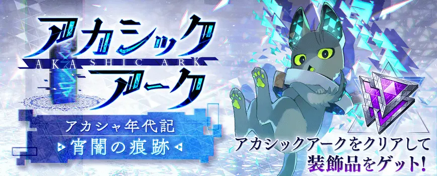
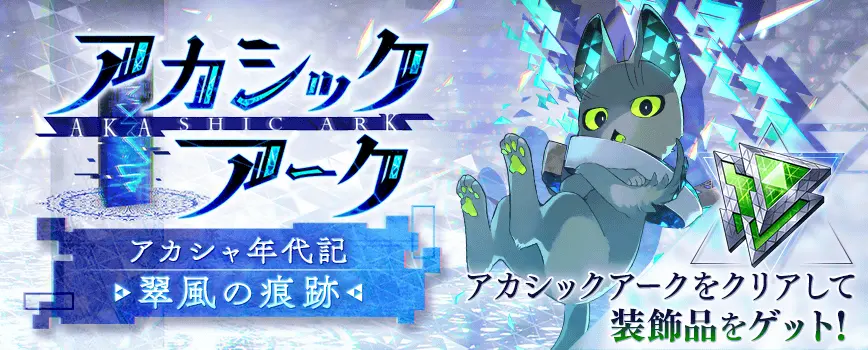
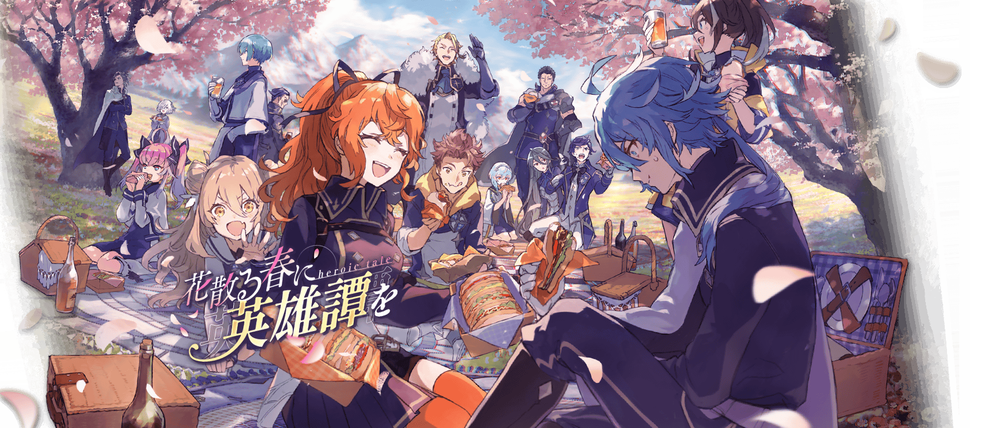
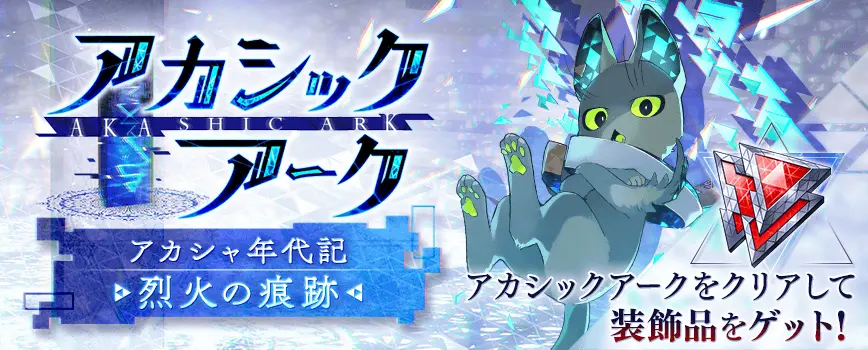

Main Quest (メインクエスト)
一章エリアグループ
1章共通エリア
graph LR
node1102011{1章:4月4日_BTL演習1_エリアノード}
click node1102011 "#10010"
node1102021{1章:4月6日_BTLバトル：キラーズ_エリアノード}
click node1102021 "#10022"
node1102031{1章:4月7日_BTLガウェイン加勢_エリアノード}
click node1102031 "#10025"
node1102041{1章:4月7日_BTLティルフィング無双_エリアノード}
click node1102041 "#10029"
node1102061{1章:4月20日_BTLバルバロイ討伐1_エリアノード}
click node1102061 "#10089"
node1102051{1章:4月18日_BTL演習2_エリアノード}
click node1102051 "#10094"
node1102071{1章:4月27日_BTLバルバロイ討伐2_エリアノード}
click node1102071 "#10138"
node1106441{1章:5月2日_BTL週次バトル_エリアノード}
click node1106441 "#10206"
node1102081{1章:5月5日_BTL隊商護衛_エリアノード}
click node1102081 "#10225"
node1106601{1章:5月10日_BTL週次バトル_エリアノード}
click node1106601 "#10241"
node1106761{1章:5月19日_BTL週次バトル_エリアノード}
click node1106761 "#10246"
node1102091{1章:5月15日_BTL道中バトル_エリアノード}
click node1102091 "#10253"
node1106211{1章:5月23日_BTL週次バトル_エリアノード}
click node1106211 "#10273"
node1106051{1章:5月31日_BTL週次バトル_エリアノード}
click node1106051 "#10279"
node1102101{1章:5月27日_BTL王と魔女_エリアノード}
click node1102101 "#10290"
node1102111{1章:5月27日_BTLレオデグランス王_エリアノード}
click node1102111 "#10292"
node1106811{1章:6月6日_BTL週次バトル_エリアノード}
click node1106811 "#10412"
node1102121{1章:6月8日_BTLローマ演習_エリアノード}
click node1102121 "#10423"
node1106361{1章:6月12日_BTL週次バトル_エリアノード}
click node1106361 "#10435"
node1102131{1章:6月16日_BTLリンゴ狩り：ブライアン戦_エリアノード}
click node1102131 "#10448"
node1106861{1章:6月21日_BTL週次バトル_エリアノード}
click node1106861 "#10464"
node1106481{1章6月30日_BTL週次バトル_エリアノード}
click node1106481 "#10468"
node1102141{1章6月24日_BTLブライアン戦1_エリアノード}
click node1102141 "#10472"
node1102151{1章6月26日_BTLブライアン戦2_エリアノード}
click node1102151 "#10475"
node1102161{1章6月26日_BTL魔女戦_エリアノード}
click node1102161 "#10479"
node1106111{1章:7月2日_BTL週次バトル_エリアノード}
click node1106111 "#10610"
node1106941{1章:7月7日_BTL週次バトル_エリアノード}
click node1106941 "#10622"
node1102171{1章:7月10日_BTLルーシャスのゲーム_エリアノード}
click node1102171 "#10632"
node1102181{1章:7月12日_BTLキャメリアード鉱山_エリアノード}
click node1102181 "#10638"
node1102191{1章:7月12日_BTLキャメリアード鉱山2_エリアノード}
click node1102191 "#10639"
node1106871{1章:7月16日_BTL週次バトル_エリアノード}
click node1106871 "#10646"
node1102201{1章:7月22日_BTL帰郷_エリアノード}
click node1102201 "#10656"
node1106021{1章:7月27日_BTL週次バトル_エリアノード}
click node1106021 "#10675"
node1102211{1章:7月30日_BTLガラハッド邂逅_エリアノード}
click node1102211 "#10687"
node1102221{1章:7月30日_BTLvsライエンス王_エリアノード}
click node1102221 "#10690"
node1106381{1章:8月5日_BTL週次バトル_エリアノード}
click node1106381 "#10817"
node1102231{1章:8月10日_BTL小分岐L_エリアノード}
click node1102231 "#10823"
node1102241{1章:8月10日_BTL小分岐G_エリアノード}
click node1102241 "#10827"
node1102251{1章:8月10日_BTL小分岐D_エリアノード}
click node1102251 "#10833"
node1106401{1章:8月15日_BTL週次バトル_エリアノード}
click node1106401 "#10842"
node1102261{1章:8月19日_BTLハドリアヌス長城_エリアノード}
click node1102261 "#10849"
node1102271{1章:8月30日_BTLライエンス王戦_エリアノード}
click node1102271 "#10861"
node1102281{1章:8月30日_BTLジョワイユ_エリアノード}
click node1102281 "#10863"
node1102301{1章:8月30日_BTL侵食ライエンスL_エリアノード}
click node1102301 "#10867"
node1102291{1章:8月30日_BTL侵食ライエンスG_エリアノード}
click node1102291 "#10871"
node1102311{1章:8月30日_BTL侵食ライエンスD_エリアノード}
click node1102311 "#10875"
node1206011{バルバロイ掃討戦【炎・斧】}
node1208011{バルバロイ掃討戦【氷・斧】}
node1205011{バルバロイ掃討戦【光・斧】}
node1207021{バルバロイ掃討戦【雷・剣】}
node1209021{バルバロイ掃討戦【風・剣】}
node1204021{バルバロイ掃討戦【闇・剣】}
node1102011 --> node1102021
node1102021 --> node1102031
node1102031 --> node1102041
node1102041 --> node1102061
node1102061 --> node1102051
node1102051 --> node1102071
node1102071 --> node1106441
node1106441 --> node1102081
node1102081 --> node1106601
node1106601 --> node1106761
node1106761 --> node1102091
node1102091 --> node1106211
node1106211 --> node1106051
node1106051 --> node1102101
node1102101 --> node1102111
node1102111 --> node1106811
node1102111 --> node1206011
node1106811 --> node1102121
node1102121 --> node1106361
node1106361 --> node1102131
node1102131 --> node1106861
node1106861 --> node1106481
node1106481 --> node1102141
node1102141 --> node1102151
node1102151 --> node1102161
node1102161 --> node1106111
node1106111 --> node1106941
node1106941 --> node1102171
node1102171 --> node1102181
node1102181 --> node1102191
node1102191 --> node1106871
node1106871 --> node1102201
node1102201 --> node1106021
node1106021 --> node1102211
node1102211 --> node1102221
node1102221 --> node1106381
node1106381 --> node1102231
node1102231 --> node1102241
node1102241 --> node1102251
node1102251 --> node1106401
node1106401 --> node1102261
node1102261 --> node1102271
node1102271 --> node1102281
node1102281 --> node1102301
node1102281 --> node1102291
node1102281 --> node1102311
node1206011 --> node1208011
node1208011 --> node1205011
node1205011 --> node1207021
node1207021 --> node1209021
node1209021 --> node1204021
1章ギネヴィアエリア
graph LR
node1106581{1章:G9月3日_BTL週次バトル_エリアノード}
click node1106581 "#20008"
node1106771{1章:G09月08日_BTL週次バトル_エリアノード}
click node1106771 "#20022"
node1103011{1章:G09月13日_BTLフレンとローラ_エリアノード}
click node1103011 "#20039"
node1106041{1章:G9月15日_BTL週次バトル_エリアノード}
click node1106041 "#20045"
node1103021{1章:G09月24日_BTLロンディニウム市街_エリアノード}
click node1103021 "#20070"
node1103031{1章:G09月24日_BTLエレイン＋ラヴェイン_エリアノード}
click node1103031 "#20076"
node1106631{1章:G9月30日_BTL週次バトル_エリアノード}
click node1106631 "#20091"
node1106931{1章:G10月1日_BTL週次バトル_エリアノード}
click node1106931 "#20204"
node1106151{1章:10月10日_BTL週次バトル_エリアノード}
click node1106151 "#20225"
node1103041{1章:G10月15日_BTL道中バトル_エリアノード}
click node1103041 "#20235"
node1103051{1章:G10月16日_BTLvsヴェルナルス_エリアノード}
click node1103051 "#20237"
node1103061{1章:G10月16日_BTLバルムンク_エリアノード}
click node1103061 "#20240"
node1106961{1章:G10月20日_BTL週次バトル_エリアノード}
click node1106961 "#20245"
node1106821{1章:G10月30日_BTL週次バトル_エリアノード}
click node1106821 "#20285"
node1106881{1章:G11月09日_BTL週次バトル_エリアノード}
click node1106881 "#20425"
node1106901{1章:G11月13日_BTL週次バトル_エリアノード}
click node1106901 "#20437"
node1103071{1章:G11月17日_BTLモーロノエー_エリアノード}
click node1103071 "#20447"
node1106921{1章:G11月22日_BTL週次バトル_エリアノード}
click node1106921 "#20462"
node1103081{1章:G11月26日_BTLローマ全面衝突_エリアノード}
click node1103081 "#20469"
node1103091{1章:G11月26日_BTLアスカロンGS_エリアノード}
click node1103091 "#20473"
node1103101{1章:G11月26日_BTL暴走ガラハッド_エリアノード}
click node1103101 "#20476"
node1103111{1章:G12月09日_BTLキャメリアード電撃戦_エリアノード}
click node1103111 "#20634"
node1106221{1章:G12月13日_BTL週次バトル_エリアノード}
click node1106221 "#20645"
node1106391{1章:G12月15日_BTL週次バトル_エリアノード}
click node1106391 "#20651"
node1103121{1章:G12月21日_BTL魔女決戦_エリアノード}
click node1103121 "#20665"
node1103131{1章:G12月21日_BTL魔女モルガン_エリアノード}
click node1103131 "#20668"
node1103141{1章:G12月21日_BTL対フレン・グラム_エリアノード}
click node1103141 "#20670"
node1106431{1章:G12月28日_BTL週次バトル_エリアノード}
click node1106431 "#20804"
node1106591{1章:G1月04日_BTL週次バトル_エリアノード}
click node1106591 "#20819"
node1106731{1章:G1月07日_BTL週次バトル_エリアノード}
click node1106731 "#20829"
node1106571{1章:1月10日_BTL週次バトル_エリアノード}
click node1106571 "#20839"
node1103151{1章:G01月23日_BTL3人の竜殺し_エリアノード}
click node1103151 "#20868"
node1103161{1章:G01月23日_BTLエレインとアスカロン_エリアノード}
click node1103161 "#20877"
node1103171{1章:G01月23日_BTL白き竜とルーシャス_エリアノード}
click node1103171 "#20881"
node1103181{1章:G01月23日_BTLvs白き竜_エリアノード}
click node1103181 "#20886"
node1106581 --> node1106771
node1106771 --> node1103011
node1103011 --> node1106041
node1106041 --> node1103021
node1103021 --> node1103031
node1103031 --> node1106631
node1106631 --> node1106931
node1106931 --> node1106151
node1106151 --> node1103041
node1103041 --> node1103051
node1103051 --> node1103061
node1103061 --> node1106961
node1106961 --> node1106821
node1106821 --> node1106881
node1106881 --> node1106901
node1106901 --> node1103071
node1103071 --> node1106921
node1106921 --> node1103081
node1103081 --> node1103091
node1103091 --> node1103101
node1103101 --> node1103111
node1103111 --> node1106221
node1106221 --> node1106391
node1106391 --> node1103121
node1103121 --> node1103131
node1103131 --> node1103141
node1103141 --> node1106431
node1106431 --> node1106591
node1106591 --> node1106731
node1106731 --> node1106571
node1106571 --> node1103151
node1103151 --> node1103161
node1103161 --> node1103171
node1103171 --> node1103181
1章ランスロットエリア
graph LR
node1106951{1章:L09月6日_BTL週次バトル_エリアノード}
click node1106951 "#30015"
node1106181{1章:L09月11日_BTL週次バトル_エリアノード}
click node1106181 "#30027"
node1104011{1章:L09月12日_BTL最後の授業_エリアノード}
click node1104011 "#30030"
node1104021{1章:L09月20日_BTLカーライル城1_エリアノード}
click node1104021 "#30046"
node1104031{1章:L09月20日_BTLカーライル城2_エリアノード}
click node1104031 "#30048"
node1106841{1章:L09月22日_BTL週次バトル_エリアノード}
click node1106841 "#30054"
node1106911{1章:L09月28日_BTL週次バトル_エリアノード}
click node1106911 "#30071"
node1106131{1章:L10月2日_BTL週次バトル_エリアノード}
click node1106131 "#30211"
node1106851{1章:L10月11日_BTL週次バトル_エリアノード}
click node1106851 "#30233"
node1104051{1章:L10月19日_BTL聖杯探索2P①_エリアノード}
click node1104051 "#30247"
node1104081{1章:L10月22日_BTL聖杯探索2P②_エリアノード}
click node1104081 "#30250"
node1104091{1章:L10月22日_BTL聖杯探索2P③_エリアノード}
click node1104091 "#30252"
node1106751{1章:L10月28日_BTL週次バトル_エリアノード}
click node1106751 "#30267"
node1104101{1章:L11月2日_BTL母の墓への帰郷_エリアノード}
click node1104101 "#30403"
node1106781{1章:L11月6日_BTL週次バトル_エリアノード}
click node1106781 "#30416"
node1106031{1章:L11月12日_BTL週次バトル_エリアノード}
click node1106031 "#30431"
node1106101{1章:L11月23日_BTL週次バトル_エリアノード}
click node1106101 "#30446"
node1104111{1章:L11月26日_BTLガラハッド暴走_エリアノード}
click node1104111 "#30463"
node1104121{1章:L11月26日_BTL対ローマ全軍_エリアノード}
click node1104121 "#30466"
node1104131{1章:L11月26日_BTL対銀卓騎士_エリアノード}
click node1104131 "#30469"
node1104141{1章:L12月10日_BTL王の復帰_エリアノード}
click node1104141 "#30627"
node1106161{1章:L12月11日_BTL週次バトル_エリアノード}
click node1106161 "#30633"
node1104151{1章:L12月20日_BTLアステラ前戦_エリアノード}
click node1104151 "#30651"
node1104161{1章:L12月21日_BTLペレス王戦_エリアノード}
click node1104161 "#30656"
node1104171{1章:L12月21日_BTL侵食銀卓戦_エリアノード}
click node1104171 "#30661"
node1106531{1章:L12月27日_BTL週次バトル_エリアノード}
click node1106531 "#30680"
node1106541{1章:L1月9日_BTL週次バトル_エリアノード}
click node1106541 "#30822"
node1104181{1章:L1月13日_BTL王殺し_エリアノード}
click node1104181 "#30833"
node1104191{1章:L1月13日_BTL魔女モルガン_エリアノード}
click node1104191 "#30837"
node1104201{1章:L1月24日_BTL魔王決戦1_エリアノード}
click node1104201 "#30864"
node1104211{1章:L1月24日_BTL魔王決戦2_エリアノード}
click node1104211 "#30872"
node1104221{1章:L1月24日_BTL白き竜決戦_エリアノード}
click node1104221 "#30880"
node1106951 --> node1106181
node1106181 --> node1104011
node1104011 --> node1104021
node1104021 --> node1104031
node1104031 --> node1106841
node1106841 --> node1106911
node1106911 --> node1106131
node1106131 --> node1106851
node1106851 --> node1104051
node1104051 --> node1104081
node1104081 --> node1104091
node1104091 --> node1106751
node1106751 --> node1104101
node1104101 --> node1106781
node1106781 --> node1106031
node1106031 --> node1106101
node1106101 --> node1104111
node1104111 --> node1104121
node1104121 --> node1104131
node1104131 --> node1104141
node1104141 --> node1106161
node1106161 --> node1104151
node1104151 --> node1104161
node1104161 --> node1104171
node1104171 --> node1106531
node1106531 --> node1106541
node1106541 --> node1104181
node1104181 --> node1104191
node1104191 --> node1104201
node1104201 --> node1104211
node1104211 --> node1104221
1章ディナタンエリア
graph LR
node1105011{1章:D09月05日_BTLモルドレッドとクラリス_エリアノード}
click node1105011 "#40012"
node1106721{1章:D09月11日_BTL週次バトル_エリアノード}
click node1106721 "#40029"
node1106831{1章:D09月19日_BTL週次バトル_エリアノード}
click node1106831 "#40043"
node1105021{1章:D09月20日_BTL学園敵襲_エリアノード}
click node1105021 "#40056"
node1105031{1章:D09月20日_BTLアーサー戦_エリアノード}
click node1105031 "#40061"
node1105041{1章:D09月20日_BTLブルーノの幻影_エリアノード}
click node1105041 "#40070"
node1105051{1章:D09月20日_BTL妖精の森_エリアノード}
click node1105051 "#40075"
node1105061{1章:D09月20日_BTL脱出_エリアノード}
click node1105061 "#40077"
node1105071{1章:D10月21日_BTLモルドレッドの帰還_エリアノード}
click node1105071 "#40215"
node1105081{1章:D10月21日_BTLガウェインの離反_エリアノード}
click node1105081 "#40217"
node1106891{1章:D10月23日_BTL週次バトル_エリアノード}
click node1106891 "#40227"
node1105091{1章:D10月26日_BTLバルバロイ襲撃_エリアノード}
click node1105091 "#40239"
node1105101{1章:D11月03日_BTLハロウィン準備_エリアノード}
click node1105101 "#40406"
node1105111{1章:D11月08日_BTLバルバロイの増加1_エリアノード}
click node1105111 "#40420"
node1105121{1章:D11月08日_BTLバルバロイの増加2_エリアノード}
click node1105121 "#40421"
node1105131{1章:D11月16日_BTLハロウィンの魔女_エリアノード}
click node1105131 "#40443"
node1105141{1章:D11月28日_BTLヴェルナルス加勢_エリアノード}
click node1105141 "#40468"
node1105151{1章:D11月30日_BTLルーシャス救助戦_エリアノード}
click node1105151 "#40471"
node1105161{1章:D12月06日_BTLログレス市街戦_エリアノード}
click node1105161 "#40613"
node1105171{1章:D12月07日_BTLグリートーネア戦_エリアノード}
click node1105171 "#40616"
node1106261{1章:D12月09日_BTL週次バトル_エリアノード}
click node1106261 "#40631"
node1105181{1章:D12月15日_BTLスノードン山道中1_エリアノード}
click node1105181 "#40636"
node1105191{1章:D12月15日_BTLスノードン山道中2_エリアノード}
click node1105191 "#40637"
node1105201{1章:D12月15日_BTLグリートン戦_エリアノード}
click node1105201 "#40640"
node1105211{1章:D12月22日_BTLアバドン道中_エリアノード}
click node1105211 "#40667"
node1105221{1章:D12月23日_BTLランスロット戦_エリアノード}
click node1105221 "#40669"
node1105231{1章:D01月15日_BTLキャメリアード城_エリアノード}
click node1105231 "#40834"
node1105241{1章:D01月26日_BTLギネヴィア戦_エリアノード}
click node1105241 "#40857"
node1105251{1章:D02月06日_BTL一夜砦_エリアノード}
click node1105251 "#41001"
node1105261{1章:D02月06日_BTLガウェイン戦_エリアノード}
click node1105261 "#41003"
node1105271{1章:D02月08日_BTLマルディサント戦_エリアノード}
click node1105271 "#41007"
node1105281{1章:D02月10日_BTLアーサー対峙1_エリアノード}
click node1105281 "#41011"
node1105291{1章:D02月10日_BTLアーサー対峙2_エリアノード}
click node1105291 "#41012"
node1105301{1章:D02月10日_BTLアーサー対峙3_エリアノード}
click node1105301 "#41013"
node1105311{1章:D02月10日_BTLアーサーと魔女_エリアノード}
click node1105311 "#41016"
node1105011 --> node1106721
node1106721 --> node1106831
node1106831 --> node1105021
node1105021 --> node1105031
node1105031 --> node1105041
node1105041 --> node1105051
node1105051 --> node1105061
node1105061 --> node1105071
node1105071 --> node1105081
node1105081 --> node1106891
node1106891 --> node1105091
node1105091 --> node1105101
node1105101 --> node1105111
node1105111 --> node1105121
node1105121 --> node1105131
node1105131 --> node1105141
node1105141 --> node1105151
node1105151 --> node1105161
node1105161 --> node1105171
node1105171 --> node1106261
node1106261 --> node1105181
node1105181 --> node1105191
node1105191 --> node1105201
node1105201 --> node1105211
node1105211 --> node1105221
node1105221 --> node1105231
node1105231 --> node1105241
node1105241 --> node1105251
node1105251 --> node1105261
node1105261 --> node1105271
node1105271 --> node1105281
node1105281 --> node1105291
node1105291 --> node1105301
node1105301 --> node1105311
現代編エリアグループ
現代編エリア
graph LR
node20101{ペイン・キラー}
node20201{ステイ・アウェイ}
node20301{ベリー・ラフ（1）}
node20302{ベリー・ラフ（2）}
node20401{イミテーション（1）}
node20402{イミテーション（2）}
node20411{【EX】イミテーション}
node20501{ゴールド・ストラグル}
node20601{ペイン・キラーズ}
node20611{【EX】ペイン・キラーズ}
node20101 --> node20201
node20201 --> node20301
node20301 --> node20302
node20302 --> node20401
node20401 --> node20402
node20402 --> node20501
node20402 --> node20411
node20501 --> node20601
node20601 --> node20611
現代編エリア2
graph LR
node20701{スタンバイ・ミー}
node20801{フー・アー・ユー}
node20901{ロンリー・チャイルド}
node21001{フレンズ}
node21101{ヘルプ・ユアセルフ}
node21201{ティーチ・ミー}
node21301{ニード・ユー}
node21401{デビルズ・トリガー}
node21501{ロックオン！}
node21511{【EX】ロックオン！}
node20701 --> node20801
node20801 --> node20901
node20901 --> node21001
node21001 --> node21101
node21101 --> node21201
node21201 --> node21301
node21301 --> node21401
node21401 --> node21501
node21501 --> node21511
鬼滅の刃コラボエリアグループ
炭治郎・杏寿郎エリア
graph LR
node11001{炭治郎・杏寿郎エリア:1節}
node11002{炭治郎・杏寿郎エリア:2節}
node11003{炭治郎・杏寿郎エリア:3節}
node11004{炭治郎・杏寿郎エリア:4節}
node11005{炭治郎・杏寿郎エリア:5節}
node11006{炭治郎・杏寿郎エリア:6節}
node11007{炭治郎・杏寿郎エリア:7節}
node11008{炭治郎・杏寿郎エリア:8節}
node11009{炭治郎・杏寿郎エリア:9節}
node11010{炭治郎・杏寿郎エリア:10節}
node11011{炭治郎・杏寿郎エリア:11節}
node11012{炭治郎・杏寿郎エリア:12節}
node11013{炭治郎・杏寿郎エリア:13節}
node11014{炭治郎・杏寿郎エリア:14節}
node11015{炭治郎・杏寿郎エリア:15節}
node11016{炭治郎・杏寿郎エリア:16節}
node11101{【HARD】炭治郎・杏寿郎エリア:1節}
node11102{【HARD】炭治郎・杏寿郎エリア:2節}
node11103{【HARD】炭治郎・杏寿郎エリア:3節}
node11104{【HARD】炭治郎・杏寿郎エリア:4節}
node11105{【HARD】炭治郎・杏寿郎エリア:5節}
node11106{【HARD】炭治郎・杏寿郎エリア:6節}
node11107{【HARD】炭治郎・杏寿郎エリア:7節}
node11108{【HARD】炭治郎・杏寿郎エリア:8節}
node11109{【HARD】炭治郎・杏寿郎エリア:9節}
node11110{【HARD】炭治郎・杏寿郎エリア:10節}
node11111{【HARD】炭治郎・杏寿郎エリア:11節}
node11112{【HARD】炭治郎・杏寿郎エリア:12節}
node11113{【HARD】炭治郎・杏寿郎エリア:13節}
node11114{【HARD】炭治郎・杏寿郎エリア:14節}
node11115{【HARD】炭治郎・杏寿郎エリア:15節}
node11116{【HARD】炭治郎・杏寿郎エリア:16節}
node11001 --> node11002
node11001 --> node11003
node11002 --> node11004
node11003 --> node11005
node11004 --> node11006
node11005 --> node11006
node11006 --> node11007
node11006 --> node11008
node11007 --> node11009
node11008 --> node11010
node11009 --> node11011
node11010 --> node11011
node11011 --> node11012
node11011 --> node11013
node11012 --> node11014
node11013 --> node11015
node11014 --> node11016
node11015 --> node11016
node11016 --> node11101
node11101 --> node11102
node11101 --> node11103
node11102 --> node11104
node11103 --> node11105
node11104 --> node11106
node11105 --> node11106
node11106 --> node11107
node11106 --> node11108
node11107 --> node11109
node11108 --> node11110
node11109 --> node11111
node11110 --> node11111
node11111 --> node11112
node11111 --> node11113
node11112 --> node11114
node11113 --> node11115
node11114 --> node11116
node11115 --> node11116
禰豆子・蜜璃エリア
graph LR
node12001{禰豆子・蜜璃エリア:1節}
node12002{禰豆子・蜜璃エリア:2節}
node12003{禰豆子・蜜璃エリア:3節}
node12004{禰豆子・蜜璃エリア:4節}
node12005{禰豆子・蜜璃エリア:5節}
node12006{禰豆子・蜜璃エリア:6節}
node12007{禰豆子・蜜璃エリア:7節}
node12008{禰豆子・蜜璃エリア:8節}
node12009{禰豆子・蜜璃エリア:9節}
node12010{禰豆子・蜜璃エリア:10節}
node12011{禰豆子・蜜璃エリア:11節}
node12012{禰豆子・蜜璃エリア:12節}
node12013{禰豆子・蜜璃エリア:13節}
node12014{禰豆子・蜜璃エリア:14節}
node12015{禰豆子・蜜璃エリア:15節}
node12016{禰豆子・蜜璃エリア:16節}
node12101{【HARD】禰豆子・蜜璃エリア:1節}
node12102{【HARD】禰豆子・蜜璃エリア:2節}
node12103{【HARD】禰豆子・蜜璃エリア:3節}
node12104{【HARD】禰豆子・蜜璃エリア:4節}
node12105{【HARD】禰豆子・蜜璃エリア:5節}
node12106{【HARD】禰豆子・蜜璃エリア:6節}
node12107{【HARD】禰豆子・蜜璃エリア:7節}
node12108{【HARD】禰豆子・蜜璃エリア:8節}
node12109{【HARD】禰豆子・蜜璃エリア:9節}
node12110{【HARD】禰豆子・蜜璃エリア:10節}
node12111{【HARD】禰豆子・蜜璃エリア:11節}
node12112{【HARD】禰豆子・蜜璃エリア:12節}
node12113{【HARD】禰豆子・蜜璃エリア:13節}
node12114{【HARD】禰豆子・蜜璃エリア:14節}
node12115{【HARD】禰豆子・蜜璃エリア:15節}
node12116{【HARD】禰豆子・蜜璃エリア:16節}
node12001 --> node12002
node12001 --> node12003
node12002 --> node12004
node12003 --> node12005
node12004 --> node12006
node12005 --> node12006
node12006 --> node12007
node12006 --> node12008
node12007 --> node12009
node12008 --> node12010
node12009 --> node12011
node12010 --> node12011
node12011 --> node12012
node12011 --> node12013
node12012 --> node12014
node12013 --> node12015
node12014 --> node12016
node12015 --> node12016
node12016 --> node12101
node12101 --> node12102
node12101 --> node12103
node12102 --> node12104
node12103 --> node12105
node12104 --> node12106
node12105 --> node12106
node12106 --> node12107
node12106 --> node12108
node12107 --> node12109
node12108 --> node12110
node12109 --> node12111
node12110 --> node12111
node12111 --> node12112
node12111 --> node12113
node12112 --> node12114
node12113 --> node12115
node12114 --> node12116
node12115 --> node12116
義勇・しのぶエリア
graph LR
node13001{義勇・しのぶエリア:1節}
node13002{義勇・しのぶエリア:2節}
node13003{義勇・しのぶエリア:3節}
node13004{義勇・しのぶエリア:4節}
node13005{義勇・しのぶエリア:5節}
node13006{義勇・しのぶエリア:6節}
node13007{義勇・しのぶエリア:7節}
node13008{義勇・しのぶエリア:8節}
node13009{義勇・しのぶエリア:9節}
node13010{義勇・しのぶエリア:10節}
node13011{義勇・しのぶエリア:11節}
node13012{義勇・しのぶエリア:12節}
node13013{義勇・しのぶエリア:13節}
node13014{義勇・しのぶエリア:14節}
node13015{義勇・しのぶエリア:15節}
node13016{義勇・しのぶエリア:16節}
node13101{【HARD】義勇・しのぶエリア:1節}
node13102{【HARD】義勇・しのぶエリア:2節}
node13103{【HARD】義勇・しのぶエリア:3節}
node13104{【HARD】義勇・しのぶエリア:4節}
node13105{【HARD】義勇・しのぶエリア:5節}
node13106{【HARD】義勇・しのぶエリア:6節}
node13107{【HARD】義勇・しのぶエリア:7節}
node13108{【HARD】義勇・しのぶエリア:8節}
node13109{【HARD】義勇・しのぶエリア:9節}
node13110{【HARD】義勇・しのぶエリア:10節}
node13111{【HARD】義勇・しのぶエリア:11節}
node13112{【HARD】義勇・しのぶエリア:12節}
node13113{【HARD】義勇・しのぶエリア:13節}
node13114{【HARD】義勇・しのぶエリア:14節}
node13115{【HARD】義勇・しのぶエリア:15節}
node13116{【HARD】義勇・しのぶエリア:16節}
node13001 --> node13002
node13001 --> node13003
node13002 --> node13004
node13003 --> node13005
node13004 --> node13006
node13005 --> node13006
node13006 --> node13007
node13006 --> node13008
node13007 --> node13009
node13008 --> node13010
node13009 --> node13011
node13010 --> node13011
node13011 --> node13012
node13011 --> node13013
node13012 --> node13014
node13013 --> node13015
node13014 --> node13016
node13015 --> node13016
node13016 --> node13101
node13101 --> node13102
node13101 --> node13103
node13102 --> node13104
node13103 --> node13105
node13104 --> node13106
node13105 --> node13106
node13106 --> node13107
node13106 --> node13108
node13107 --> node13109
node13108 --> node13110
node13109 --> node13111
node13110 --> node13111
node13111 --> node13112
node13111 --> node13113
node13112 --> node13114
node13113 --> node13115
node13114 --> node13116
node13115 --> node13116
メインストーリー1章
1章共通ルート
1章1年目04月02日(火)
1章:4月3日_転校初日
100748 1章/メイン/x0403_転校初日 はじまりの日
1章:4月3日_ディナタンも転校
100380 1章/メイン/x0401_ディナタンも転校 ディナタンもともに
1章:4月3日_自己紹介
100384 1章/メイン/x0401_自己紹介 俺は円卓の騎士になるんだ
1章:4月3日_ガウェイン
100754 1章/メイン/x0403_ガウェイン 気にしてない
1章1年目04月03日(水)
PTN噂話A1
200002 パターン/共通/04月11日/PTN噂話A1 噂話 新規追加
1章:4月17日_PTN座学授業1
102087 1章/メイン/x0417_PTN座学授業1_パターン 授業時間
ウレリー学級委員長
200815 1章/メイン/ウレリー学級委員長
1章:4月4日_BTL演習1
100564 1章/バトルADV/x0404_BTL演習1_導入 通常バトルADV
100565 1章/バトルADV/x0404_BTL演習1_完了 通常バトルADV
10001 追加/チュートリアルバトル/BT_TUTORIAL99_01
1章:4月4日_入学試験の要請
100757 1章/メイン/x0404_入学試験の要請 入学試験の要請
1章:4月4日_入学試験
100758 1章/メイン/x0404_入学試験 入学試験について
1章:4月3日_自由行動X_夜
1章1年目04月04日(木)
ウレリーと勉強
201305 1章/メイン/ウレリーと勉強
1章:4月4日_エリアイベント02
1章:4月4日_自由行動X
1章1年目04月05日(金)
裏口入学再試験1
200115 元サブ/共通/04月05日/【ギネヴィアとの交流、剣の祭壇へ】 金箔の妃 新規追加
裏口入学再試験2
200822 1章/メイン/裏口入学再試験2
1章:4月5日_エリアイベント01
良い子と独り法師2
200117 元サブ/共通/04月05日/良い子と独り法師2 図書館俳優 新規追加
1章:4月6日_剣の祭壇へ向かう～
100391 1章/メイン/x0406_剣の祭壇へ向かう～ 剣の祭壇へ
1章:4月6日_BTLバトル：キラーズ
100566 1章/バトルADV/x0406_BTLバトル：キラーズ_導入 通常バトルADV
10006 追加/チュートリアルバトル/BT_TUTORIAL99_06
100567 1章/バトルADV/x0406_BTLバトル：キラーズ_完了 通常バトルADV
1章:4月6日_儀式やキラーズとは
100392 1章/メイン/x0406_儀式やキラーズとは 世界の仕組み シーンID変更
1章1年目04月06日(土)
1章:4月7日_剣の祭壇にて①
100393 1章/メイン/x0407_剣の祭壇にて① 剣の祭壇にて
1章:4月7日_BTLガウェイン加勢
102333 1章/バトルADV/x0407_ガウェイン加勢_友軍増援01 増援用
1章:4月7日_妖精殺しの息子に～
100395 1章/メイン/x0407_妖精殺しの息子に～ ランスロットとディナタン
1章:4月7日_ティルフィング現界
100396 1章/メイン/x0407_ティルフィング現界 錆びついた伝承
1章:4月7日_ティルフィング初登場
100397 1章/メイン/x0407_ティルフィング初登場 ティルフィング登場
1章:4月7日_BTLティルフィング無双
100568 1章/バトルADV/x0407_BTLティルフィング無双_導入 通常バトルADV
100569 1章/バトルADV/x0407_BTLティルフィング無双_完了 通常バトルADV
1章:4月7日_キャメ～不穏なオーラ
100400 1章/メイン/x0407_キャメ～不穏なオーラ 揺れるキャメリアード
1章1年目04月08日(月)
1章:4月9日_回想：妖精殺しの報
100402 1章/メイン/x0409_回想：妖精殺しの報 妖精殺しの報せ
1章:4月9日_療養院
100403 1章/メイン/x0409_療養院 戦いからの目覚め
1章:4月9日_エリアイベント01
1章:4月9日_ギネヴィアとティル～
100405 1章/メイン/x0409_ギネヴィアとティル～ ギネヴィアとティルフィング
1章1年目04月10日(水)
1章:4月10日_PTN噂話A2
100429 1章/メイン/x0410_PTN噂話A2_パターン 噂話
1章1年目04月09日(火)
1章:4月30日_PTN座学授業3
102095 1章/メイン/x0430_PTN座学授業3_パターン 授業時間
ウレリーと裁縫
201307 1章/メイン/ウレリーと裁縫
1章:4月9日_自由行動X
【良い子と独り法師３・病室面接】
200118 元サブ/共通/04月09日/【良い子と独り法師３・病室面接】 病室面接 新規追加
1章1年目04月10日(水)
ウレリーと特訓
201306 1章/メイン/ウレリーと特訓
1章:4月10日_エリアイベント02
1章:4月10日_自由行動X
1章:4月10日_ティルフィング転入
100406 1章/メイン/x0410_ティルフィング転入 転校生ティルフィング
1章:4月10日_聖杯と妖精殺し
100407 1章/メイン/x0410_聖杯と妖精殺し 聖杯と妖精殺し
【ディナタンがアイドル扱いされる】
200119 元サブ/共通/04月10日/【ディナタンがアイドル扱いされる】 泥の妖精 新規追加
1章:4月10日_自由行動X_夜
1章1年目04月11日(木)
1章:4月4日_PTNキャラ会話（登校）特1
102076 1章/メイン/x0404_PTNキャラ会話特1_パターン 登校時間 シーンID変更
1章:5月7日_PTN座学授業2
102105 1章/メイン/x0507_PTN座学授業2_パターン 授業時間
ウレリーとガーデニング
201309 1章/メイン/ウレリーと花壇
1章:4月11日_エリアイベント01
1章:4月11日_自由行動X_2
1章:4月11日_ティルフィング_コミュ解
100027 1章/コミュ/x0401_ティルフィング_ランクアップ1 キズナ解放：ティルフィング
1章:4月11日_エリアイベント02
1章:4月11日_自由行動
1章1年目04月12日(金)
1章:4月12日_PTN座学授業4
200454 1章/メイン/x0412_PTN座学授業4_パターン 授業時間
ウレリーとスケッチ
201308 1章/メイン/ウレリーと絵描
1章:4月12日_エリアイベント02
1章:4月12日_自由行動X
1章:4月12日_バルバロイ討伐への準備①
100409 1章/メイン/x0412_バルバロイ討伐への準備① ログレス憲兵団
1章:4月12日_エリアイベント01
1章1年目04月13日(土)
ウレリーと猫と兵士
201314 1章/メイン/ウレリーと猫と兵士
1章:5月8日_マルイル_コミュ解禁
100225 1章/コミュ/x0401_マルイル_ランクアップ1 キズナ解放：マルイル
1章:4月13日_エリアイベント01
1章:4月13日_自由行動X_2
1章:4月13日_自由行動X_夜
1章1年目04月14日(日)
ウレリーと食堂
202328 1章/メイン/ウレリーと屋上_改修版
1章:4月18日_エリアイベント01
1章:4月18日_自由行動X_2
1章1年目04月15日(月)
1章:4月15日_PTN座学授業_特殊2
102083 1章/メイン/x0415_PTN座学授業特2_パターン 授業時間 シーンID変更:PT5_01_0056
ウレリーとツボとタル
201310 1章/メイン/ウレリーとツボとタル
1章:4月15日_エリアイベント01
1章:4月15日_自由行動X_2
眼鏡越しの勇気I_1
200823 1章/メイン/眼鏡越しの勇気I_1
眼鏡越しの勇気I_2
200824 1章/メイン/眼鏡越しの勇気I_2
1章:5月1日_キッス_コミュ解禁
100258 1章/コミュ/x0401_キッス_ランクアップ1 キズナ解放：キッス
1章:4月15日_エリアイベント02
1章:4月15日_自由行動X_夜
1章1年目04月16日(火)
1章:4月16日_PTN座学授業5
200455 1章/メイン/x0416_PTN座学授業5_パターン 授業時間
ウレリーと屋上
201311 1章/メイン/ウレリーと屋上
1章:4月16日_エリアイベント01
1章:4月16日_自由行動X
ラロゥ初登場
200816 1章/メイン/ラロゥ初登場
1章:4月16日_自由行動X_夜
1章1年目04月17日(水)
1章:4月17日_PTN座学授業6
200456 1章/メイン/x0417_PTN座学授業6_パターン 授業時間
1章:4月20日_BTLバルバロイ討伐1
100572 1章/バトルADV/x0420_BTLバルバロイ討伐1_導入 通常バトルADV
100573 1章/バトルADV/x0420_BTLバルバロイ討伐1_完了 通常バトルADV
1章:4月20日_バルバロイ討伐後報告①
100411 1章/メイン/x0420_バルバロイ討伐後報告① 最初の任務報告
1章:4月20日_バルバロイ討伐への準備②
100412 1章/メイン/x0420_バルバロイ討伐への準備② 2つめの任務
1章1年目04月20日(土)
眼鏡越しの勇気II
200817 1章/メイン/眼鏡越しの勇気II
1章1年目04月18日(木)
1章:4月16日_PTN登校4月2
102085 1章/メイン/x0416_PTN登校4月2_パターン 登校時間
1章:4月18日_BTL演習2
100570 1章/バトルADV/x0418_BTL演習2_導入 通常バトルADV
100571 1章/バトルADV/x0418_BTL演習2_完了 通常バトルADV
ウレリーと大工房
201315 1章/メイン/ウレリーと大工房
1章:4月14日_エリアイベント01
1章:4月14日_自由行動X_2
1章:4月17日_ラロゥ_コミュ解禁
100214 1章/コミュ/x0401_ラロゥ_ランクアップ1 キズナ解放：ラロゥ
1章:4月18日_エリアイベント02
1章:4月18日_自由行動
1章1年目04月19日(金)
1章:4月19日_PTNキャラ会話（登校）特殊4
102088 1章/メイン/x0419_PTNキャラ会話特4_パターン 登校時間 シーンID変更
ウレリーと療養院
201312 1章/メイン/ウレリーと療養院
1章:4月19日_エリアイベント01
1章:4月19日_自由行動X
1章:4月19日_自由行動X_夜
1章1年目04月20日(土)
1章:4月20日_自由行動X_2
1章:4月20日_自由行動X_夜
1章1年目04月21日(日)
眼鏡越しの勇気III_バトル前_1
200825 1章/メイン/眼鏡越しの勇気III_バトル前_1
眼鏡越しの勇気III_バトル前_2
200826 1章/メイン/眼鏡越しの勇気III_バトル前_2
眼鏡越しの勇気III_バトル前_3
200827 1章/メイン/眼鏡越しの勇気III_バトル前_3
眼鏡越しの勇気III_バトル
8001 4月/チュートリアルバトル/BT_TUTORIAL08_01
8002 4月/チュートリアルバトル/BT_TUTORIAL08_02
8003 4月/チュートリアルバトル/BT_TUTORIAL08_03
8004 4月/チュートリアルバトル/BT_TUTORIAL08_04
8005 4月/チュートリアルバトル/BT_TUTORIAL08_05
8006 4月/チュートリアルバトル/BT_TUTORIAL08_06
眼鏡越しの勇気III_バトル後_1
200828 1章/メイン/眼鏡越しの勇気III_バトル後_1
眼鏡越しの勇気III_バトル後_2
200829 1章/メイン/眼鏡越しの勇気III_バトル後_2
粗悪な兵、露悪な王
200818 1章/メイン/粗悪な兵、露悪な王
1章1年目04月22日(月)
欠けた関心_1
200830 1章/メイン/欠けた関心_1
欠けた関心_2
200831 1章/メイン/欠けた関心_2
現実が許せない、なら
200819 1章/メイン/現実が許せない、なら
もう教えてもらえない
200820 1章/メイン/もう教えてもらえない
1章1年目04月23日(火)
1章:4月23日_PTN座学授業2
102091 1章/メイン/x0423_PTN座学授業2_パターン 授業時間
良い子と独り法師4-1①
200121 元サブ/共通/04月23日/良い子と独り法師4-1① 妖精の羽音 新規追加
1章:4月23日_良い子と独り法師4-1②
200120 元サブ/共通/04月23日/1章:4月23日_良い子と独り法師4-1② 立ち聞き 新規追加
1章:4月23日_クリスティーナ_コミュ解
100236 1章/コミュ/x0401_クリスティーナ_ランクアップ1 キズナ解放：クリスティーナ
1章:4月23日_自由行動
1章:4月23日_自由行動X_夜
1章:4月24日_PTN噂話A3
100449 1章/メイン/x0424_PTN噂話A3_パターン 噂話
1章1年目04月24日(水)
1章:4月24日_PTN座学授業_特殊3
102092 1章/メイン/x0424_PTN座学授業特3_パターン 授業時間 シーンID変更:PT5_01_0057
良い子と独り法師4-2
200122 元サブ/共通/04月24日/良い子と独り法師4-2 噂好きラグネル 新規追加
良い子と独り法師5①
200123 元サブ/共通/04月24日/良い子と独り法師5① 良い子と独り法師 新規追加
良い子と独り法師5②
200124 元サブ/共通/04月24日/良い子と独り法師5② ホント、オツカレ 新規追加
良い子と独り法師5③
200125 元サブ/共通/04月24日/良い子と独り法師5③ 武器が記憶を 新規追加
1章1年目04月25日(木)
1章:4月25日_自由行動X
1章:4月25日_自由行動X_夜
1章1年目04月26日(金)
1章:4月26日_PTN登校4月3
102086 1章/メイン/x0416_PTN登校4月3_パターン 登校時間
1章:4月26日_PTN昼食ギネヴィア
102094 1章/メイン/x0426_PTN昼食ギネヴィア_パターン 昼食 シーンID変更
1章:4月26日_自由行動X
1章:4月26日_自由行動X_夜
1章1年目04月27日(土)
1章:4月27日_BTLバルバロイ討伐2
100574 1章/バトルADV/x0427_BTLバルバロイ討伐2_導入 通常バトルADV
100575 1章/バトルADV/x0427_BTLバルバロイ討伐2_完了 通常バトルADV
102334 1章/バトルADV/x0427_バルバロイ討伐2_増援01 増援用
1章:4月27日_バルバロイ討伐後報告②
100415 1章/メイン/x0427_バルバロイ討伐後報告② 2つめの任務報告
追加ストーリーADV_2
200190 追加メイン/共通/04月27日/追加ストーリーADV_2 タイトル必要【不明】 新規追加
1章1年目04月28日(日)
1章:4月28日_自由行動X_2
1章:4月28日_自由行動X_夜
1章1年目04月29日(月)
1章:4月29日_五月祭の知らせ
100416 1章/メイン/x0429_五月祭の知らせ 五月祭の報せ
1章:4月29日_自由行動X
1章:4月29日_自由行動X_夜
1章1年目04月30日(火)
1章:5月3日_PTN座学授業1
102099 1章/メイン/x0503_PTN座学授業1_パターン 授業時間
1章:4月30日_五月祭説明
100418 1章/メイン/x0430_五月祭説明 おいしいごはん
良い子と独り法師６①
200126 元サブ/共通/04月30日/良い子と独り法師６① 棚の奥 新規追加
良い子と独り法師６②
200127 元サブ/共通/04月30日/良い子と独り法師６② 偶像同士 新規追加
1章:4月30日_ワルプルギスの夜～
100419 1章/メイン/x0430_ワルプルギスの夜～ ワルプルギスの夜
1章1年目04月02日(火)
1章:4月3日_エリアイベント01
1章1年目05月01日(水)
1章:5月1日_自由行動X
1章:5月1日_自由行動X_夜
1章1年目05月02日(木)
1章:5月2日_PTN噂話5月1
102098 1章/メイン/x0502_PTN噂話5月1_パターン 噂話
1章:5月2日_PTN座学授業5
200451 1章/メイン/x0502_PTN座学授業5_パターン 授業時間
1章:5月2日_週次バトル前会話
200869 1章/メイン/大分岐前週次バトル前会話1
1章:5月2日_BTL週次バトル
10002 追加/チュートリアルバトル/BT_TUTORIAL99_02
4002 ダイアログ/バトル/BT_CLEAR_002
1章1年目05月03日(金)
1章:5月3日_PTN座学授業6
200452 1章/メイン/x0503_PTN座学授業6_パターン 授業時間
1章:5月3日_自由行動X
1章:5月3日_自由行動X_夜
1章1年目05月04日(土)
1章:5月4日_五月祭当日
100768 1章/メイン/x0504_五月祭当日 五月祭当日
1章:5月4日_エリアイベント01
1章:5月4日_五月祭ギネヴィアと2
100770 1章/メイン/x0504_五月祭ギネヴィアと2 食べづらい
1章:5月4日_五月祭ディナタンと2
100771 1章/メイン/x0504_五月祭ディナタンと2 似合う服
1章:5月4日_五月祭ランスロットと2
100772 1章/メイン/x0504_五月祭ランスロットと2 ランスロットはどこに
1章:5月4日_五月祭ランスロットと3
100773 1章/メイン/x0504_五月祭ランスロットと3 なにも言ってくれない
1章:5月4日_自由行動X
1章:5月4日_自由行動X_夜
1章1年目05月05日(日)
1章:5月5日_エリアイベント02
1章:5月5日_五月祭・五月女王決定
102104 1章/メイン/x0505_五月女王決定戦 五月女王決定 シーンID変更
1章:5月5日_五月祭・祭りのあと
100775 1章/メイン/x0505_五月祭・祭りのあと ルーシャス登場
1章1年目05月06日(月)
1章:5月5日_祭りのあと・隊商護衛1
100776 1章/メイン/x0505_祭りのあと・隊商護衛1 祭りのあと シーンID変更
追加ストーリーADV_6
200194 追加メイン/共通/05月05日/追加ストーリーADV_6 タイトル必要【発注完了】 新規追加
1章:5月5日_祭りのあと・隊商護衛2
100777 1章/メイン/x0505_祭りのあと・隊商護衛2 商人たちの礼 シーンID変更
1章:5月5日_BTL隊商護衛
10003 追加/チュートリアルバトル/BT_TUTORIAL99_03
4004 ダイアログ/バトル/BT_FAILED_002
1章1年目05月07日(火)
1章:5月17日_PTN登校5月1
102111 1章/メイン/x0517_PTN登校5月1_パターン 登校時間 シーンID変更
オブリヴィエ説明ADV
201509 1章/メイン/オブリヴィエ説明ADV
1章:5月7日_自由行動X
1章:5月7日_自由行動X_夜
1章1年目05月08日(水)
1章:5月8日_PTN噂話5月2
102106 1章/メイン/x0508_PTN噂話5月2_パターン 噂話
1章:4月5日_ディナタン_コミュ解禁
100060 1章/コミュ/x0401_ディナタン_ランクアップ1 キズナ解放：ディナタン
1章:5月8日_自由行動X
1章:5月8日_自由行動X_夜
1章1年目05月09日(木)
ギネヴィア眠りの中3
200128 元サブ/共通/05月06日/ギネヴィア眠りの中3 苦い朝 新規追加
1章:5月9日_エリアイベント01
1章:5月6日_ギネヴィアの焦燥2
100779 1章/メイン/x0506_ギネヴィアの焦燥2 絶対に生きているから
1章:5月6日_自由行動X
1章:5月6日_自由行動X_夜
1章1年目05月10日(金)
1章:5月10日_PTN座学授業3
102109 1章/メイン/x0510_PTN座学授業3_パターン 授業時間
1章:5月10日_週次バトル前会話
200869 1章/メイン/大分岐前週次バトル前会話1
1章:5月10日_BTL週次バトル
201347 1章/バトルADV/x0508_BTL依頼任務6【進行】海_増援01 増援用
1章1年目05月11日(土)
1章:5月9日_PTN昼食ランスロット
102107 1章/メイン/x0509_PTN昼食ランスロット_パターン 昼食 シーンID変更
1章:5月11日_自由行動X
1章:5月11日_自由行動X_夜
1章1年目05月12日(日)
1章:5月19日_週次バトル前会話
200869 1章/メイン/大分岐前週次バトル前会話1
1章:5月19日_BTL週次バトル
201350 1章/バトルADV/x0513_BTL依頼任務7【防衛】室内_増援01 増援用
201351 1章/バトルADV/x0513_依頼任務7【防衛】室内_増援02 増援用
1章:5月12日_自由行動X
1章:5月12日_自由行動X_夜
1章1年目05月13日(月)
1章:5月13日_先遣隊2・出立
100780 1章/メイン/x0513_先遣隊2・出立 俺は必ず『本当』を知る
1章:5月13日_先遣隊3・進展
200129 元サブ/共通/05月13日/1章:5月13日_先遣隊3・進展 追う憧れ 新規追加
1章1年目05月14日(火)
1章:5月14日_先遣隊4・道中
100782 1章/メイン/x0514_先遣隊4・道中 愛しき祖国
1章1年目05月15日(水)
1章:5月15日_道中バトル1
100783 1章/メイン/x0515_道中バトル1 行く手をさえぎるもの
1章:5月15日_BTL道中バトル
1章:5月15日_道中バトル2
100784 1章/メイン/x0515_道中バトル2 あらためてキャメリアードへ
1章1年目05月16日(木)
1章:5月16日_先遣隊5・惨状
100785 1章/メイン/x0516_先遣隊5・惨状 変わり果てた祖国
1章1年目05月17日(金)
1章:5月17日_PTN座学授業7
200457 1章/メイン/x0517_PTN座学授業7_パターン 授業時間
1章:5月17日_エリアイベント01
ギネヴィアの悪夢2
200131 元サブ/共通/05月17日/ギネヴィアの悪夢2 リッチな夢の悪夢 新規追加
ギネヴィアとルーシャス
200130 元サブ/共通/05月17日/ギネヴィアとルーシャス 過保護 新規追加
1章1年目05月18日(土)
1章:5月18日_自由行動X_午前
1章:5月18日_自由行動X_夜
1章1年目05月19日(日)
1章:5月19日_自由行動X
1章:5月19日_自由行動X_夜
1章1年目05月20日(月)
1章:7月3日_ランスロット_コミュ解禁
100038 1章/コミュ/x0401_ランスロット_ランクアップ1 キズナ解放：ランスロット
1章:5月20日_自由行動X
1章:5月20日_自由行動X_夜
1章1年目05月21日(火)
1章:5月21日_自由行動X
1章:5月21日_自由行動X_夜
1章1年目05月22日(水)
1章:5月22日_PTN座学授業4
102117 1章/メイン/x0522_PTN座学授業4_パターン 授業時間
1章:5月22日_自由行動X_夜
1章1年目05月23日(木)
1章:6月12日_PTN座学授業2
102134 1章/メイン/x0612_PTN座学授業2_パターン 授業時間
1章:5月23日_週次バトル前会話
202323 1章/メイン/05月23日_週次バトル前会話修正版
1章:5月23日_BTL週次バトル
201324 1章/バトルADV/x0523_BTL依頼任務4【防衛】平原_増援01 増援用
201325 1章/バトルADV/x0523_BTL依頼任務4【防衛】平原_増援02 増援用
1章1年目05月24日(金)
1章:5月24日_PTNキャラ会話（登校）特殊2
102119 1章/メイン/x0524_PTNキャラ会話特2_パターン 登校時間 シーンID変更
1章:5月24日_ギネヴィアの悲嘆1
100786 1章/メイン/x0524_ギネヴィアの悲嘆1 ギネヴィアの悲嘆
1章:5月24日_ギネヴィアの悲嘆2
100787 1章/メイン/x0524_ギネヴィアの悲嘆2 現実を見るのが、怖い
1章:5月24日_円卓会議・奪還策
100788 1章/メイン/x0524_円卓会議・奪還策 奪還に向けて
1章1年目05月25日(土)
1章:5月31日_週次バトル前会話
200869 1章/メイン/大分岐前週次バトル前会話1
1章:5月31日_BTL週次バトル
1章:5月25日_誘拐作戦
100789 1章/メイン/x0525_誘拐作戦 誘拐作戦
1章1年目05月26日(日)
1章:5月26日_自由行動X
1章:5月26日_自由行動X_夜
1章1年目05月27日(月)
1章:5月27日_PTN登校5月3
102123 1章/メイン/x0527_PTN登校5月3_パターン 登校時間 シーンID変更
1章:5月27日_エリアイベント01
1章:5月27日_転送前1
100791 1章/メイン/x0527_転送前1 キャメリアードへの出撃
1章:5月27日_転送前2
100792 1章/メイン/x0527_転送前2 準備はいい？
1章:5月27日_転送後
100793 1章/メイン/x0527_転送後 ただいま、故郷
1章:5月27日_声のしない城
100794 1章/メイン/x0527_声のしない城 声のしない城
1章:5月27日_キャメリアード城と魔女1
100795 1章/メイン/x0527_キャメリアード城と魔女1 キャメリアード王と魔女
1章:5月27日_BTL王と魔女
102335 1章/バトルADV/x0527_王と魔女_増援01 増援用
1章:5月27日_キャメリアード城と魔女2
100796 1章/メイン/x0527_キャメリアード城と魔女2 故郷に金色を
1章:5月27日_BTLレオデグランス王
ルーシャスとヴェルナルス
200135 元サブ/共通/05月27日/ルーシャスとヴェルナルス 難問 新規追加
1章:5月27日_戦闘終えて
100797 1章/メイン/x0527_戦闘終えて 異国のコインは答えました
戦闘終えて2
200136 元サブ/共通/05月27日/戦闘終えて2 おかえり、ギネヴィア 新規追加
ランスロットの助勢
200134 元サブ/共通/05月27日/ランスロットの助勢 支柱 新規追加
ティルフィングと魔女
200133 元サブ/共通/05月27日/ティルフィングと魔女 魔剣と魔女 新規追加
1章1年目05月30日(木)
良い子と独り法師６
200137 元サブ/共通/05月28日/良い子と独り法師６ 偶像同士 新規追加
1章1年目05月31日(金)
1章:5月25日_自由行動X
1章:5月31日_自由行動X_夜
1章1年目06月01日(土)
1章:6月1日_ブライアンとの因縁①
100801 1章/メイン/x0601_ブライアンとの因縁① 7年前の記憶
1章:6月1日_自由行動
1章1年目06月02日(日)
1章:6月1日_アーサー_コミュ解禁
100093 1章/コミュ/x0401_アーサー_ランクアップ1 キズナ解放：アーサー
1章:6月2日_自由行動X_午後
1章:6月2日_自由行動X_夜
1章1年目06月03日(月)
1章:5月23日_PTN登校5月2
102118 1章/メイン/x0523_PTN登校5月2_パターン 登校時間 シーンID変更
1章:6月3日_PTN座学授業_特殊1
102125 1章/メイン/x0603_PTN座学授業_特1_パターン 授業時間
1章:6月3日_エリアイベント01
【歌劇２・イゾルデの調べ】
200140 元サブ/共通/06月03日/【歌劇２・イゾルデの調べ】 妖しき調べ 新規追加
【ノワール兄妹の過去、ブライアンとの因縁②】
200139 元サブ/共通/06月03日/【ノワール兄妹の過去、ブライアンとの因縁②】 あのときの、いつも 新規追加
1章:6月3日_自由行動X_夜
1章1年目06月04日(火)
1章:6月6日_週次バトル前会話
200871 1章/メイン/大分岐前週次バトル前会話2
1章:6月6日_BTL週次バトル
201352 1章/バトルADV/x0606_依頼任務13【掃討】荒野_増援01 増援用
1章:6月4日_自由行動X_夜
1章1年目06月05日(水)
1章:6月5日_自由行動X
1章:6月5日_自由行動X_夜
1章1年目06月06日(木)
1章:6月6日_PTN座学授業1
102128 1章/メイン/x0606_PTN座学授業1_パターン 授業時間
1章:6月3日_ガウェイン_コミュ解禁
100071 1章/コミュ/x0401_ガウェイン_ランクアップ1 キズナ解放：ガウェイン
1章:6月6日_自由行動X
1章:6月6日_自由行動X_夜
1章1年目06月07日(金)
1章:6月7日_ギネヴィア_コミュ解禁
100049 1章/コミュ/x0401_ギネヴィア_ランクアップ1 キズナ解放：ギネヴィア
1章:6月7日_自由行動X
1章:6月7日_自由行動X_夜
1章1年目06月08日(土)
1章:6月8日_BTLローマ演習
1章1年目06月09日(日)
1章:6月9日_自由行動X
1章:6月9日_自由行動X_夜
1章1年目06月10日(月)
1章:6月10日_PTN座学授業5
200453 1章/メイン/x0610_PTN座学授業5_パターン 授業時間
1章:6月10日_射手の目1
100802 1章/メイン/x0610_射手の目1 トリスタンの拒絶
1章:6月10日_エリアイベント02
【歌劇３・「いつも」に帰る場所】
200141 元サブ/共通/06月10日/【歌劇３・「いつも」に帰る場所】 「いつも」に帰る場所 新規追加
1章1年目06月11日(火)
1章:6月11日_PTN噂話6月2
102133 1章/メイン/x0611_PTN噂話6月2_パターン 噂話
1章:6月11日_自由行動X
1章:6月11日_自由行動X_夜
1章1年目06月12日(水)
1章:6月20日_PTN座学授業4
102142 1章/メイン/x0620_PTN座学授業4_パターン 授業時間
1章:6月12日_週次バトル前会話
200869 1章/メイン/大分岐前週次バトル前会話1
1章:6月12日_BTL週次バトル
201634 1章/バトルADV/x0612_BTL依頼任務2【耐久】森_増援01 増援用
1章1年目06月13日(木)
1章:6月13日_エリアイベント02
1章1年目06月14日(金)
1章:6月14日_PTN登校6月2
102135 1章/メイン/x0614_PTN登校6月2_パターン 登校時間
1章:6月14日_自由行動X
1章:6月14日_自由行動X_夜
1章1年目06月15日(土)
1章:6月15日_エリアイベント03
1章:6月15日_リンゴ狩り②
100808 1章/メイン/x0615_リンゴ狩り② 姫君と妹
1章:6月15日_リンゴ狩り夜(add)
100809 1章/メイン/x0615_リンゴ狩り夜 リンゴ狩りの夜
1章1年目06月16日(日)
1章:6月16日_リンゴ狩り③
100810 1章/メイン/x0616_リンゴ狩り③ 慈母と冷めないお茶
1章:6月16日_リンゴ狩り④G
100811 1章/メイン/x0616_リンゴ狩り④G 姉妹は質実剛健
1章:6月16日_リンゴ狩り④D
100812 1章/メイン/x0616_リンゴ狩り④D 一番おいしいリンゴ
1章:6月16日_リンゴ狩り④L
100813 1章/メイン/x0616_リンゴ狩り④L 警戒と友と
1章:6月16日_リンゴ狩り⑤
100814 1章/メイン/x0616_リンゴ狩り⑤ ブライアンとマゾエー現る
1章:6月16日_BTLリンゴ狩り：ブライアン戦
102276 1章/バトルADV/x0616_BTLリンゴ狩り交戦1_交戦 カレドニアの犬 シーンID変更
1章:6月16日_リンゴ狩り⑥
100816 1章/メイン/x0616_リンゴ狩り6 『狂忘症』
1章1年目06月17日(月)
1章:6月17日_ログレスに戻って
100817 1章/メイン/x0617_ログレスに戻って 暗い病室
1章1年目06月18日(火)
1章:6月18日_ディナタンの歌
100818 1章/メイン/x0618_ディナタンの歌 歌のはじまり
1章:6月18日_PTN座学授業3
102136 1章/メイン/x0618_PTN座学授業3_パターン 授業時間
1章:6月18日_(add)歌劇4①
102139 1章/メイン/x0618_歌劇4① トリスタンの助言・１ シーンID変更
1章:6月18日_歌劇4
102138 1章/メイン/x0618_歌劇4 ふたつの仮面 シーンID変更
1章:6月18日_(add)歌劇4②
102140 1章/メイン/x0618_歌劇4② トリスタンの助言・２ シーンID変更
1章:6月18日_円卓・モルガン奪還作戦
102137 1章/メイン/x0618_円卓・モルガン奪還作戦 モルガン奪還作戦始動
1章1年目06月19日(水)
1章:6月19日_PTN登校6月3
102141 1章/メイン/x0619_PTN登校6月3_パターン 登校時間
1章:6月19日_自由行動X
1章:6月19日_自由行動X_夜
1章1年目06月20日(木)
1章:6月20日_自由行動X
1章:6月20日_自由行動X_夜
1章1年目06月21日(金)
1章:6月21日_PTN昼食ディナタン
102143 1章/メイン/x0621_PTN昼食ディナタン_パターン 昼食 シーンID変更
1章:6月21日_週次バトル前会話
200871 1章/メイン/大分岐前週次バトル前会話2
1章:6月21日_BTL週次バトル
1章1年目06月22日(土)
1章:6月22日_自由行動X
1章:6月22日_自由行動X_夜
1章1年目06月23日(日)
1章:6月30日_週次バトル前会話
200869 1章/メイン/大分岐前週次バトル前会話1
1章6月30日_BTL週次バトル
1章1年目06月24日(月)
1章:6月24日_エリアイベント01
1章:6月24日_モルガン奪還作戦②1
100822 1章/メイン/x0624_モルガン奪還作戦②1 悪い子になれそうで
1章:6月24日_モルガン奪還作戦②2
100823 1章/メイン/x0624_モルガン奪還作戦②2 そっちには行けない
1章6月24日_BTLブライアン戦1
100587 1章/バトルADV/x0624_BTLブライアン戦1_完了
100824 1章/メイン/x0624_ブライアン戦後1
1章:6月24日_PTN野営特殊1
102145 1章/メイン/x0621_PTN野営特1_パターン パターンADV シーンID変更:PT2_01_06_004
1章1年目06月26日(水)
1章:6月26日_モルガン奪還作戦③城外戦
100827 1章/メイン/x0626_モルガン奪還作戦③城外戦 待ち構えるブライアン
1章6月26日_BTLブライアン戦2
1章:6月26日_モルガン奪還作戦③2
100828 1章/メイン/x0626_モルガン奪還作戦③2 昔に戻れたら
1章:6月26日_モルガン奪還作戦④1
100829 1章/メイン/x0626_モルガン奪還作戦④1 そして決戦
1章:6月26日_モルガン奪還作戦④2
100830 1章/メイン/x0626_モルガン奪還作戦④2 動かず物語を紡ぐ者
1章6月26日_BTL魔女戦
1章:6月26日_モルガン奪還作戦⑤1
100831 1章/メイン/x0626_モルガン奪還作戦⑤1 円卓の騎士と魔女の姉妹
1章:6月26日_モルガン奪還作戦⑤2
100832 1章/メイン/x0626_モルガン奪還作戦⑤2 ごっこ遊び
1章:6月26日_モルガン奪還作戦⑤3
102148 1章/メイン/x0626_モルガン奪還作戦⑤3 もう置き去りにしない
1章1年目06月29日(土)
1章:6月29日_自由行動X
1章:6月29日_自由行動X_夜
1章1年目06月30日(日)
1章:6月30日_自由行動X
1章:5月20日_ガレス_コミュ解禁
100159 1章/コミュ/x0401_ガレス_ランクアップ1 キズナ解放：ガレス
1章:6月23日_自由行動X
1章:6月23日_自由行動X_夜
1章1年目07月01日(月)
【ブライアンと牢屋越しの会話①・ディナタン、成長と反抗期】
200142 元サブ/共通/07月01日/【ブライアンと牢屋越しの会話①・ディナタン、成長と反抗期】 ようやく反抗期 新規追加
1章:7月1日_回想・ブライアン
100835 1章/メイン/x0701_回想・ブライアン ようやく反抗期 シーンID変更
1章:7月1日_エリアイベント01
1章:7月1日_牢屋越しの会話②
102150 1章/メイン/x0701_牢屋越しの会話 ブライアンの背中 シーンID変更
1章:7月1日_自由行動X_放課後
1章:7月1日_自由行動X_夜
1章1年目07月02日(火)
1章:7月2日_ノワール過去
100838 1章/メイン/x0702_ノワール過去 ブルーノの行方
1章:7月2日_円卓会議
100837 1章/メイン/x0702_円卓会議 原初の劔を継ぐ者
1章:7月2日_週次バトル前会話
200869 1章/メイン/大分岐前週次バトル前会話1
1章:7月2日_BTL週次バトル
1章1年目07月03日(水)
1章:L09月6日_パーシヴァル_コミュ解禁
100126 1章/コミュ/x0401_パーシヴァル_ランクアップ1 キズナ解放：パーシヴァル
1章:7月3日_自由行動X
1章:7月3日_自由行動X_夜
1章1年目07月04日(木)
1章:7月4日_PTN噂話7月2
102152 1章/メイン/x0704_PTN噂話7月2_パターン 噂話
【ルーシャスとフレン姉妹①・初体験、罵倒と報復】
200143 元サブ/共通/07月04日/【ルーシャスとフレン姉妹①・初体験、罵倒と報復】 初体験、罵倒と報復 新規追加
1章1年目07月05日(金)
1章:7月5日_エリアイベント01
1章:7月5日_自由行動X_夜
1章1年目07月06日(土)
1章:7月6日_エリアイベント02
1章:7月6日_自由行動X
1章:7月6日_自由行動X_夜
1章1年目07月07日(日)
1章:7月7日_週次バトル前会話
200869 1章/メイン/大分岐前週次バトル前会話1
1章:7月7日_BTL週次バトル
201367 1章/バトルADV/x0711_依頼任務12【進行】海_増援01 増援用
201368 1章/バトルADV/x0711_依頼任務12【進行】海_増援02 増援用
201369 1章/バトルADV/x0711_依頼任務12【進行】海_増援03 増援用
【ルーシャスとフレン姉妹②・叩いた手から小鳥の羽】
200144 元サブ/共通/07月07日/【ルーシャスとフレン姉妹②・叩いた手から小鳥の羽】 叩いた手から小鳥の羽 新規追加
1章:7月7日_自由行動X_夜
1章1年目07月08日(月)
1章:7月8日_PTN登校7月1
102156 1章/メイン/x0708_PTN登校7月1_パターン 登校時間
1章:7月8日_エリアイベント01
1章:7月8日_ルーシャスのゲーム1
100840 1章/メイン/x0706_ルーシャスのゲーム1 私をローマにつれてって
1章1年目07月09日(火)
1章:7月9日_自由行動X_放課後
1章:7月9日_自由行動X_夜
1章1年目07月10日(水)
1章:7月10日_ルーシャスのゲーム2
100842 1章/メイン/x0710_ルーシャスのゲーム2 ウェルカム、ロンディニウム
1章:7月10日_ルーシャスのゲーム3
100843 1章/メイン/x0710_ルーシャスのゲーム3 3つのクソゲー
1章:7月10日_BTLルーシャスのゲーム
100844 1章/メイン/x0710_BTL前
102336 1章/バトルADV/x0710_ルーシャスのゲーム_増援01 増援用
102337 1章/バトルADV/x0710_ルーシャスのゲーム_増援02 増援用
102338 1章/バトルADV/x0710_ルーシャスのゲーム_増援03 増援用
1章:7月10日_BTL後
100845 1章/メイン/x0710_BTL後 死しても眠らず
1章:7月10日_ルーシャスのゲーム4
100846 1章/メイン/x0710_ルーシャスのゲーム4 最強、乱入
1章1年目07月11日(木)
1章:7月11日_エリアイベント01
追加ストーリーADV_10
200198 追加メイン/共通/07月11日/追加ストーリーADV_10 タイトル必要【発注完了】 新規追加
1章1年目07月12日(金)
1章:7月12日_ルーシャスのゲーム5
100848 1章/メイン/x0712_ルーシャスのゲーム5 実家掃除
1章:7月12日_BTLキャメリアード鉱山
102339 1章/バトルADV/x0712_キャメリアード鉱山_増援01 増援用
1章:7月12日_BTLキャメリアード鉱山2
102340 1章/バトルADV/x0712_キャメリアード鉱山2_増援01 増援用
1章:7月12日_鉱山BTL後
100849 1章/メイン/x0712_鉱山BTL後 鉱山の奥で
1章1年目07月14日(日)
1章:7月12日_ルーシャスのゲーム6
100850 1章/メイン/x0712_ルーシャスのゲーム6 泣き所
1章1年目07月15日(月)
1章:7月15日_自由行動X_放課後
1章:7月15日_自由行動X_夜
1章1年目07月16日(火)
1章:7月16日_PTN座学授業2
102159 1章/メイン/x0716_PTN座学授業2_パターン 授業時間
1章:7月16日_週次バトル前会話
200869 1章/メイン/大分岐前週次バトル前会話1
1章:7月16日_BTL週次バトル
201358 1章/バトルADV/x0716_依頼任務14【掃討】遺跡_増援01 増援用
1章1年目07月17日(水)
1章:7月17日_PTN登校7月2
102160 1章/メイン/x0717_PTN登校7月2_パターン 登校時間
1章:7月17日_自由行動X
1章:7月17日_自由行動X_夜
1章1年目07月18日(木)
1章:7月18日_PTN座学授業3
102161 1章/メイン/x0718_PTN座学授業3_パターン 授業時間
1章:7月18日_自由行動X
1章:7月18日_自由行動X_夜
1章1年目07月19日(金)
1章:7月19日_エリアイベント01
1章1年目07月20日(土)
1章:7月19日_ノワールとトリスタン
100852 1章/メイン/x0719_ノワールとトリスタン ノワールとトリスタン
1章1年目07月21日(日)
1章:7月22日_帰郷・墓参り
100855 1章/メイン/x0722_帰郷・墓参り 帰郷と魔女と対立
1章:7月22日_BTL帰郷
100596 1章/バトルADV/x0722_BTL帰郷_導入 魔女たち
100597 1章/バトルADV/x0722_BTL帰郷_完了 おやすみ、母さん
102341 1章/バトルADV/x0722_帰郷_増援01 増援用
1章:7月22日_帰郷②
100856 1章/メイン/x722_帰郷② 帰路
1章1年目07月23日(火)
1章:試験1日目
200978 1章/メイン/試験1 試験用
1章1年目07月24日(水)
1章:7月26日_PTN登校7月3
102162 1章/メイン/x0726_PTN登校7月3_パターン 登校時間
1章:試験2日目
200979 1章/メイン/試験2 試験用
1章:7月17日_フレン_コミュ解禁
100203 1章/コミュ/x0401_フレン_ランクアップ1 キズナ解放：フレン
1章:7月24日_自由行動X_放課後
1章:7月24日_自由行動X_夜
1章1年目07月25日(木)
1章:試験結果_良い
200980 1章/メイン/試験結果1 試験用
1章:試験結果_普通
200981 1章/メイン/試験結果2 試験用
1章:試験結果_悪い
200982 1章/メイン/試験結果3 試験用
1章:7月26日_自由行動X
1章:7月25日_自由行動X_夜
1章1年目07月26日(金)
1章:7月3日_PTN座学授業1
102151 1章/メイン/x0703_PTN座学授業1_パターン 授業時間
1章:7月29日_トリスタン_コミュ解禁
100082 1章/コミュ/x0401_トリスタン_ランクアップ1 キズナ解放：トリスタン
1章:7月26日_自由行動
1章:7月26日_自由行動_夜
1章1年目07月27日(土)
1章:7月27日_自由行動X
1章:7月27日_週次バトル前会話
200869 1章/メイン/大分岐前週次バトル前会話1
1章:7月27日_BTL週次バトル
1章1年目07月28日(日)
1章:7月28日_自由行動X_午前
1章:7月28日_自由行動X_午後
1章:7月28日_自由行動X_夜
1章1年目07月29日(月)
1章:7月29日_PTN座学授業4
102164 1章/メイン/x0729_PTN座学授業4_パターン 授業時間
1章:7月29日_自由行動
1章:7月29日_自由行動X_夜
1章1年目07月30日(火)
駆ける銀兜
200147 元サブ/共通/07月30日/駆ける銀兜 駆ける銀兜 新規追加
1章:7月30日_円卓会議1
100860 1章/メイン/x0730_円卓会議1 危急の報せ
1章:7月30日_円卓会議2
100861 1章/メイン/x0730_円卓会議2 ひとりで平気だ
1章:7月30日_聖騎士救援戦①1
100862 1章/メイン/x0730_聖騎士救援戦①1 ガラハッド邂逅
1章:7月30日_聖騎士救援戦①2
100863 1章/メイン/x0730_聖騎士救援戦①2 父なる彼の遺児
1章:7月30日_BTLガラハッド邂逅
100599 1章/バトルADV/x0730_BTLガラハッド邂逅_完了 アステラ
1章:7月30日_聖騎士救援戦②1
100864 1章/メイン/x0730_聖騎士救援戦②1 ライエンス王登場
1章:7月30日_聖騎士救援戦②2
100865 1章/メイン/x0730_聖騎士救援戦②2 ランスロットの決意
1章:7月30日_BTLvsライエンス王
102277 1章/バトルADV/x0730_BTLvsライエンス王_撃破 愛すべき愚弟
【ブライアン脱走】
200146 元サブ/共通/07月30日/【ブライアン脱走】 ブライアン脱走 新規追加
1章:7月30日_父との再会
100866 1章/メイン/x0730_父との再会 父との再会
1章:7月31日_ブライアン脱走①
100867 1章/メイン/x0731_ブライアン脱走① 違う。本当は
1章1年目07月31日(水)
1章:7月31日_PTN座学授業5
102165 1章/メイン/x0731_PTN座学授業5_パターン 授業時間
1章:7月31日_自由行動X_夜
1章1年目08月01日(木)
1章:8月1日_回想・ノワール
100868 1章/メイン/x0801_回想・ノワール コートの追憶
1章:8月1日_円卓・ガラハッド来校
100869 1章/メイン/x0801_円卓・ガラハッド来校 ガラハッド来校
1章:8月1日_自由行動X
1章:8月1日_自由行動X_夜
1章1年目08月02日(金)
1章:8月26日_PTN座学授業1
102178 1章/メイン/x0826_PTN座学授業1_パターン 授業時間
【留学生ガラハッド】
200148 元サブ/共通/08月02日/【留学生ガラハッド】 銀の留学生 新規追加
1章:8月2日_ラシア_コミュ解禁
100192 1章/コミュ/x0401_ラシア_ランクアップ1 キズナ解放：ラシア
1章:8月2日_自由行動X
1章:8月2日_自由行動X_夜
1章1年目08月03日(土)
1章:8月3日_自由行動X_午前
1章:8月3日_自由行動X_午後
1章:8月3日_自由行動X_夜
1章1年目08月04日(日)
1章:8月4日_エリアイベント01
1章:8月4日_自由行動X
1章:8月4日_自由行動X_夜
1章1年目08月05日(月)
1章:8月5日_PTN噂話8月1
102168 1章/メイン/x0805_PTN噂話8月1_パターン 噂話
1章:8月5日_週次バトル前会話
200869 1章/メイン/大分岐前週次バトル前会話1
1章:8月5日_BTL週次バトル
4005 ダイアログ/バトル/BT_INTERACT_001
201331 1章/バトルADV/x0805_BTL依頼任務3【進行】遺跡_増援01 増援用
1章:8月5日_自由行動X_夜
1章1年目08月06日(火)
1章:8月6日_エリアイベント01L
1章1年目08月08日(木)
1章:8月8日_小分岐L_②
100872 1章/メイン/x0808_小分岐L_② コーンウォールへ
1章1年目08月09日(金)
1章:8月9日_小分岐L_③
100873 1章/メイン/x0809_小分岐L_③ 海にて：ランスロット
1章1年目08月10日(土)
1章:8月10日_小分岐L_④
100874 1章/メイン/x0810_小分岐L_④ 薬とふるさと
1章:8月10日_BTL小分岐L
200882 1章/バトルADV/x0810_BTL小分岐L_導入
100875 1章/メイン/x0810_小分岐Lバトル終了後
1章1年目08月06日(火)
1章:8月6日_エリアイベント01G
1章1年目08月08日(木)
1章:8月8日_小分岐G_②
100877 1章/メイン/x0808_小分岐G_② 港町へ
1章1年目08月09日(金)
1章:8月9日_小分岐G_③
100878 1章/メイン/x0809_小分岐G_③ 海にて：ギネヴィア
1章1年目08月10日(土)
1章:8月10日_BTL小分岐G
100879 1章/メイン/x0810_小分岐G_④
100880 1章/メイン/x0810_小分岐Gバトル終了後
1章1年目08月06日(火)
1章:8月6日_エリアイベント01D
1章1年目08月08日(木)
1章:8月8日_小分岐D_②1
100882 1章/メイン/x0808_小分岐D_②1 ブライアンを追って
1章:8月8日_小分岐D_②2
100883 1章/メイン/x0808_小分岐D_②2 似顔絵
1章:8月8日_小分岐D_②3
100884 1章/メイン/x0808_小分岐D_②3 父の答え
1章1年目08月09日(金)
1章:8月9日_小分岐D_③
100885 1章/メイン/x0809_小分岐D_③ 海にて：ディナタン
1章1年目08月10日(土)
1章:8月10日_BTL小分岐D
100886 1章/メイン/x0810_小分岐D_④
100887 1章/メイン/x0810_小分岐Dバトル終了後
1章1年目08月12日(月)
1章:8月12日_円卓会議・聖杯城へ
100889 1章/メイン/x0812_円卓会議・聖杯城へ コルベニック城へ
【ティルフィングとの語らい】
200149 元サブ/共通/08月12日/【ティルフィングとの語らい】 希望と喪失の予感 新規追加
1章1年目08月13日(火)
1章:8月13日_PTN噂話8月2
102169 1章/メイン/x0813_PTN噂話8月2_パターン 噂話
1章:8月13日_自由行動X
【ライエンスとブライアン、平行線の兄弟】
200150 元サブ/共通/08月13日/【ライエンスとブライアン、平行線の兄弟】 抜け殻の国 新規追加
1章1年目08月14日(水)
1章:8月14日_自由行動X
1章:8月14日_自由行動X_夜
1章1年目08月15日(木)
1章:8月15日_週次バトル前会話
200869 1章/メイン/大分岐前週次バトル前会話1
1章:8月15日_BTL週次バトル
1章:8月15日_自由行動X_夜
1章1年目08月16日(金)
1章:8月16日_エリアイベント01
【モルドレッド蠢動】
200151 元サブ/共通/08月16日/【モルドレッド蠢動】 絆の疑い 新規追加
1章1年目08月17日(土)
【聖杯城のある島へ出発】
200152 元サブ/共通/08月16日/【聖杯城のある島へ出発】 帰郷の船 新規追加
1章1年目08月19日(月)
1章:8月19日_ハドリアヌス・ウォール1
100892 1章/メイン/x0819_ハドリアヌス・ウォール1 ハドリアヌス・ウォールへ
1章:8月19日_ハドリアヌス・ウォール2
100893 1章/メイン/x0819_ハドリアヌス・ウォール2 大丈夫だ、そばにいる
1章:8月19日_BTLハドリアヌス長城
100609 1章/バトルADV/x0819_BTLハドリアヌス長城_完了 長城での戦いを終えて
1章:8月19日_ハドリアヌス・ウォール3
100894 1章/メイン/x0819_ハドリアヌス・ウォール3 ブライアンの約束
1章:8月19日_銀卓騎士団登場
100895 1章/メイン/x0819_銀卓騎士団登場 銀卓騎士団登場
1章1年目08月20日(火)
1章:8月22日_傷心のノワール①L
100899 1章/メイン/x0822_傷心のノワールL 『黄金の器』 シーンID変更
1章:8月22日_傷心のノワール②G
100900 1章/メイン/x0822_傷心のノワールG 『近くにいる』 シーンID変更
1章:8月22日_傷心のノワール③D
100901 1章/メイン/x0822_傷心のノワールD 『だいすき』 シーンID変更
1章:8月29日_続・傷心のノワール
102181 1章/メイン/x0829_続・傷心のノワール 聖遺物と存在消失
1章:8月29日_開門
102180 1章/メイン/x0829_開門 開門
1章1年目08月21日(水)
1章:8月30日_ペレス王との謁見
100904 1章/メイン/x0830_ペレス王との謁見 ペレス王との謁見
1章:8月30日_帰郷
100905 1章/メイン/x0830_帰郷 生まれ故郷
1章:8月30日_大分岐戦①1
100906 1章/メイン/x0830_大分岐戦①1 おかえり、父さん
1章:8月30日_大分岐戦①2
100907 1章/メイン/x0830_大分岐戦①2 継承者の故郷
1章:8月30日_BTLライエンス王戦
1章:8月30日_大分岐戦②
100908 1章/メイン/x0830_大分岐戦② 継いでくれる者
1章:8月30日_BTLジョワイユ
1章:8月30日_大分岐戦3
100909 1章/メイン/x0830_大分岐戦3 ゲシュタルト・シフト
1章:8月30日_大分岐戦GS①_L
100910 1章/メイン/x0830_大分岐戦GS①_L 歩もう。肩を並べて
1章:8月30日_大分岐戦GS②L
200005 メイン/共通/08月30日/大分岐戦GS②L タイトル必要【不明】 新規追加
1章:8月30日_BTL侵食ライエンスL
102347 1章/バトルADV/L0830_侵食ライエンスL_増援01 増援用
1章:8月30日_大分岐戦後L
201628 1章/メイン/x0830_大分岐戦後_L
1章:8月30日_大分岐戦GS①_G
100911 1章/メイン/x0830_大分岐戦GS①_G あなたがそばにいるなら
1章:8月30日_大分岐戦GS②
100913 1章/メイン/x0830_大分岐戦GS② ブルーノ・ル・ノワール
1章:8月30日_BTL侵食ライエンスG
102346 1章/バトルADV/G0830_侵食ライエンスG_増援01 増援用
1章:8月30日_大分岐戦後G
100914 1章/メイン/x0830_大分岐戦後_G ご家族に、良き眠りを
1章:8月30日_大分岐戦GS①_D
100912 1章/メイン/x0830_大分岐戦GS①_D 兄さんとずっと一緒に
1章:8月30日_大分岐戦GS②D
200004 メイン/共通/08月30日/大分岐戦GS②D タイトル必要【不明】 新規追加
1章:8月30日_BTL侵食ライエンスD
102348 1章/バトルADV/D0830_侵食ライエンスD_増援01 増援用
1章:8月30日_大分岐戦後D
201629 1章/メイン/x0830_大分岐戦後_D
1章:8月30日_ティルフィングとの別れ
100915 1章/メイン/x0830_ティルフィングとの別れ まだ聞こえますか？
1章1年目08月22日(木)
1章:8月31日_聖杯城をあとにするL
100916 1章/メイン/x0831_聖杯城をあとにするL 最も強く生き抜ける道
1章:8月31日_聖杯城をあとにするG
100917 1章/メイン/x0831_聖杯城をあとにするG お飾りだなんて言わせない シーンID変更
1章:8月31日_聖杯城をあとにするD
100918 1章/メイン/x0831_聖杯城をあとにするD ほつれても、ほつれても シーンID変更
1章1年目08月15日(木)
1章:8月15日_自由行動X
1章1年目04月10日(水)
追加バトル1
1章1年目04月14日(日)
追加バトル2
1章1年目04月23日(火)
追加バトル3
1章1年目05月06日(月)
1章:5月6日_ブレイズ_コミュ解
100269 1章/コミュ/x0401_ブレイズ_ランクアップ1
Gルート
1章1年目09月01日(日)
1章:G09月01日_予知夢1
100931 1章/メイン/G0901_予知夢1 夢
1章:G09月01日_大分岐後OP1
100933 1章/メイン/G0901_大分岐後OP1 愛と恋と手紙とさよなら
1章:G09月01日_大分岐後OP4
100936 1章/メイン/G0901_大分岐後OP4 さよならクイーンルーム
1章1年目09月02日(月)
1章:G9月2日_エリアイベント01
1章:9月2日_自由行動G_夜
1章1年目09月03日(火)
1章:G09月03日_PTN座学授業1
101918 1章/メイン/G0903_PTN座学授業1_パターン 授業時間
1章:G9月3日_週次バトル前会話
200873 1章/メイン/大分岐後週次バトル前会話1
1章:G9月3日_BTL週次バトル
201345 1章/バトルADV/G0903_BTL依頼任務9【掃討】海_増援01 増援用
201346 1章/バトルADV/G0903_BTL依頼任務9【掃討】海_増援02 増援用
1章:9月3日_自由行動G_夜
1章1年目09月04日(水)
1章:G09月04日_エレインとラシア1
200053 元サブ/G/09月04日/エレインとラシア1 礼も口に出せない 新規追加
1章:G09月04日_エレインとラシア2
200054 元サブ/G/09月04日/エレインとラシア2 エレインとラシア 新規追加
1章:G09月04日_エレインとラシア3
200055 元サブ/G/09月04日/エレインとラシア3 アストラットの美姫 新規追加
1章1年目09月05日(木)
1章:G09月05日_PTN噂話G9月1
101919 1章/メイン/G0905_PTN噂話G9月1_パターン 噂話
1章:G09月02日_PTN座学授業_特殊1
101917 1章/メイン/G0902_PTN座学授業特1_パターン 授業時間 シーンID変更:PT5_01_0059
1章:G09月02日_リリアーナ_コミュ解禁
100181 1章/コミュ/x0401_リリアーナ_ランクアップ1 キズナ解放：リリアーナ
1章:9月5日_自由行動G
1章:9月5日_自由行動G_夜
1章1年目09月06日(金)
1章:G09月06日_ガウェインとラグネル
100941 1章/メイン/G0906_ガウェインとラグネル 認めなくても真実
1章1年目09月07日(土)
1章:G9月6日_エリアイベント01
1章1年目09月06日(金)
【フレンローラ姉妹とラシア・家族、思慕、恩義、その行先】
200056 元サブ/G/09月06日/【フレンローラ姉妹とラシア・家族、思慕、恩義、その行先】 家族、思慕、恩義 新規追加
1章1年目09月08日(日)
1章:G09月08日_週次バトル前会話
200873 1章/メイン/大分岐後週次バトル前会話1
1章:G09月08日_BTL週次バトル
1章:9月8日_自由行動G_夜
1章1年目09月09日(月)
【エレインとラシア２・ラヴェインの受容・甘えと選択】
200057 元サブ/G/09月09日/【エレインとラシア２・ラヴェインの受容・甘えと選択】 甘えと選択 新規追加
1章:G09月09日_エレイン邂逅
100944 1章/メイン/G0909_エレイン邂逅 涙と花と手紙
1章1年目09月10日(火)
1章:G09月10日_さよならクイーンルーム１
100945 1章/メイン/G0910_さよならクイーンルーム1 ギネヴィアのお誘い
1章:G09月10日_さよならクイーンルーム2
100946 1章/メイン/G0910_さよならクイーンルーム2 もっと居心地の良い居場所
1章1年目09月11日(水)
1章:G09月11日_PTN座学授業2
101924 1章/メイン/G0911_PTN座学授業2_パターン 授業時間
1章:9月11日_自由行動G
1章:9月11日_自由行動G_夜
1章1年目09月12日(木)
1章:G09月12日_エレイン邂逅２
100947 1章/メイン/G0912_エレイン邂逅2 私の『せんぱい』
1章:G09月12日_さよならクイーンルーム３
100948 1章/メイン/G0912_さよならクイーンルーム3 大演説号外
1章:9月12日_自由行動G_放課後
1章:9月12日_自由行動G_夜
1章1年目09月13日(金)
1章:G09月13日_PTN登校G9月1
101925 1章/メイン/G0913_PTN登校G9月1_パターン 登校時間
1章:G09月13日_フレンとローラ1
100949 1章/メイン/G0913_フレンとローラ1 商人を守って シーンID変更
追加ストーリーADV_11
200163 追加メイン/G/09月13日/追加ストーリーADV_11 タイトル必要【発注完了】 新規追加
追加ストーリーADV_12
200164 追加メイン/G/09月13日/追加ストーリーADV_12 タイトル必要【発注完了】 新規追加
1章:G09月13日_BTLフレンとローラ
追加ストーリーADV_13
200165 追加メイン/G/09月13日/追加ストーリーADV_13 タイトル必要【発注完了】 新規追加
1章:G09月13日_フレンとローラ2
100950 1章/メイン/G0913_フレンとローラ2 お礼はなあに シーンID変更
1章1年目09月14日(土)
【エレインとラシア３・今、学園にいる意味】
200058 元サブ/G/09月14日/【エレインとラシア３・今、学園にいる意味】 今、学園にいる意味 新規追加
1章1年目09月15日(日)
1章:9月15日_自由行動G
1章:G9月15日_週次バトル前会話
200873 1章/メイン/大分岐後週次バトル前会話1
1章:G9月15日_BTL週次バトル
201317 1章/バトルADV/G0918_BTL依頼任務1【防衛】荒野_増援01 増援用
201318 1章/バトルADV/G0918_BTL依頼任務1【防衛】荒野_増援02 増援用
201319 1章/バトルADV/G0918_BTL依頼任務1【防衛】荒野_増援03 増援用
201320 1章/バトルADV/G0918_BTL依頼任務1【防衛】荒野_増援04 増援用
201321 1章/バトルADV/G0918_BTL依頼任務1【防衛】荒野_増援05 増援用
1章1年目09月16日(月)
1章:G09月16日_PTN座学授業3
101927 1章/メイン/G0916_PTN座学授業3_パターン 授業時間
1章:G09月16日_エクセリア_コミュ解禁
100170 1章/コミュ/x0401_エクセリア_ランクアップ1 キズナ解放：エクセリア
1章:9月16日_自由行動G
1章:9月16日_自由行動G_夜
1章1年目09月17日(火)
1章:G09月17日_PTN登校G9月2
101928 1章/メイン/G0917_PTN登校G9月2_パターン 登校時間
1章:9月17日_自由行動G_放課後
1章:G09月17日_エリアイベント01
1章:G09月17日_円卓会議・エレイン参戦
100953 1章/メイン/G0917_円卓会議・エレイン参戦 ロンディニウム殴り込み
1章1年目09月18日(水)
1章:G09月18日_PTN登校G9月3
101929 1章/メイン/G0918_PTN登校G9月3_パターン 登校時間
1章:9月18日_自由行動G
1章:9月18日_自由行動G_夜
1章1年目09月19日(木)
1章:G09月19日_PTN座学授業4
101930 1章/メイン/G0919_PTN座学授業4_パターン 授業時間
1章:9月19日_自由行動G_放課後
1章:9月19日_自由行動G_夜
1章1年目09月20日(金)
1章:G09月20日_PTN座学授業5
101931 1章/メイン/G0920_PTN座学授業5_パターン 授業時間
1章:9月20日_自由行動G_放課後
1章:9月20日_自由行動G_夜
1章1年目09月21日(土)
1章:G09月09日_PTN噂話G9月2
101922 1章/メイン/G0909_PTN噂話G9月2_パターン 噂話
1章:9月21日_自由行動G
1章:9月21日_自由行動G_夜
1章1年目09月22日(日)
1章:9月22日_自由行動G
1章1年目09月08日(日)
1章:G09月08日_国葬：報せ
100943 1章/メイン/G0908_国葬：報せ 国葬の報せ
1章1年目09月23日(月)
1章:G09月23日_(add)出発
100954 1章/メイン/G0923_(add)出発 出発、ロンディニウムへ
1章1年目09月24日(火)
1章:G09月24日_ロンディニウム奪還戦①
100955 1章/メイン/G0924_ロンディニウム奪還戦① 魔女の封筒、切り裂く刃
1章:G09月24日_BTLロンディニウム市街
102279 1章/バトルADV/G0924_BTLロンディニウム市街_撃破 通常バトルADV
1章:G09月24日_ロンディニウム奪還戦②1
100956 1章/メイン/G0924_ロンディニウム奪還戦②1 ルーシャス大演説
1章:G09月24日_ロンディニウム奪還戦②2
100957 1章/メイン/G0924_ロンディニウム奪還戦②2 それが、ログレス
1章:G09月24日_ロンディニウム奪還戦②3
100958 1章/メイン/G0924_ロンディニウム奪還戦②3 ルーシャスの書状
1章:G09月24日_ロンディニウム奪還戦②4
100959 1章/メイン/G0924_ロンディニウム奪還戦②4 ルーシャスの宣言
1章:G09月24日_ロンディニウム奪還戦②5
100960 1章/メイン/G0924_ロンディニウム奪還戦②5 エレインの戦い
1章:G09月24日_BTLエレイン＋ラヴェイン
102278 1章/バトルADV/G0924_BTLエレイン＋ラヴェイン_経過 通常バトルADV
102349 1章/バトルADV/G0924_エレイン＋ラヴェイン_増援01 増援用
1章:G09月24日_ロンディニウム奪還戦③
100961 1章/メイン/G0924_ロンディニウム奪還戦③ 美しい人、かわいそうな剣
1章1年目09月26日(木)
1章:G09月26日_円卓会議・奪還戦その後
100963 1章/メイン/G0926_円卓会議・奪還戦その後 あの子、どこの子？
追加ストーリーADV_15
200167 追加メイン/G/09月26日/追加ストーリーADV_15 重荷の報い 新規追加
1章1年目09月27日(金)
追加ストーリーADV_16
200168 追加メイン/G/09月26日/追加ストーリーADV_16 彼は私を選ばなかった 新規追加
1章:G09月27日_エレイン_コミュ解禁
100148 1章/コミュ/x0401_エレイン_ランクアップ1 キズナ解放：エレイン
1章:9月27日_自由行動G
1章:9月27日_自由行動G_夜
1章1年目09月28日(土)
1章:9月28日_自由行動G
1章:9月28日_自由行動G_夜
1章1年目09月29日(日)
1章:G09月29日_国葬：小分岐①
100966 1章/メイン/G0929_国葬：小分岐① 国葬、その日
追加ストーリーADV_17
200169 追加メイン/G/09月29日/追加ストーリーADV_17 小さな選択 新規追加
1章:G09月29日_国葬：ギネヴィア分岐
100967 1章/メイン/G0929_国葬：ギネヴィア分岐 思い出見つめて
1章:G09月29日_国葬：エレイン分岐
100968 1章/メイン/G0929_国葬：エレイン分岐 筆を走らす私の意味
1章1年目09月30日(月)
1章:G9月30日_週次バトル前会話
200873 1章/メイン/大分岐後週次バトル前会話1
1章:G9月30日_BTL週次バトル
1章:G09月30日_ローマ・愛が醜く
100969 1章/メイン/G0930_ローマ・愛が醜く 愛が醜く、うすら寒く
1章1年目10月01日(火)
1章:G10月01日_王国の呪縛、帝国の忘却
100970 1章/メイン/G1001_王国の呪縛、帝国の忘却 呪縛、忘却、あるいは妄執
【ローマ・胃の中を問い、グリートーネアは熱を上げ】
200059 元サブ/G/10月01日/【ローマ・胃の中を問い、グリートーネアは熱を上げ】 胃の中を問う 新規追加
1章:G10月1日_週次バトル前会話
200873 1章/メイン/大分岐後週次バトル前会話1
1章:G10月1日_BTL週次バトル
201366 1章/バトルADV/G1001_依頼任務16【掃討】海_増援01 増援用
1章:G10月01日_おかわりプリンセス①1
100972 1章/メイン/G1001_おかわりプリンセス①1 手紙と美姫
1章:G10月01日_おかわりプリンセス①2
100973 1章/メイン/G1001_おかわりプリンセス①2 孤児と美姫
1章1年目10月02日(水)
1章:10月2日_自由行動G_放課後
1章:10月2日_自由行動G_夜
1章1年目10月03日(木)
1章:G10月01日_おかわりプリンセス②
100975 1章/メイン/G1003_おかわりプリンセス② 廃墟と美姫
1章1年目10月04日(金)
1章:10月4日_自由行動G_放課後
1章:10月4日_自由行動G_夜
1章1年目10月05日(土)
1章:10月5日_自由行動G
【マーリン、継承者の悪夢についての話】
200060 元サブ/G/10月05日/【マーリン、継承者の悪夢についての話】 誰の夢だろうか 新規追加
1章1年目10月06日(日)
【ローマ・グリートーネアとローラ】
200061 元サブ/G/10月06日/【ローマ・グリートーネアとローラ】 想いは思い込み 新規追加
1章1年目10月07日(月)
1章:G10月7日_エリアイベント01
1章1年目10月08日(火)
1章:G10月08日_PTN登校G10月1
101937 1章/メイン/G1008_PTN登校G10月1_パターン 登校時間
1章:10月8日_自由行動G
1章:10月8日_自由行動G_夜
1章1年目10月09日(水)
1章:G10月09日_エリアイベント01
1章:G10月09日_おかわりプリンセス③2
101940 1章/メイン/G1009_おかわりプリンセス③2 家族と美姫
1章:G10月09日_おかわりプリンセス③3
101941 1章/メイン/G1009_おかわりプリンセス③3 痛みと美姫
1章:10月9日_自由行動G
1章:10月9日_自由行動G_夜
1章1年目10月10日(木)
1章:G10月10日_週次バトル前会話
200873 1章/メイン/大分岐後週次バトル前会話1
1章:10月10日_BTL週次バトル
1章1年目10月11日(金)
1章:G10月11日_PTN座学授業1
101943 1章/メイン/G1011_PTN座学授業1_パターン 授業時間
1章:10月10日_自由行動G
1章:10月10日_自由行動G_夜
1章1年目10月12日(土)
【ローマ・ヴェルナルスとラシア・理由と口実】
200062 元サブ/G/10月12日/【ローマ・ヴェルナルスとラシア・理由と口実】 理由と口実 新規追加
1章:10月12日_自由行動G_夜
1章1年目10月13日(日)
1章:10月13日_自由行動G_午後
1章:10月13日_自由行動G_夜
1章1年目10月14日(月)
1章:G10月14日_エリアイベント01
追加ストーリーADV_20
200172 追加メイン/G/10月14日/追加ストーリーADV_20 タイトル必要【不明】 新規追加
1章:G10月15日_BTL道中バトル
100628 1章/バトルADV/G1015_BTL道中バトル_導入 通常バトルADV シーンID変更
100629 1章/バトルADV/G1015_BTL道中バトル_完了 通常バトルADV シーンID変更
1章1年目10月16日(水)
1章:G10月16日_ブリテン分断作戦③
100983 1章/メイン/G1016_ブリテン分断作戦③ 師弟、義理、貫く劔
1章:G10月16日_BTLvsヴェルナルス
102281 1章/バトルADV/G1016_BTLヴェルナルス2_撃破 通常バトルADV
102280 1章/バトルADV/G1016_BTLヴェルナルス1_撃破 通常バトルADV
102282 1章/バトルADV/G1016_BTLヴェルナルス3_交戦 通常バトルADV
1章:G10月16日_ブリテン分断作戦④1
100984 1章/メイン/G1016_ブリテン分断作戦④1 バルムンクに救いはない
1章:G10月16日_ブリテン分断作戦④2
100985 1章/メイン/G1016_ブリテン分断作戦④2 ドラゴン・キラー
1章:G10月16日_BTLバルムンク
102283 1章/バトルADV/G1016_BTLバルムンク1_撃破 通常バトルADV
102284 1章/バトルADV/G1016_BTLバルムンク2_撃破 通常バトルADV
1章:G10月16日_ブリテン分断作戦⑤
100986 1章/メイン/G1016_ブリテン分断作戦⑤ 壊せなかった壁と誘惑
1章1年目10月19日(土)
1章:G10月19日_円卓会議・戦後報告
100989 1章/メイン/G1019_円卓会議・戦後報告 憧れの学園祭ってやつ？
1章1年目10月20日(日)
【聖杯探索班・逸るガラハッド、“おさがり”の自分】
200063 元サブ/G/10月20日/【聖杯探索班・逸るガラハッド、“おさがり”の自分】 「おさがり」の自分 新規追加
1章:G10月20日_週次バトル前会話
200873 1章/メイン/大分岐後週次バトル前会話1
1章:G10月20日_BTL週次バトル
201370 1章/バトルADV/G1020_依頼任務18【掃討】室内_増援01 増援用
201371 1章/バトルADV/G1020_依頼任務18【掃討】室内_増援02 増援用
1章1年目10月21日(月)
1章:G10月21日_聖杯探索班・その進捗
100990 1章/メイン/G1021_聖杯探索班・その進捗 どうか良き祭りに
1章:10月21日_自由行動G_放課後
1章:10月21日_自由行動G_夜
1章1年目10月22日(火)
1章:G10月22日_PTN噂話G10月1
101946 1章/メイン/G1022_PTN噂話G10月1_パターン 噂話
1章:G10月22日_学園祭準備開始①
100991 1章/メイン/G1022_学園祭準備開始① 学園祭準備開始
1章:G10月22日_学園祭準備開始②
100992 1章/メイン/G1022_学園祭準備開始② 楽しい学園
1章1年目10月23日(水)
1章:G10月10日_PTN登校G10月2
101942 1章/メイン/G1010_PTN登校G10月2_パターン 登校時間 シーンID変更
1章:G10月23日_学園祭準備_G①1
100993 1章/メイン/G1023_学園祭準備_G①1 ギネヴィアの王女様
1章:G10月23日_学園祭準備_G①2
100994 1章/メイン/G1023_学園祭準備_G①2 アンタのリアル
1章:G10月23日_学園祭準備_E①1
100998 1章/メイン/G1023_学園祭準備_E①1 エレインの王女様
1章:G10月23日_学園祭準備_E①2
100999 1章/メイン/G1023_学園祭準備_E①2 演技以前の問題
1章:10月23日_自由行動G_夜
1章1年目10月24日(木)
1章:G10月24日_学園祭準備_G①3
100995 1章/メイン/G1024_学園祭準備_G①3 お情けジョートー
1章:G10月24日_学園祭準備_G①4
100996 1章/メイン/G1024_学園祭準備_G①4 わたしにしかないモノ
1章:G10月24日_学園祭準備_E①3
101000 1章/メイン/G1024_学園祭準備_E①3 一度だけの嘘
1章:G10月24日_学園祭準備_E①4
101001 1章/メイン/G1024_学園祭準備_E①4 諦めきれないモノ
1章:10月24日_自由行動G_夜
1章1年目10月25日(金)
1章:G10月25日_学園祭準備_G①5
100997 1章/メイン/G1025_学園祭準備_G①5 ありがとうございます！！
1章:G10月25日_学園祭準備_G②
101003 1章/メイン/G1025_学園祭準備_G② 特別になれた
1章:G10月25日_学園祭準備_E①5
101002 1章/メイン/G1025_学園祭準備_E①5 頑張ります！
1章:G10月25日_学園祭準備_E②
101004 1章/メイン/G1025_学園祭準備_E② 近づきたい
1章:10月25日_自由行動G_夜
1章1年目10月26日(土)
1章:G10月26日_学園祭・当日G
101005 1章/メイン/G1026_学園祭・当日G ようやく笑えたみたい
1章:G10月26日_学園祭・当日E
101007 1章/メイン/G1026_学園祭・当日E 尊敬しています
1章:G10月26日_学園祭・舞台後G
101006 1章/メイン/G1026_学園祭・舞台後G 冷たいキス
1章:G10月26日_学園祭・舞台後E
101008 1章/メイン/G1026_学園祭・舞台後E 冷えた体にもう少し
1章1年目10月27日(日)
1章:G10月27日_学園祭・二日目
101009 1章/メイン/G1027_学園祭・二日目 学園祭・2日目
1章:G10月27日_ギネヴィアと回る学園祭
101010 1章/メイン/G1027_ギネヴィアと回る学園祭 ギネヴィアと学園祭
追加ストーリーADV_21
200173 追加メイン/G/10月27日/追加ストーリーADV_21 タイトル必要【発注完了】 新規追加
1章:G10月27日_エレインと回る学園祭
101011 1章/メイン/G1027_エレインと回る学園祭 エレインと学園祭
追加ストーリーADV_22
200174 追加メイン/G/10月27日/追加ストーリーADV_22 タイトル必要【発注完了】 新規追加
1章1年目10月28日(月)
1章:G10月28日_PTN座学授業2
101949 1章/メイン/G1028_PTN座学授業2_パターン 授業時間
1章:10月28日_自由行動G
1章:10月28日_自由行動G_夜
1章1年目10月29日(火)
1章:G10月29日_PTN昼食ギネマウア
101950 1章/メイン/G1029_PTN昼食ギネマウア_パターン 昼食 シーンID変更
1章:10月29日_自由行動G
1章:10月29日_自由行動G_夜
1章1年目10月30日(水)
1章:G10月30日_PTN座学授業3
101952 1章/メイン/G1030_PTN座学授業3_パターン 授業時間
1章:G10月30日_週次バトル前会話
200873 1章/メイン/大分岐後週次バトル前会話1
1章:G10月30日_BTL週次バトル
1章1年目10月31日(木)
1章:10月31日_自由行動G
1章:10月31日_自由行動G_夜
1章1年目11月01日(金)
1章:11月1日_自由行動G
1章:G11月01日_自由行動G_夜
1章1年目11月02日(土)
1章:G11月02日_自由行動G_午前
1章:11月2日_自由行動G
1章1年目11月03日(日)
1章:G11月03日_自由行動G_午後
1章:G11月03日_自由行動G_夜
1章1年目11月04日(月)
1章:G11月04日_その横顔にシンパシー①
101012 1章/メイン/G1104_その横顔にシンパシー① 姉から困った恋文が
1章:G11月04日_その横顔にシンパシー②
101013 1章/メイン/G1104_その横顔にシンパシー② ラグネル大はしゃぎ
【聖杯探索班・先走りガラハッド・実家にお邪魔します】
200064 元サブ/G/11月04日/【聖杯探索班・先走りガラハッド・実家にお邪魔します】 実家にお邪魔します 新規追加
1章1年目11月05日(火)
1章:G11月05日_PTN登校G11月1
101956 1章/メイン/G1105_PTN登校G11月1_パターン 登校時間
【ローマ・傷が縫えたらいいのにね】
200065 元サブ/G/11月05日/【ローマ・傷が縫えたらいいのにね】 傷が縫えたらいいのに 新規追加
1章:G11月05日_自由行動G_放課後
1章:G11月05日_自由行動G_夜
1章1年目11月06日(水)
1章:G11月06日_その横顔にシンパシー③
101014 1章/メイン/G1106_その横顔にシンパシー③ 差出人からやってきた
1章:G11月06日_その横顔にシンパシー④G
101015 1章/メイン/G1106_その横顔にシンパシー④G 主演女優に、花束を
1章:G11月06日_その横顔にシンパシー④E
101016 1章/メイン/G1106_その横顔にシンパシー④E 大輪の花が似合う
1章:G11月06日_その横顔にシンパシー④合流
101017 1章/メイン/G1106_その横顔にシンパシー④合流 すぐ、だから、それまで
1章1年目11月07日(木)
1章:G11月07日_その横顔にシンパシー⑤
101018 1章/メイン/G1107_その横顔にシンパシー⑤ その横顔にシンパシー
【ガラハッドとフィエナ・るんるん聖杯顕現間近の報せ】
200067 元サブ/G/11月07日/【ガラハッドとフィエナ・るんるん聖杯顕現間近の報せ】 るんるん聖杯顕現間近 新規追加
【アーサーとランス・登山予告と働かずにメシを食いたい】
200066 元サブ/G/11月07日/【アーサーとランス・登山予告と働かずにメシを食いたい】 働かずにメシを食いたい 新規追加
1章1年目11月08日(金)
1章:G11月08日_PTN座学授業1
101958 1章/メイン/G1108_PTN座学授業1_パターン 授業時間
1章:G11月08日_その横顔にシンパシー⑥
101019 1章/メイン/G1108_その横顔にシンパシー⑥ 言えないままで、いいよね
1章1年目11月09日(土)
【マーリンとモルガン・楽園】
200068 元サブ/G/11月09日/【マーリンとモルガン・楽園】 石頭の護り 新規追加
1章:G11月09日_週次バトル前会話
200873 1章/メイン/大分岐後週次バトル前会話1
1章:G11月09日_BTL週次バトル
201362 1章/バトルADV/G1109_依頼任務10【進行】遺跡_増援01 増援用
1章1年目11月10日(日)
1章:G11月10日_自由行動G
【ローマ・ヴェルナルスの逡巡】
200069 元サブ/G/11月10日/【ローマ・ヴェルナルスの逡巡】 妄執への忠義 新規追加
1章1年目11月11日(月)
1章:G11月21日_PTN座学授業4
101966 1章/メイン/G1121_PTN座学授業4_パターン 授業時間
1章:G11月11日_きまずいランチ①
101020 1章/メイン/G1111_きまずいランチ① ラヴェインときまずい
1章:G11月11日_自由行動G_放課後
1章:G11月11日_自由行動G_夜
1章1年目11月12日(火)
1章:G11月12日_慈母ボイコット①
101021 1章/メイン/G1112_慈母ボイコット① 慈母ボイコット
1章:G11月12日_慈母ボイコット②1
101022 1章/メイン/G1112_慈母ボイコット②1 王様は交渉下手
1章:G11月12日_自由行動G_夜
1章1年目11月13日(水)
1章:G11月13日_PTN噂話G11月1
102182 1章/メイン/x1113_PTN噂話G11月1_パターン 噂話
1章:G11月13日_週次バトル前会話
200877 1章/メイン/G、Lルート週次バトル前会話1
1章:G11月13日_BTL週次バトル
1章1年目11月14日(木)
1章:G11月14日_PTN座学授業2
101961 1章/メイン/G1114_PTN座学授業2_パターン 授業時間
1章:11月14日_自由行動G
1章:G11月14日_自由行動G_夜
1章1年目11月15日(金)
1章:G12月27日_PTN座学授業4
101990 1章/メイン/G1227_PTN座学授業4_パターン 授業時間
1章:11月15日_自由行動G
1章:G11月15日_自由行動G_夜
1章1年目11月16日(土)
1章:G11月16日_自由行動G_午後
1章:11月16日_自由行動G
1章1年目11月17日(日)
1章:G11月17日_慈母ボイコット②2
101023 1章/メイン/G1117_慈母ボイコット②2 懺悔、脚を奪った負い目
1章:G11月17日_BTLモーロノエー
102285 1章/バトルADV/G1117_BTLモーロノエー_撃破 通常バトルADV
1章1年目11月18日(月)
1章:G11月18日_慈母ボイコット②3
101024 1章/メイン/G1118_慈母ボイコット②3 再びの懺悔
1章:G11月18日_慈母ボイコット③
101025 1章/メイン/G1118_慈母ボイコット③ 学園と楽園
1章1年目11月19日(火)
1章:G11月19日_PTN登校G11月3
101964 1章/メイン/G1119_PTN登校G11月3_パターン 登校時間
【きまずいラいランチ２・ラヴェインはウマい】
200071 元サブ/G/11月19日/【きまずいラいランチ２・ラヴェインはウマい】 ラヴェインはウマい 新規追加
【ギネヴィア異変・わたしはどんな子供だったでしょうか】
200070 元サブ/G/11月19日/【ギネヴィア異変・わたしはどんな子供だったでしょうか】 わたしはどんな 新規追加
【ローマ・とっくの昔の決断が今になって】
200072 元サブ/G/11月19日/【ローマ・とっくの昔の決断が今になって】 昔の決断が今になって 新規追加
1章:G11月19日_エリアイベント01
1章1年目11月20日(水)
1章:G11月20日_自由行動G
1章:G11月20日_自由行動G_夜
1章1年目11月21日(木)
1章:G11月11日_PTN登校G11月2
101960 1章/メイン/G1111_PTN登校G11月2_パターン 登校時間
1章:G11月21日_自由行動G_放課後
1章:G11月21日_自由行動G_夜
1章1年目11月22日(金)
1章:G11月22日_PTN座学授業5
101967 1章/メイン/G1122_PTN座学授業5_パターン 授業時間
1章:G11月22日_週次バトル前会話
200879 1章/メイン/G、Lルート週次バトル前会話2
1章:G11月22日_BTL週次バトル
201364 1章/バトルADV/G1122_依頼任務15【掃討】海_増援01 増援用
201365 1章/バトルADV/G1122_依頼任務15【掃討】海_増援02 増援用
1章1年目11月23日(土)
1章:G11月23日_自由行動G_午後
1章:G11月23日_自由行動G_夜
1章1年目11月24日(日)
1章:G11月24日_聖杯探索最終戦①1
101027 1章/メイン/G1124_聖杯探索最終戦①1 ヒーローズ・ビギン
1章:G11月24日_聖杯探索最終戦①2
101028 1章/メイン/G1124_聖杯探索最終戦①2 ヴェルナルスとラシア
1章:G11月24日_聖杯探索最終戦①3
101029 1章/メイン/G1124_聖杯探索最終戦①3 ノワールの選択
1章1年目11月26日(火)
1章:G11月26日_聖杯探索最終戦②
101031 1章/メイン/G1126_聖杯探索最終戦② ローマ全面衝突
1章:G11月26日_BTLローマ全面衝突
100636 1章/バトルADV/G1126_BTLローマ全面衝突_導入 ローマの雄叫び
102287 1章/バトルADV/G1126_BTLローマ全面衝突2_撃破 通常バトルADV
102286 1章/バトルADV/G1126_BTLローマ全面衝突1_撃破 通常バトルADV
1章:G11月26日_聖杯探索最終戦③
101032 1章/メイン/G1126_聖杯探索最終戦③ 頂に向かって
1章:G11月26日_聖杯探索最終戦④
101033 1章/メイン/G1126_聖杯探索最終戦④ 慈母、席を立ったあと
1章:G11月26日_聖杯探索最終戦⑤
101034 1章/メイン/G1126_聖杯探索最終戦⑤ 呪いと巨人
1章:G11月26日_BTLアスカロンGS
1章:G11月26日_聖杯探索最終戦⑥
101035 1章/メイン/G1126_聖杯探索最終戦⑥ 傷
1章:G11月26日_聖杯探索最終戦⑦
101036 1章/メイン/G1126_聖杯探索最終戦⑦ 穢され、諸刃は欠け
1章:G11月26日_BTL暴走ガラハッド
102288 1章/バトルADV/G1126_BTL暴走ガラハッド_撃破 通常バトルADV
1章:G11月26日_聖杯探索最終戦⑧
101037 1章/メイン/G1126_聖杯探索最終戦⑧ 籠の小鳥、痛みなき夢
1章:G11月26日_聖杯探索最終戦⑨1
101038 1章/メイン/G1126_聖杯探索最終戦⑨1 割れた万華鏡
1章:G11月26日_聖杯探索最終戦⑨2
101039 1章/メイン/G1126_聖杯探索最終戦⑨2 焚きつける炎
1章:G11月26日_聖杯探索最終戦⑨3
101040 1章/メイン/G1126_聖杯探索最終戦⑨3 ルーシャス蹂躙
1章1年目11月29日(金)
1章:G11月29日_アーサーとノワール
101041 1章/メイン/G1129_アーサーとノワール 慈母を見ていなかった
(add)フィエナ退場
200073 元サブ/G/11月29日/(add)フィエナ退場 巫女も消え 新規追加
1章:G11月29日_円卓会議・敗北
101042 1章/メイン/G1129_円卓会議・敗北 敗北
1章1年目11月30日(土)
1章:G11月30日_ギネヴィアとラグネル
101043 1章/メイン/G1130_ギネヴィアとラグネル のこせるもの
1章:G11月30日_自由行動G_夜
1章1年目12月01日(日)
1章:G12月01日_ガラス細工の徒花①
101044 1章/メイン/G1201_ガラス細工の徒花① 冬の訪れ
1章:G12月01日_病室にて、さまざまな余波
101045 1章/メイン/G1201_病室にて、さまざまな余波 さまざまな余波
【ローマ・聖杯獲得、魔女の歓喜、小鳥の孤独】
200074 元サブ/G/12月01日/【ローマ・聖杯獲得、魔女の歓喜、小鳥の孤独】 魔女の歓喜、小鳥の孤独 新規追加
1章1年目12月02日(月)
1章:G12月02日_寒がりの紅蓮①
101046 1章/メイン/G1202_寒がりの紅蓮① 言葉を渡しに
1章:G12月02日_寒がりの紅蓮②
101047 1章/メイン/G1202_寒がりの紅蓮② 楽になりたい
1章:G12月02日_自由行動G_放課後
1章:G12月02日_自由行動G_夜
1章1年目12月03日(火)
1章:G12月03日_PTN座学授業_特殊1
101970 1章/メイン/G1203_PTN座学授業特1_パターン 授業時間 シーンID変更:PT5_01_0061
1章:G12月03日_自由行動G_放課後
1章:G12月03日_自由行動G_夜
1章1年目12月04日(水)
1章:G12月04日_円卓会議・キャメリアード
101049 1章/メイン/G1204_円卓会議・キャメリアード キャメリアード電撃戦
1章:G12月04日_キャメリアード電撃戦０
101972 1章/メイン/G1204_キャメリアード電撃戦０ 将の諦念
1章1年目12月05日(木)
1章:G12月05日_PTN登校G12月1
101973 1章/メイン/G1205_PTN登校G12月1_パターン 登校時間
1章:G12月05日_きまずい食卓３
101050 1章/メイン/G1205_きまずい食卓3 マズいメシも噛み砕いて
【ローマ・ルーシャスとフレン・神と抜け殻】
200075 元サブ/G/12月05日/【ローマ・ルーシャスとフレン・神と抜け殻】 神と抜け殻 新規追加
【ローマ・ルーシャスとフレン・神と抜け殻】2
200076 元サブ/G/12月05日/【ローマ・ルーシャスとフレン・神と抜け殻】2 のどごし悪そう 新規追加
1章:G12月05日_自由行動G_放課後
1章:G12月05日_自由行動G_夜
1章1年目12月06日(金)
1章:G12月06日_PTN座学授業1
101974 1章/メイン/G1206_PTN座学授業1_パターン 授業時間
1章:G12月06日_ガラス細工の徒花②1
101051 1章/メイン/G1206_ガラス細工の徒花②1 酔いから醒めて
1章:G12月06日_ガラス細工の徒花②2
101052 1章/メイン/G1206_ガラス細工の徒花②2 徒花
1章:G12月06日_ガラス細工の徒花②3
101053 1章/メイン/G1206_ガラス細工の徒花②3 ガラス細工
1章:G12月06日_ガラス細工の徒花②4
101054 1章/メイン/G1206_ガラス細工の徒花②4 そばにいて
1章:G12月06日_ガラス細工の徒花②5
101055 1章/メイン/G1206_ガラス細工の徒花②5 いたいよ、ノワール
1章1年目12月07日(土)
【ローマ・はじめまして。愛してる】
200077 元サブ/G/12月07日/【ローマ・はじめまして。愛してる】 はじめまして愛してる 新規追加
1章1年目12月08日(日)
1章:G12月8日_エリアイベント01
1章1年目12月09日(月)
1章:G12月9日_エリアイベント01
1章:G12月09日_キャメリアード電撃戦②1
101977 1章/メイン/G1209_キャメリアード電撃戦②1 ローマの平和とは
1章:G12月09日_キャメリアード電撃戦②2
101978 1章/メイン/G1209_キャメリアード電撃戦②2 矢の閃光
1章:G12月09日_キャメリアード電撃戦②3
101979 1章/メイン/G1209_キャメリアード電撃戦②3 ヒーローズ・ライジング
1章:G12月09日_BTLキャメリアード電撃戦
200883 1章/バトルADV/G1209_BTLキャメリアード電撃戦_導入
102289 1章/バトルADV/G1210_BTLキャメリアード1_撃破 通常バトルADV
102290 1章/バトルADV/G1210_BTLキャメリアード2_撃破 通常バトルADV
1章1年目12月10日(火)
1章:G12月09日_キャメリアード電撃戦③1
101980 1章/メイン/G1209_キャメリアード電撃戦③1 3倍
1章:G12月09日_キャメリアード電撃戦③2
101981 1章/メイン/G1209_キャメリアード電撃戦③2 もう戻らない
1章:G12月09日_キャメリアード電撃戦④
101982 1章/メイン/G1209_キャメリアード電撃戦④ ヴェルナルスとの別れ
1章1年目12月11日(水)
【ローマ・ルーシャスとフレン・なきごえ】
200078 元サブ/G/12月11日/【ローマ・ルーシャスとフレン・なきごえ】 なきごえ 新規追加
1章:G12月11日_自由行動G_放課後
1章:G12月11日_自由行動G_夜
1章1年目12月12日(木)
1章:G12月12日_自由行動G_放課後
【魔女モルガンの再生、モルガンの消失】
200079 元サブ/G/12月12日/【魔女モルガンの再生、モルガンの消失】 蟲喰いが腐る 新規追加
1章1年目12月13日(金)
1章:G12月13日_週次バトル前会話
200875 1章/メイン/大分岐後週次バトル前会話2
1章:G12月13日_BTL週次バトル
1章1年目12月14日(土)
1章:G12月14日_自由行動G_午前
1章:G12月14日_自由行動G_午後
1章:12月14日_自由行動G_夜
1章1年目12月15日(日)
1章:G12月15日_週次バトル前会話
200873 1章/メイン/大分岐後週次バトル前会話1
1章:G12月15日_BTL週次バトル
201332 1章/バトルADV/G1221_BTL依頼任務5【防衛】遺跡_増援01 増援用
1章:G12月15日_自由行動G_午後
1章:12月15日_自由行動G_夜
1章1年目12月16日(月)
1章:G12月16日_PTN座学授業3
101986 1章/メイン/G1216_PTN座学授業3_パターン 授業時間
【寒がりの紅蓮３・傷への報い、代わりに喚き】
200080 元サブ/G/12月16日/【寒がりの紅蓮３・傷への報い、代わりに喚き】 傷の代わりに喚き 新規追加
1章1年目12月17日(火)
1章:G12月17日_PTN噂話G12月1
101987 1章/メイン/G1217_PTN噂話G12月1_パターン 噂話
1章:G12月17日_自由行動G_放課後
1章:12月17日_自由行動G_夜
1章1年目12月18日(水)
1章:G12月18日_ガラス細工の徒花③1
101065 1章/メイン/G1218_ガラス細工の徒花③1 癒えぬままの傷でも
1章:G12月18日_ガラス細工の徒花③2
101066 1章/メイン/G1218_ガラス細工の徒花③2 キズの癒えない誰かのために
1章1年目12月21日(土)
1章:G12月21日_魔女決戦①1
101069 1章/メイン/G1221_魔女決戦①1 揺らいでいた茶番
1章:G12月21日_魔女決戦①2
101070 1章/メイン/G1221_魔女決戦①2 水底で腐れ
1章:G12月21日_BTL魔女決戦
102293 1章/バトルADV/G1221_BTL魔女決戦_経過 通常バトルADV
1章:G12月21日_魔女決戦①3
101071 1章/メイン/G1221_魔女決戦①3 割れて尖ったガラスの花弁
1章:G12月21日_魔女決戦②1
101072 1章/メイン/G1221_魔女決戦②1 エクスカリバー
1章:G12月21日_BTL魔女モルガン
102292 1章/バトルADV/G1221_BTL魔女モルガン_交戦 通常バトルADV
101073 1章/メイン/G1221_魔女決戦②2
1章:G12月21日_魔女決戦③1
101074 1章/メイン/G1221_魔女決戦③1 魔女の死、馳走と報い
1章:G12月21日_BTL対フレン・グラム
102291 1章/バトルADV/G1221_BTL対フレン・グラム_撃破 通常バトルADV
1章:G12月21日_魔女決戦③2
101075 1章/メイン/G1221_魔女決戦③2 骸と聖杯
1章1年目12月24日(火)
【魔女決戦後・モルガンの喪失①・マーリンが語る林檎】
200081 元サブ/G/12月24日/【魔女決戦後・モルガンの喪失①・マーリンが語る林檎】 おすそわけ 新規追加
【魔女決戦後・モルガンの喪失②・マルディサントの悲嘆】
200082 元サブ/G/12月24日/【魔女決戦後・モルガンの喪失②・マルディサントの悲嘆】 やさしさ 新規追加
1章:G12月24日_円卓・魔女の遺したもの
101078 1章/メイン/G1224_円卓・魔女の遺したもの 魔女の遺したもの
1章1年目12月25日(水)
1章:G12月25日_降誕祭・分岐
101079 1章/メイン/G1225_降誕祭・分岐 降誕祭
1章:G12月25日_エリアイベント01
1章:G12月25日_降誕祭・ギネヴィア2
101081 1章/メイン/G1225_降誕祭・ギネヴィア2 食べづらくても、あなたと
1章:G12月25日_降誕祭・ギネヴィア3
101082 1章/メイン/G1225_降誕祭・ギネヴィア3 穏やかな時間
1章:G12月25日_エリアイベント02
1章:G12月25日_降誕祭・エレイン2
101084 1章/メイン/G1225_降誕祭・エレイン2 雪がやむまで
1章:G12月25日_降誕祭・エレイン3
101085 1章/メイン/G1225_降誕祭・エレイン3 楽しい時間
1章:G12月25日_聖域化について1
101086 1章/メイン/G1225_降誕祭・聖域化について1 一千年、どこにも
1章:G12月25日_聖域化について2
101087 1章/メイン/G1225_降誕祭・聖域化について2 聖域化と聖杯
1章:G12月25日_聖域化について3
101088 1章/メイン/G1225_降誕祭・聖域化について3 バルバロイの封
1章1年目12月26日(木)
1章:G12月26日_自由行動G_放課後
1章:G12月26日_自由行動G_夜
1章1年目12月27日(金)
1章:G11月15日_PTN座学授業3
101962 1章/メイン/G1115_PTN座学授業3_パターン 授業時間
1章:G12月27日_自由行動G
1章:G12月27日_自由行動G_夜
1章1年目12月28日(土)
1章:G12月28日_週次バトル前会話
200873 1章/メイン/大分岐後週次バトル前会話1
1章:G12月28日_BTL週次バトル
201333 1章/バトルADV/G1224_BTL依頼任務6【防衛】洞窟_増援01 増援用
201334 1章/バトルADV/G1224_BTL依頼任務6【防衛】洞窟_増援02 増援用
201335 1章/バトルADV/G1224_BTL依頼任務6【防衛】洞窟_増援03 増援用
201336 1章/バトルADV/G1224_BTL依頼任務6【防衛】洞窟_増援04 増援用
201337 1章/バトルADV/G1224_BTL依頼任務6【防衛】洞窟_増援05 増援用
201338 1章/バトルADV/G1224_BTL依頼任務6【防衛】洞窟_増援06 増援用
201339 1章/バトルADV/G1224_BTL依頼任務6【防衛】洞窟_増援07 増援用
201340 1章/バトルADV/G1224_BTL依頼任務6【防衛】洞窟_増援08 増援用
1章1年目12月29日(日)
1章:G12月29日_自由行動G_午前
1章:G12月29日_自由行動G_夜
1章1年目12月30日(月)
1章:G12月30日_自由行動G_夜
1章1年目12月31日(火)
1章:G12月31日_自由行動G_放課後
1章:G12月31日_自由行動G_夜
1章2年目01月01日(水)
1章:1月1日_自由行動G
1章:1月1日_自由行動G_夜
1章2年目01月02日(木)
1章:1月2日_自由行動G
1章:1月2日_自由行動G_夜
1章2年目01月03日(金)
1章:G1月2日_エリアイベント01
1章:1月3日_自由行動G
1章:1月3日_自由行動G_夜
1章2年目01月04日(土)
1章:1月4日_自由行動G
1章:G1月04日_週次バトル前会話
200873 1章/メイン/大分岐後週次バトル前会話1
1章:G1月04日_BTL週次バトル
1章:G01月01日_寒がりの紅蓮④
101089 1章/メイン/G0101_寒がりの紅蓮④ 寒がりの紅蓮
1章2年目01月05日(日)
1章:G01月04日_寒がりの紅蓮⑤
101091 1章/メイン/G0104_寒がりの紅蓮⑤ いえない、さよなら
1章:G01月05日_ギネヴィア休眠
101092 1章/メイン/G0105_ギネヴィア休眠 ギネマウアの悲嘆、懇願
1章:1月5日_自由行動G_夜
1章2年目01月06日(月)
1章:G01月06日_PTN噂話G1月1
101903 1章/メイン/G0106_PTN噂話G1月1_パターン 噂話
1章:G01月06日_PTN座学授業_特殊1
101904 1章/メイン/G0106_PTN座学授業特1_パターン 授業時間 シーンID変更:PT5_01_0062
1章:1月6日_自由行動G_放課後
1章:1月6日_自由行動G_夜
1章2年目01月07日(火)
1章:G1月07日_週次バトル前会話
200873 1章/メイン/大分岐後週次バトル前会話1
1章:G1月07日_BTL週次バトル
201348 1章/バトルADV/G0110_BTL依頼任務5【討伐】街_増援01 増援用
201349 1章/バトルADV/G0110_BTL依頼任務5【討伐】街_増援02 増援用
201635 1章/バトルADV/G0110_BTL依頼任務5【討伐】街_増援03 増援用
1章2年目01月08日(水)
1章:G01月10日_PTN登校G1月1
101909 1章/メイン/G0110_PTN登校G1月1_パターン 登校時間 シーンID変更
1章:G01月08日_手紙をしたためるエレイン
101093 1章/メイン/G0108_手紙をしたためるエレイン 手紙をしたためる
1章:1月8日_自由行動G
1章2年目01月09日(木)
1章:G01月09日_ルーシャスとフレン
101094 1章/メイン/G0109_ルーシャスとフレン 信徒と小鳥と抜け殻
1章:1月9日_自由行動G_放課後
1章:1月9日_自由行動G_夜
1章2年目01月10日(金)
1章:G01月10日_PTN昼食リリアーナ
101908 1章/メイン/G0110_PTN昼食リリアーナ_パターン 昼食 シーンID変更
1章:G1月10日_週次バトル前会話
200877 1章/メイン/G、Lルート週次バトル前会話1
1章:1月10日_BTL週次バトル
1章2年目01月11日(土)
1章:G01月11日_ガラス細工の徒花④1
101095 1章/メイン/G0111_ガラス細工の徒花④1 雨で涙が見えずとも
1章:G01月11日_ガラス細工の徒花④2
101096 1章/メイン/G0111_ガラス細工の徒花④2 イミテーション
1章:G01月11日_ガラス細工の徒花④3
101097 1章/メイン/G0111_ガラス細工の徒花④3 悲しませたくない
1章:1月11日_自由行動G_夜
1章2年目01月12日(日)
【ギネマウア逡巡】
200051 元サブ/G/01月12日/【ギネマウア逡巡】 送り出すこと 新規追加
1章:1月12日_自由行動G
1章:1月12日_自由行動G_夜
1章2年目01月13日(月)
1章:G01月13日_PTN登校G1月2
101912 1章/メイン/G0113_PTN登校G1月2_パターン 登校時間
1章:G01月13日_アーサーとノワール
101098 1章/メイン/G0113_アーサーとノワール 幸せと犠牲
1章2年目01月14日(火)
1章:G01月14日_PTN座学授業2
101913 1章/メイン/G0114_PTN座学授業2_パターン 授業時間
1章:1月14日_自由行動G
1章:1月14日_自由行動G_夜
1章2年目01月15日(水)
1章:1月15日_自由行動G_放課後
1章:G01月15日_寒がりの紅蓮⑥1
101099 1章/メイン/G0115_寒がりの紅蓮⑥1 リッチな夢は現実に
1章:G01月15日_寒がりの紅蓮⑥2
101100 1章/メイン/G0115_寒がりの紅蓮⑥2 捨てたもんじゃない
1章2年目01月16日(木)
【聖都サラスへ１・マーリンによる開門の報せ】
200052 元サブ/G/01月16日/【聖都サラスへ１・マーリンによる開門の報せ】 魔法使いの幸福 新規追加
1章2年目01月17日(金)
1章:G1月16日_エリアイベント01
1章:G01月17日_仲間たち：ケイ
101102 1章/メイン/G0117_仲間たち：ケイ ケイの思い
1章:G01月17日_仲間たち：ガウェイン
101103 1章/メイン/G0117_仲間たち：ガウェイン ガウェインとラグネルは
1章:G01月17日_仲間たち：トリスタン
101104 1章/メイン/G0117_仲間たち：トリスタン トリスタンとイゾルデの思い
1章:G01月17日_仲間たち：ランス、ディナタン
101105 1章/メイン/G0117_仲間たち：ランス、ディナタン 兄妹たち
1章:G01月17日_聖都サラスへ②2
101106 1章/メイン/G0117_聖都サラスへ②2 サラスの門
1章:G01月17日_聖都サラスへ②3
101107 1章/メイン/G0117_聖都サラスへ②3 見送れないままで
1章:G01月17日_聖都サラスへ③1
101108 1章/メイン/G0117_聖都サラスへ③1 口に、さよなら
1章:G01月17日_聖都サラスへ③2
101109 1章/メイン/G0117_聖都サラスへ③2 さよなら、しよ？
1章:G01月17日_聖都サラスへ③3
101110 1章/メイン/G0117_聖都サラスへ③3 方舟が着く岸辺
1章:G01月17日_聖都サラスへ③4
101111 1章/メイン/G0117_聖都サラスへ③4 門、消失
1章2年目01月23日(木)
1章:G01月23日_学園奪還戦①
101117 1章/メイン/G0123_学園奪還戦① 3人の竜殺し
1章:G01月23日_BTL3人の竜殺し
100616 1章/バトルADV/G0123_BTL3人の竜殺し_導入 ギネヴィア・アロンダイト
100617 1章/バトルADV/G0123_BTL3人の竜殺し_完了 『今』を捨てて何になる
1章:G01月23日_エレインの手紙1
101118 1章/メイン/G0123_エレインの手紙1 言えない言葉
1章:G01月23日_エレインの手紙2
101119 1章/メイン/G0123_エレインの手紙2 癒えない気持ち
1章:G01月23日_学園奪還戦②
101120 1章/メイン/G0123_学園奪還戦② エレイン助太刀
1章:G01月23日_学園奪還戦③1
101121 1章/メイン/G0123_学園奪還戦③1 集う戦士たち
1章:G01月23日_学園奪還戦③2
101122 1章/メイン/G0123_学園奪還戦③2 引き際を
1章:G01月23日_学園奪還戦③3
101123 1章/メイン/G0123_学園奪還戦③3 よくぞ帰ってきた
1章:G01月23日_学園奪還戦④1
101124 1章/メイン/G0123_学園奪還戦④1 傷跡、恋、愛
1章:G01月23日_学園奪還戦④2
101125 1章/メイン/G0123_学園奪還戦④2 すべてを
1章:G01月23日_BTLエレインとアスカロン
1章:G01月23日_学園奪還戦④3
101126 1章/メイン/G0123_学園奪還戦④3 あの日の決意も
1章:G01月23日_学園奪還戦④4
101127 1章/メイン/G0123_学園奪還戦④4 癒えない傷痕も
1章:G01月23日_学園奪還戦④5
101128 1章/メイン/G0123_学園奪還戦④5 その日が来るまで
1章:G01月23日_BTL白き竜とルーシャス
100620 1章/バトルADV/G0123_BTL白き竜とルーシャス_導入 ルーシャスと最後の戦い
1章:G01月23日_学園奪還戦⑤
101129 1章/メイン/G0123_学園奪還戦⑤ 最後の手段
1章:G01月23日_学園奪還戦⑥1
101130 1章/メイン/G0123_学園奪還戦⑥1 寝言吐く虚飾の神
1章:G01月23日_学園奪還戦⑥2
101131 1章/メイン/G0123_学園奪還戦⑥2 ファースト・キラーズ
1章:G01月23日_学園奪還戦⑥3
101132 1章/メイン/G0123_学園奪還戦⑥3 白き竜
1章:G01月23日_BTLvs白き竜
102294 1章/バトルADV/G0123_BTLvs白き竜1_撃破 通常バトルADV
102295 1章/バトルADV/G0123_BTLvs白き竜2_撃破 通常バトルADV
102296 1章/バトルADV/G0123_BTLvs白き竜3_撃破 通常バトルADV
102350 1章/バトルADV/G0123_vs白き竜_増援01 増援用
1章:G01月23日_学園奪還戦⑦
101133 1章/メイン/G0123_学園奪還戦⑦ 変われぬ人
1章:G01月23日_学園奪還戦⑧
101134 1章/メイン/G0123_学園奪還戦⑧ 告白、代わる変わる
1章:G01月23日_お別れ・笑顔で壊れてく
101135 1章/メイン/G0123_お別れ・笑顔で壊れてく 笑顔で壊れてく
1章2年目01月30日(木)
1章:G01月30日_Gルート共通ED
101142 1章/メイン/G0130_Gルート共通ED センチメンタルジャーニー
＜アーサー・歴史はB級を語る＞
101143 1章/メイン/G0130_アーサー歴史はB級を語る 歴史はB級を語る
1章:G01月30日_エリアイベント02
1章:G01月30日_伝説サルベージ
101916 1章/メイン/G0130_伝説サルベージ キミがいた、いみ
1章:G01月30日_エレインED
101145 1章/メイン/G0130_エレインED 誰もが美しい
1章:G01月30日_ギネヴィアED
101146 1章/メイン/G0130_ギネヴィアED 最初から黄金
Lルート
1章1年目09月02日(月)
1章:L09月1日_予知夢1
101153 1章/メイン/L0901_予知夢1 予知夢
1章:L09月1日_ランスロットの独白
101155 1章/メイン/L0901_ランスロットの独白 どうか背かぬように
玻璃への祈り2
200086 元サブ/L/09月01日/玻璃への祈り2 名乗りをあげて 新規追加
1章1年目09月03日(火)
1章:L09月2日_円卓会議・奇跡の所在
101156 1章/メイン/L0902_円卓会議・奇跡の所在 平和の在処と奇跡の所在
【ノワールとギネヴィア、ただの飾りでいられない】
200087 元サブ/L/09月02日/【ノワールとギネヴィア、ただの飾りでいられない】 飾りでいられない 新規追加
1章1年目09月04日(水)
1章:L09月03日_PTN噂話L9月1
102011 1章/メイン/L0909_PTN登校L9月1_パターン 登校時間
1章:9月3日_自由行動L_放課後
1章:9月3日_自由行動L_夜
1章1年目09月05日(木)
1章:L09月04日_PTN座学授業1
102008 1章/メイン/L0904_PTN座学授業1_パターン 授業時間
1章:L09月4日_アーサーとランスロット1
101157 1章/メイン/L0904_アーサーとランスロット1 死地が見えてきた
1章:L09月4日_アーサーとランスロット2
101158 1章/メイン/L0904_アーサーとランスロット2 最低の思い出
1章1年目09月06日(金)
1章:9月6日_自由行動L
1章:L09月5日_最後の授業1・最強騎士
101159 1章/メイン/L0905_最後の授業1・最強騎士 最強騎士に付き合って
1章1年目09月07日(土)
1章:L09月6日_週次バトル前会話
200879 1章/メイン/G、Lルート週次バトル前会話2
1章:L09月6日_BTL週次バトル
1章1年目09月08日(日)
1章:9月8日_自由行動L_午前
1章:9月8日_自由行動L_夜
1章1年目09月09日(月)
1章:L09月9日_危難の留学1・頭痛
101160 1章/メイン/L0909_危難の留学１・頭痛 危難の留学
1章:L09月9日_危難の留学2・鎧の中
101161 1章/メイン/L0909_危難の留学2・鎧の中 鎧の中の胸の内
1章:9月9日_自由行動L_夜
1章1年目09月10日(火)
1章:L09月10日_PTN座学授業2
102012 1章/メイン/L0910_PTN座学授業2_パターン 授業時間
1章1年目09月14日(土)
1章:L09月16日_ガラハッド_コミュ解禁
100137 1章/コミュ/x0401_ガラハッド_ランクアップ1 キズナ解放：ガラハッド
1章1年目09月10日(火)
1章:9月10日_自由行動L
1章:9月10日_自由行動L_夜
1章1年目09月11日(水)
1章:L09月11日_PTN座学授業3
102013 1章/メイン/L0911_PTN座学授業3_パターン 授業時間
1章:L09月11日_週次バトル前会話
202321 1章/メイン/L09月11日_週次バトル前会話修正版
1章:L09月11日_BTL週次バトル
1章1年目09月12日(木)
1章:L09月12日_最後の授業2
101162 1章/メイン/L0912_最後の授業2 いつでも最後と心得て
追加ストーリーADV_26
200181 追加メイン/L/09月12日/追加ストーリーADV_26 最後の授業にしないために 新規追加
1章:L09月12日_BTL最後の授業
102351 1章/バトルADV/L0912_最後の授業_増援01 増援用
102352 1章/バトルADV/L0912_最後の授業_増援02 増援用
1章:L09月12日_最後の授業3
101163 1章/メイン/L0912_最後の授業3 生きることが心もとなく
1章1年目09月13日(金)
1章:L9月13日_エリアイベント01
ガラハッド/フィエナ参戦
200088 元サブ/L/09月13日/ガラハッド/フィエナ参戦 奇跡のお使い 新規追加
1章1年目09月14日(土)
1章:9月14日_自由行動L
1章:9月14日_自由行動L_夜
1章1年目09月15日(日)
1章:9月15日_自由行動L_午後
1章:9月15日_自由行動L_夜
1章1年目09月16日(月)
1章:L09月03日_PTN座学授業_特殊1
102007 1章/メイン/L0903_PTN座学授業特1_パターン 授業時間 シーンID変更:PT5_01_0058
1章:L9月16日_エリアイベント01
危難の留学３
200090 元サブ/L/09月16日/危難の留学３ 家族を言い訳に使うな 新規追加
1章:L09月16日_出撃前夜
101165 1章/メイン/L0916_出撃前夜 出撃前夜
1章1年目09月17日(火)
1章:L9月17日_エリアイベント01
1章:L09月19日_聖杯探索1・道中1
101168 1章/メイン/L0919_聖杯探索1・道中1 妖精殺しの咎は誰が
1章:L09月19日_聖杯探索1・道中2
101170 1章/メイン/L0919_聖杯探索1・道中2 どこへ向かえばいい？
1章1年目09月19日(木)
1章:L09月20日_カーライル城1
101171 1章/メイン/L0920_カーライル城1 右手に同じ剣と意志
1章:L09月20日_BTLカーライル城1
1章:L09月20日_カーライル城2
101172 1章/メイン/L0920_カーライル城2 最も強かに抜きん出ろ
1章:L09月20日_BTLカーライル城2
1章:L09月20日_カーライル城3
101173 1章/メイン/L0920_カーライル城3 折られた銀卓四の脚
1章1年目09月20日(金)
カーライル戦後
200091 元サブ/L/09月20日/カーライル戦後 奇跡が起こる気がしない 新規追加
1章1年目09月21日(土)
1章:9月21日_自由行動L
1章:9月21日_自由行動L_夜
1章1年目09月22日(日)
1章:L09月22日_週次バトル前会話
200877 1章/メイン/G、Lルート週次バトル前会話1
1章:L09月22日_BTL週次バトル
201353 1章/バトルADV/L0923_依頼任務8【防衛】荒野_増援01 増援用
201354 1章/バトルADV/L0923_依頼任務8【防衛】荒野_増援02 増援用
1章1年目09月23日(月)
1章:L09月23日_PTN登校L9月3
102016 1章/メイン/L0923_PTN登校L9月3_パターン 登校時間
危難の留学４
200093 元サブ/L/09月23日/危難の留学４ 毒舌屋の奥ゆかしさ 新規追加
ロンディニウム奪還報告
200092 元サブ/L/09月23日/ロンディニウム奪還報告 暴虐の理由は要らない 新規追加
1章:L09月23日_国葬・報せ
101174 1章/メイン/L0923_国葬・報せ 国葬の連絡
1章1年目09月24日(火)
1章:L09月24日_PTN噂話L9月2
102017 1章/メイン/L0924_PTN噂話L9月2_パターン 噂話 シーンID変更
1章:9月24日_自由行動L_放課後
1章:9月24日_自由行動L_夜
1章1年目09月25日(水)
1章:L09月25日_国葬・準備
101175 1章/メイン/L0925_国葬・準備 手向けの品
1章:9月25日_自由行動L_放課後
1章:9月25日_自由行動L_夜
1章1年目09月26日(木)
1章:9月26日_自由行動L_放課後
1章:9月26日_自由行動L_夜
1章1年目09月27日(金)
1章:L09月27日_PTN座学授業_特殊2
102020 1章/メイン/L0927_PTN座学授業特2_パターン 授業時間
1章:9月27日_自由行動L_放課後
1章:9月27日_自由行動L_夜
1章1年目09月28日(土)
1章:L09月28日_週次バトル前会話
200879 1章/メイン/G、Lルート週次バトル前会話2
1章:L09月28日_BTL週次バトル
1章:L09月28日_クレア_コミュ解禁
100115 1章/コミュ/x0401_クレア_ランクアップ1 キズナ解放：クレア
1章:9月28日_自由行動L
1章:9月28日_自由行動L_夜
1章1年目09月29日(日)
1章:L9月29日_エリアイベント01
1章:L09月29日_国葬・当日2
101177 1章/メイン/L0929_国葬・当日2 騎士道、追い、模し
1章1年目09月30日(月)
【ガラハッドとモルガン・銀の色は鏡の色】
200094 元サブ/L/09月30日/【ガラハッドとモルガン・銀の色は鏡の色】 銀の色は鏡の色 新規追加
1章:9月30日_自由行動L
【クレアの真実追及、ランスロットの謎
200095 元サブ/L/09月30日/【クレアの真実追及、ランスロットの謎 したたかな謎 新規追加
1章1年目09月14日(土)
1章:9月14日_自由行動L_午後
1章1年目10月01日(火)
1章:L10月1日_深層の記憶共有①
101178 1章/メイン/L1001_深層の記憶共有① 深層の記憶
1章:L10月1日_深層の記憶共有②
101179 1章/メイン/L1001_深層の記憶共有② 聖杯の真実
聖杯城・みなしごの道
200096 元サブ/L/10月01日/聖杯城・みなしごの道 みなしごの道 新規追加
1章1年目10月02日(水)
1章:L10月2日_PTN登校L10月1
102022 1章/メイン/L1002_PTN登校L10月1_パターン 登校時間
1章:L10月7日_PTN昼食ガラハッド
102026 1章/メイン/L1007_PTN昼食ガラハッド_パターン 昼食 シーンID変更
1章:10月2日_自由行動L_夜
1章1年目10月03日(木)
1章:10月3日_自由行動L
1章:10月3日_自由行動L_夜
1章1年目10月04日(金)
1章:10月4日_自由行動L_午後
1章:10月4日_自由行動L_夜
1章1年目10月05日(土)
1章:L10月2日_週次バトル前会話
200873 1章/メイン/大分岐後週次バトル前会話1
1章:L10月2日_BTL週次バトル
201322 1章/バトルADV/L1002_BTL依頼任務4【掃討】平原_増援01 増援用
1章:10月5日_自由行動L_夜
1章1年目10月06日(日)
1章:10月6日_自由行動L_午前
1章:10月6日_自由行動L_夜
1章1年目10月07日(月)
1章:L10月7日_PTN噂話L10月1
102025 1章/メイン/L1007_PTN噂話L10月1_パターン 噂話 シーンID変更
1章:10月7日_自由行動L_午後
1章:10月7日_自由行動L_夜
1章1年目10月08日(火)
1章:L10月8日_PTN座学授業1
102027 1章/メイン/L1008_PTN座学授業1_パターン 授業時間
1章:10月8日_自由行動L_午後
1章:10月8日_自由行動L_夜
1章1年目10月09日(水)
1章:L10月9日_PTN登校L10月2
102028 1章/メイン/L1009_PTN登校L10月2_パターン 登校時間
1章:10月9日_自由行動L
1章:10月9日_自由行動L_夜
1章1年目10月10日(木)
1章:L10月10日_PTN座学授業2
102029 1章/メイン/L1010_PTN座学授業2_パターン 授業時間
1章:10月10日_自由行動L
1章:10月10日_自由行動L_夜
1章1年目10月11日(金)
1章:L10月11日_PTN座学授業3
102030 1章/メイン/L1011_PTN座学授業3_パターン 授業時間
1章:10月12日_自由行動L_午後
1章:10月11日_自由行動L_夜
1章1年目10月12日(土)
1章:10月12日_自由行動L
1章:10月12日_自由行動L_夜
1章1年目10月13日(日)
1章:L10月11日_週次バトル前会話
200873 1章/メイン/大分岐後週次バトル前会話1
1章:L10月11日_BTL週次バトル
1章:10月13日_自由行動L_夜
1章1年目10月14日(月)
1章:10月14日_自由行動L
1章:10月14日_自由行動L_夜
1章1年目10月15日(火)
1章:10月15日_自由行動L
1章:10月15日_自由行動L_夜
1章1年目10月16日(水)
1章:L10月4日_尊大パーシヴァル
101180 1章/メイン/L1004_尊大パーシヴァル 尊大パーシヴァル
1章:L10月4日_円卓会議・ガラハッド追走
101181 1章/メイン/L1004_円卓会議・ガラハッド追走 ガラハッド、追走
1章1年目10月17日(木)
1章:L10月8日_聖杯探索2・出発前
101182 1章/メイン/L1008_聖杯探索2・出発前 ランスロットとの手分け
1章1年目10月18日(金)
逸るガラハッド
200097 元サブ/L/10月09日/逸るガラハッド 真似事の僕 新規追加
1章1年目10月19日(土)
1章:L10月14日_聖杯探索2V・⓪
101183 1章/メイン/L1014_聖杯探索2V・⓪ 滅びた都に向かう
1章1年目10月20日(日)
1章:L10月16日_聖杯探索2V・①1
101186 1章/メイン/L1016_聖杯探索2V・①1 妖精に帰結する
1章1年目10月22日(火)
1章:L10月19日_聖杯探索2V・①2
101189 1章/メイン/L1019_聖杯探索2V・①2 巡り
追加ストーリーADV_28
200183 追加メイン/L/10月19日/追加ストーリーADV_28 意外だよ 新規追加
1章:L10月19日_BTL聖杯探索2V①
102299 1章/バトルADV/L1019_聖杯探索2V①_撃破 通常バトルADV
1章:L10月19日_聖杯探索2V・①3
101190 1章/メイン/L1019_聖杯探索2V・①3 クレアの問いかけ
1章1年目10月24日(木)
1章:L10月22日_聖杯探索2V・②
101194 1章/メイン/L1022_聖杯探索2V・② 渦中
1章:L10月22日_BTL聖杯探索2V②
102302 1章/バトルADV/L1022_聖杯探索2V②_経過 通常バトルADV
102360 1章/バトルADV/L1022_聖杯探索2V②_増援01 増援用
102361 1章/バトルADV/L1022_聖杯探索2V②_増援02 増援用
102362 1章/バトルADV/L1022_聖杯探索2V②_増援03 増援用
1章:L10月22日_聖杯探索2V・③
101195 1章/メイン/L1022_聖杯探索2V・③ 四の脚として
1章:L10月22日_BTL聖杯探索2V③
102300 1章/バトルADV/L1019_聖杯探索2V③_導入 歩き方すらしらない
1章:L10月22日_聖杯探索2V・④
101196 1章/メイン/L1022_聖杯探索2V・④ 広き海の向こう
1章1年目10月19日(土)
1章:L10月14日_PTNキャラ会話（談話室朝）_特殊1
102032 1章/メイン/L1014_PTNキャラ会話特1_パターン パターンADV シーンID変更
1章1年目10月22日(火)
1章:L10月19日_聖杯探索2P・①2
101187 1章/メイン/L1019_聖杯探索2P・①2 誘惑
追加ストーリーADV_27
200182 追加メイン/L/10月19日/追加ストーリーADV_27 だから野宿はイヤ 新規追加
1章:L10月19日_BTL聖杯探索2P①
102297 1章/バトルADV/L1019_聖杯探索2P①_撃破 通常バトルADV
1章:L10月19日_聖杯探索2P・①3
101188 1章/メイン/L1019_聖杯探索2P・①3 徹夜
1章1年目10月24日(木)
1章:L10月22日_聖杯探索2P・②
101191 1章/メイン/L1022_聖杯探索2P・② 迷子
1章:L10月22日_BTL聖杯探索2P②
102301 1章/バトルADV/L1022_聖杯探索2P②_経過 通常バトルADV
102355 1章/バトルADV/L1019_聖杯探索2V①_増援01 増援用
102356 1章/バトルADV/L1019_聖杯探索2V①_増援02 増援用
102357 1章/バトルADV/L1019_聖杯探索2V①_増援03 増援用
102358 1章/バトルADV/L1019_聖杯探索2V①_増援04 増援用
102359 1章/バトルADV/L1019_聖杯探索2V①_増援05 増援用
1章:L10月22日_聖杯探索2P・③
101192 1章/メイン/L1022_聖杯探索2P・③ 銀卓騎士団が四の脚
1章:L10月22日_BTL聖杯探索2P③
102298 1章/バトルADV/L1019_聖杯探索2P③_導入 一歩ずつ辿ってみせる
1章:L10月22日_聖杯探索2P・④
101193 1章/メイン/L1022_聖杯探索2P・④ 果てなき森の終わり
1章1年目10月27日(日)
1章:L10月28日_円卓会議・帰還後
101197 1章/メイン/L1028_円卓会議・帰還後 浮かぶ疑問
1章:L10月28日_学園祭は終わって
101198 1章/メイン/L1028_学園祭は終わって 学園祭は終わって
1章:L10月28日_週次バトル前会話
202322 1章/メイン/L10月27日_週次バトル前会話修正版
1章:L10月28日_BTL週次バトル
1章1年目10月28日(月)
1章:L10月29日_PTN噂話L10月2
102034 1章/メイン/L1029_PTN噂話L10月2_パターン 噂話 シーンID変更
1章:L10月29日_卓を回る王1①
101199 1章/メイン/L1029_卓を回る王1① 卓を回る王
1章:L10月29日_卓を回る王1②
101200 1章/メイン/L1029_卓を回る王1② アーサーの秘密
1章:L10月29日_卓を回る王2
101201 1章/メイン/L1029_卓を回る王2 歓迎と処遇
1章1年目10月29日(火)
鏡面の黄金が照らす銀
200098 元サブ/L/10月29日/鏡面の黄金が照らす銀 黄金に映る銀鏡 新規追加
卓を回る王3
200099 元サブ/L/10月29日/卓を回る王3 博愛、その弊害 新規追加
1章1年目10月30日(水)
1章:L11月4日_PTN登校L11月1
102039 1章/メイン/L1104_PTN登校L11月1_パターン 登校時間
1章:L10月30日_危難の留学5①
101202 1章/メイン/L1030_危難の留学5① 信じた銀兜を頼りに
1章:L10月30日_エリアイベント01
1章1年目10月31日(木)
1章:L10月31日_エリアイベント01
1章:L10月31日_聖杯城・ぺレスの侵蝕
101205 1章/メイン/L1031_聖杯城・ぺレスの侵蝕 覆水、淀みの底で
1章1年目10月21日(月)
1章:L10月16日_聖杯探索2P・①1
101185 1章/メイン/L1016_聖杯探索2P・①1 果てなき森に向かう
1章1年目11月01日(金)
1章:L11月1日_母の墓への帰郷：誘い1
101206 1章/メイン/L1101_母の墓への帰郷：誘い1 墓参の誘い
1章:L11月1日_エリアイベント01
1章1年目11月02日(土)
1章:L11月2日_母の墓への帰郷：墓参り
101209 1章/メイン/L1102_母の墓への帰郷：墓参り 兄妹弟子の墓参り
1章:L11月2日_BTL母の墓への帰郷
100678 1章/バトルADV/L1102_BTL母の墓への帰郷_導入 通常バトルADV
102303 1章/バトルADV/L1102_BTL母の墓への帰郷_交戦 通常バトルADV
1章:L11月2日_母の墓への帰郷：圧勝1
101210 1章/メイン/L1102_母の墓への帰郷：圧勝1 圧勝
1章:L11月2日_母の墓への帰郷：圧勝2
101211 1章/メイン/L1102_母の墓への帰郷：圧勝2 沈着な判断
1章:L11月2日_母の墓への帰郷：圧勝3
101212 1章/メイン/L1102_母の墓への帰郷：圧勝3 墓参りのついで
1章1年目11月04日(月)
1章:L11月4日_エリアイベント01
1章:L11月4日_円卓・封印全開放2
101214 1章/メイン/L1104_円卓・封印全開放2 ニニアンの夢
1章:11月4日_自由行動L
1章:L11月4日_自由行動L_夜
1章1年目11月05日(火)
1章:L11月5日_PTN座学授業1
102040 1章/メイン/L1105_PTN座学授業1_パターン 授業時間
1章:11月5日_自由行動L
1章:L11月5日_自由行動L_夜
1章1年目11月06日(水)
1章:L11月6日_PTN噂話L11月1
102041 1章/メイン/L1106_PTN噂話L11月1_パターン 噂話 シーンID変更
1章:L11月6日_週次バトル前会話
200873 1章/メイン/大分岐後週次バトル前会話1
1章:L11月6日_BTL週次バトル
1章1年目11月07日(木)
1章:L11月7日_ケイの気遣い
101215 1章/メイン/L1107_ケイの気遣い ケイの気遣い
ガラハッドとディナタン①
200100 元サブ/L/11月07日/ガラハッドとディナタン① ご教授ください 新規追加
1章1年目11月08日(金)
1章:L11月8日_PTN座学授業2
102044 1章/メイン/L1108_PTN座学授業2_パターン 授業時間
1章:L11月8日_自由行動L_夜
1章1年目11月09日(土)
1章:L11月9日_自由行動L_午前
1章:L11月9日_自由行動L_午後
1章:11月9日_自由行動L
1章1年目11月10日(日)
1章:L11月10日_自由行動L_午前
1章:L11月10日_自由行動L_午後
1章:L11月10日_自由行動L_夜
1章1年目11月11日(月)
1章:L11月11日_リンゴ園の癒し1
101216 1章/メイン/L1111_リンゴ園の癒し1 お茶会の仲間
1章:L11月11日_リンゴ園の癒し2
101217 1章/メイン/L1111_リンゴ園の癒し2 『父』の形見分け
1章1年目11月12日(火)
1章:L11月12日_PTN登校L11月2
102046 1章/メイン/L1112_PTN登校L11月2_パターン 登校時間
1章:L11月12日_週次バトル前会話
200873 1章/メイン/大分岐後週次バトル前会話1
1章:L11月12日_BTL週次バトル
1章1年目11月13日(水)
ガラハッドとディナタン②
200102 元サブ/L/11月13日/ガラハッドとディナタン② それが透けて見えた 新規追加
エクセリアvsディンドラン
200101 元サブ/L/11月13日/エクセリアvsディンドラン 貸しの延長 新規追加
1章1年目11月14日(木)
1章:L11月14日_PTN登校L11月3
102047 1章/メイン/L1114_PTN登校L11月3_パターン 登校時間
リリアーナvsクレア
200103 元サブ/L/11月14日/リリアーナvsクレア 犯人の贖罪 新規追加
1章1年目11月15日(金)
1章:L11月15日_PTN座学授業3
102048 1章/メイン/L1115_PTN座学授業3_パターン 授業時間
1章:L11月15日_自由行動L
1章:L11月15日_フィエナ聖杯を探知
101218 1章/メイン/L1115_フィエナ聖杯を探知 綺麗な汚れ
1章1年目11月16日(土)
1章:L11月16日_エリアイベント01
1章:L11月16日_自由行動L_夜
1章1年目11月17日(日)
たとえ不具となろうと
200104 元サブ/L/11月17日/たとえ不具となろうと 不具になろうと 新規追加
1章:L11月17日_自由行動L
1章:L11月17日_自由行動L_夜
1章1年目11月18日(月)
1章:L12月2日_PTN座学授業1
102057 1章/メイン/L1202_PTN座学授業1_パターン 授業時間
1章:L11月23日_週次バトル前会話
200873 1章/メイン/大分岐後週次バトル前会話1
1章:L11月23日_BTL週次バトル
1章1年目11月19日(火)
1章:L11月19日_PTN登校L11月4
102051 1章/メイン/L1119_PTN登校L11月4_パターン 登校時間
1章:L11月19日_円卓会議・聖杯探索最終戦
101219 1章/メイン/L1119_円卓会議・聖杯探索最終戦 聖杯探索最後の出陣
1章1年目11月20日(水)
1章:L11月20日_自由行動L_放課後
1章:L11月20日_自由行動L_夜
1章1年目11月21日(木)
1章:L09月26日_PTN座学授業4
102019 1章/メイン/L0926_PTN座学授業4_パターン 授業時間
1章:11月21日_自由行動L
1章:L11月21日_自由行動L_夜
1章1年目11月22日(金)
1章:L11月22日_エリアイベント01
1章:L11月22日_自由行動L_夜
1章1年目11月23日(土)
1章:L11月23日_自由行動L
1章:11月23日_自由行動L_夜
1章1年目11月24日(日)
1章:L11月24日_エリアイベント01
1章1年目11月26日(火)
1章:L11月26日_聖杯探索最終戦2
101221 1章/メイン/L1126_聖杯探索最終戦2 ローマ全面衝突
1章:L11月26日_聖杯探索最終戦3
101222 1章/メイン/L1126_聖杯探索最終戦3 山の頂へ
1章:L11月26日_聖杯探索最終戦4
101223 1章/メイン/L1126_聖杯探索最終戦4 ガラハッド暴走
追加ストーリーADV_31
200186 追加メイン/L/11月26日/追加ストーリーADV_31 望む姿に 新規追加
1章:L11月26日_BTLガラハッド暴走
1章:L11月26日_聖杯探索最終戦5
101224 1章/メイン/L1126_聖杯探索最終戦5 ガラハッド救済
1章:L11月26日_聖杯探索最終戦6
101225 1章/メイン/L1126_聖杯探索最終戦6 最強騎士対ローマ全軍
1章:L11月26日_BTL対ローマ全軍
102304 1章/バトルADV/L1126_BTL対ローマ全軍_経過 通常バトルADV
102305 1章/バトルADV/L1126_BTL対ローマ全軍1_撃破 通常バトルADV
102306 1章/バトルADV/L1126_BTL対ローマ全軍2_撃破 通常バトルADV
102307 1章/バトルADV/L1126_BTL対ローマ全軍3_撃破 通常バトルADV
102308 1章/バトルADV/L1126_BTL対ローマ全軍4_撃破 通常バトルADV
102309 1章/バトルADV/L1126_BTL対ローマ全軍5_撃破 通常バトルADV
【聖杯探索最終戦７・鏡映し、最強の輝きに眩む瞳】
200105 元サブ/L/11月26日/【聖杯探索最終戦７・鏡映し、最強の輝きに眩む瞳】 最強の輝きに眩む瞳 新規追加
1章:L11月26日_聖杯探索最終戦7②
101227 1章/メイン/L1126_聖杯探索最終戦7② 鏡映し
1章:L11月26日_BTL対銀卓騎士
1章:L11月26日_聖杯探索最終戦7③
101228 1章/メイン/L1126_聖杯探索最終戦7③ 魔女のひとりごと
1章:L11月26日_聖杯探索最終戦8①
101229 1章/メイン/L1126_聖杯探索最終戦8① 最凶騎士
1章:L11月26日_聖杯探索最終戦8②
101230 1章/メイン/L1126_聖杯探索最終戦8② 王と王
1章:L11月26日_聖杯探索最終戦8③
101231 1章/メイン/L1126_聖杯探索最終戦8③ 素敵なリンゴ園
1章:L11月26日_聖杯探索最終戦8④
101232 1章/メイン/L1126_聖杯探索最終戦8④ 穢れた血
1章:L11月26日_妖精殺しの真実
101233 1章/メイン/L1126_妖精殺しの真実 妖精殺しの真実
消えた王妃と宮廷魔導士
200106 元サブ/L/11月26日/消えた王妃と宮廷魔導士 消えた妃と宮廷魔導士 新規追加
1章1年目11月28日(木)
ローマその後
200107 元サブ/L/12月04日/ローマその後 愛による滅び 新規追加
1章1年目11月29日(金)
1章:L11月29日_円卓会議・聖杯探求の後先
101236 1章/メイン/L1129_円卓会議・聖杯探求の後先 聖杯探求の後先
1章:L11月29日_自由行動L_放課後
1章1年目11月30日(土)
1章:L11月30日_自由行動L_午後
1章:L11月30日_自由行動L_夜
1章1年目12月01日(日)
1章:L12月1日_玻璃の銀は、あなただけ
101237 1章/メイン/L1201_玻璃の銀は、あなただけ 玻璃の銀は、あなただけ
1章:L12月1日_脚の枷
101238 1章/メイン/L1201_脚の枷 引きずり進む黄金の一歩
1章1年目12月02日(月)
1章:L11月18日_PTN座学授業4
102050 1章/メイン/L1118_PTN座学授業4_パターン 授業時間
1章:L12月2日_王の復帰①0
102058 1章/メイン/L1202_王の復帰①0 王を頼む シーンID変更
1章1年目12月03日(火)
1章:L12月3日_自由行動L_放課後
1章:L12月3日_聖杯城・囚われの
101239 1章/メイン/L1203_聖杯城・囚われの 囚われのギネヴィアと
1章1年目12月04日(水)
1章:L12月4日_自由行動L_放課後
1章:L12月4日_自由行動L_夜
1章1年目12月05日(木)
1章:L12月5日_円卓会議・銀卓の真実
101240 1章/メイン/L1205_円卓会議・銀卓の真実 銀卓の真実
アステラ
200108 元サブ/L/12月05日/アステラ 父なる彼の遺児 新規追加
エクセリア
200109 元サブ/L/12月05日/エクセリア 見知らぬ恩師 新規追加
リリアーナ
200111 元サブ/L/12月05日/リリアーナ 父を崇め 新規追加
マーリン
200110 元サブ/L/12月05日/マーリン 迷える孤児と妖精殺し 新規追加
1章:L12月5日_円卓会議・ノワールの提案
101241 1章/メイン/L1205_円卓会議・ノワールの提案 彼らの目的と提案
1章1年目12月06日(金)
1章:L12月6日_PTN座学授業2
102062 1章/メイン/L1206_PTN座学授業2_パターン 授業時間
1章:L12月6日_ガラハッドのお勉強1
101242 1章/メイン/L1206_ガラハッドのお勉強1 ガラハッドのお勉強
1章:L12月6日_ガラハッドのお勉強2
101243 1章/メイン/L1206_ガラハッドのお勉強2 非行少女
1章:L12月6日_ガラハッドのお勉強3
101244 1章/メイン/L1206_ガラハッドのお勉強3 銀卓との絆
1章1年目12月07日(土)
【降誕祭のフリ】
200113 元サブ/L/12月07日/【降誕祭のフリ】 サボタージュの価値 新規追加
【フィエナvsエクセリア、聖杯穢した由は】
200112 元サブ/L/12月07日/【フィエナvsエクセリア、聖杯穢した由は】 聖杯穢した由は 新規追加
1章1年目12月08日(日)
【ガラハッドvsリリアーナ、王討つ由は】
200114 元サブ/L/12月08日/【ガラハッドvsリリアーナ、王討つ由は】 王討つ由は 新規追加
1章1年目12月09日(月)
1章:L12月9日_王の復帰①1
101245 1章/メイン/L1209_王の復帰①1 開くための鍵
1章:L12月9日_王の復帰①2
101246 1章/メイン/L1209_王の復帰①2 王の下へ シーンID変更
1章1年目12月10日(火)
1章:L12月10日_王の復帰②
101247 1章/メイン/L1210_王の復帰② 釣り餌に招かれる
1章:L12月10日_王の復帰③
101248 1章/メイン/L1210_王の復帰③ 王の復帰
1章:L12月10日_王の復帰④1
101249 1章/メイン/L1210_王の復帰④1 王の帰還 シーンID変更
1章:L12月10日_BTL王の復帰
200384 1章/バトルADV/L1210_BTL王の復帰_導入
1章1年目12月11日(水)
1章:L12月11日_PTN登校L12月2
102064 1章/メイン/L1211_PTN登校L12月2_パターン 登校時間
1章:12月11日_自由行動L
1章:L12月11日_自由行動L_夜
1章1年目12月12日(木)
1章:L12月12日_円卓会議・銀卓決戦へ
101251 1章/メイン/L1212_円卓会議・銀卓決戦へ 王の矜持
1章:L12月11日_週次バトル前会話
200873 1章/メイン/大分岐後週次バトル前会話1
1章:L12月11日_BTL週次バトル
201323 1章/バトルADV/L1211_BTL依頼任務3【防衛】平原_増援01 増援用
1章:L12月12日_自由行動L_夜
1章1年目12月13日(金)
1章:L12月13日_PTN噂話L12月1
102065 1章/メイン/L1213_PTN噂話L12月1_パターン 噂話 シーンID変更
1章:L12月13日_PTN昼食アーサー
102066 1章/メイン/L1213_PTN昼食アーサー_パターン 昼食 シーンID変更
1章:L12月13日_自由行動L_夜
1章1年目12月14日(土)
1章:L12月14日_自由行動L_午後
1章:L12月14日_自由行動L_夜
1章1年目12月15日(日)
1章:L12月15日_自由行動L_午後
1章:L12月15日_自由行動L_夜
1章1年目12月16日(月)
追加ストーリーADV_32
200187 追加メイン/L/12月10日/追加ストーリーADV_32 モルガンに会いに 新規追加
1章:L12月16日_エリアイベント01
1章1年目12月17日(火)
1章:L12月4日_PTN登校L12月1
102060 1章/メイン/L1204_PTN登校L12月1_パターン 登校時間
1章:L12月17日_PTN座学授業4
102070 1章/メイン/L1217_PTN座学授業4_パターン 授業時間
1章:L12月17日_自由行動L_放課後
1章:12月17日_自由行動L
1章1年目12月18日(水)
1章:L12月18日_エリアイベント01
1章1年目12月20日(金)
1章:L12月20日_銀卓決戦2・長城
101254 1章/メイン/L1220_銀卓決戦2・長城 アステラとの対峙
1章:L12月20日_BTLアステラ前戦
100689 1章/バトルADV/L1220_BTLアステラ前戦_完了 それでも世界の敵に
1章1年目12月21日(土)
1章:L12月21日_銀卓決戦3・聖杯城突入
101255 1章/メイン/L1221_銀卓決戦3・聖杯城突入 聖杯城突入
1章:L12月21日_銀卓決戦4・聖杯城戦①
101256 1章/メイン/L1221_銀卓決戦4・聖杯城戦① ペレスの真意
1章:L12月21日_銀卓決戦4・聖杯城戦②
101257 1章/メイン/L1221_銀卓決戦4・聖杯城戦② 聖域化の真実
1章:L12月21日_銀卓決戦4・聖杯城戦③
101258 1章/メイン/L1221_銀卓決戦4・聖杯城戦③ 銀色の選択肢
1章:L12月21日_BTLペレス王戦
1章:L12月21日_銀卓決戦5①
101259 1章/メイン/L1221_銀卓決戦5① 穢された銀卓の意志
1章:L12月21日_銀卓決戦5②
101260 1章/メイン/L1221_銀卓決戦5② アステラの真意
1章:L12月21日_銀卓決戦5③
101261 1章/メイン/L1221_銀卓決戦5③ 生きて欲しかった
1章:L12月21日_銀卓決戦5④
101262 1章/メイン/L1221_銀卓決戦5④ 穢れた血と覚悟
1章:L12月21日_BTL侵食銀卓戦
100692 1章/バトルADV/L1221_BTL侵食銀卓戦_導入 黄金が照らす孤独
1章:L12月21日_銀卓決戦6・ペレス王が倒れ
101263 1章/メイン/L1221_銀卓決戦6・ペレス王が倒れ ペレス王の最期
1章1年目12月24日(火)
1章:L12月24日_円卓会議・銀卓決戦後
101264 1章/メイン/L1224_円卓会議・銀卓決戦後 待ちわびた平和
1章:L12月24日_アステラの処遇
101265 1章/メイン/L1224_アステラの処遇 喪う恐怖を学べたならば
1章1年目12月25日(水)
1章:L12月25日_降誕祭・プレゼント配り1
101266 1章/メイン/L1225_降誕祭・プレゼント配り1 雪降る降誕祭
1章:L12月25日_降誕祭・プレゼント配り2
101267 1章/メイン/L1225_降誕祭・プレゼント配り2 降誕祭のプレゼント
1章:L12月25日_エリアイベント02
1章:L12月25日_降誕祭・ランスロット2
101270 1章/メイン/L1225_降誕祭・ランスロット2 流れる時間が贈り物
1章:L12月25日_降誕祭・ガラハッド2
101272 1章/メイン/L1225_降誕祭・ガラハッド2 贈られた名は鎧
1章1年目12月26日(木)
1章:L12月26日_PTN登校L12月3
102071 1章/メイン/L1226_PTN登校L12月3_パターン 登校時間
1章:12月26日_自由行動L
1章:L12月26日_自由行動L_夜
1章1年目12月27日(金)
1章:L12月31日_PTN登校L12月_特殊1
102075 1章/メイン/L1231_PTN登校L12月特1_パターン 登校時間 シーンID変更:PT2_01B_12_002
1章:L12月27日_PTN座学授業5
102072 1章/メイン/L1227_PTN座学授業5_パターン 授業時間
1章:L12月27日_自由行動L_午後
1章:L12月27日_自由行動L
1章1年目12月28日(土)
1章:L12月28日_自由行動L_午前
1章:L12月28日_自由行動L_夜
1章1年目12月29日(日)
1章:L12月27日_週次バトル前会話
200873 1章/メイン/大分岐後週次バトル前会話1
1章:L12月27日_BTL週次バトル
201341 1章/バトルADV/L1227_BTL依頼任務4【耐久】雪_増援01 増援用
201342 1章/バトルADV/L1227_BTL依頼任務4【耐久】雪_増援02 増援用
201343 1章/バトルADV/L1227_BTL依頼任務4【耐久】雪_増援03 増援用
201344 1章/バトルADV/L1227_BTL依頼任務4【耐久】雪_増援04 増援用
1章:L12月29日_自由行動L_夜
1章1年目12月30日(月)
1章:L12月30日_自由行動L
1章:L12月30日_自由行動L_夜
1章1年目12月31日(火)
1章:12月31日_自由行動L
1章:L12月31日_自由行動L_夜
1章2年目01月01日(水)
1章:L1月1日_ニニアンの夢
101273 1章/メイン/L0101_ニニアンの夢 ニニアンとペレスの真実
1章:L1月1日_アーサー、死への秒読み1
101274 1章/メイン/L0101_アーサー、死への秒読み1 死への秒読み
1章:L1月1日_アーサー、死への秒読み2
101275 1章/メイン/L0101_アーサー、死への秒読み2 世の穢れ、歴史の綻び
1章2年目01月02日(木)
1章:L01月2日_エリアイベント01
1章:1月2日_自由行動L_夜
1章2年目01月03日(金)
1章:1月3日_自由行動L
1章:1月3日_自由行動L_夜
1章2年目01月04日(土)
1章:1月4日_自由行動L
1章:1月4日_自由行動L_夜
1章2年目01月05日(日)
1章:L1月5日_円卓会議・真実を
101276 1章/メイン/L0105_円卓会議・真実を 皆に真実を
1章:1月5日_自由行動L
1章:1月5日_自由行動L_夜
1章2年目01月06日(月)
1章:L1月6日_モルガンに何も言えないで
101277 1章/メイン/L0106_モルガンに何も言えないで なにも言えないで
1章:1月6日_自由行動L
1章:1月6日_自由行動L_夜
1章2年目01月07日(火)
1章:L1月07日_PTN座学授業1
101996 1章/メイン/L0107_PTN座学授業1_パターン 授業時間
1章:L01月7日_エリアイベント01
1章2年目01月08日(水)
1章:L1月08日_PTN噂話L1月1
101997 1章/メイン/L0108_PTN噂話L1月1_パターン 噂話 シーンID変更
1章:1月8日_自由行動L
1章:1月8日_自由行動L_午前
1章2年目01月09日(木)
1章:L1月09日_PTN登校L1月1
101998 1章/メイン/L0109_PTN登校L1月1_パターン 登校時間
1章::L1月9日_週次バトル前会話
200873 1章/メイン/大分岐後週次バトル前会話1
1章:L1月9日_BTL週次バトル
1章2年目01月10日(金)
1章:L1月10日_エリアイベント01
王殺し前夜2
200084 元サブ/L/01月10日/王殺し前夜2 最低の格好 新規追加
1章2年目01月11日(土)
1章:1月11日_自由行動L_午前
1章:L01月11日_エリアイベント01
1章2年目01月12日(日)
1章:1月12日_自由行動L_午前
1章:1月12日_自由行動L
1章2年目01月13日(月)
1章:L1月13日_王殺し1・出発前①
101278 1章/メイン/L0113_王殺し1・出発前① ついてきてくれと請い
1章:L1月13日_王殺し2・出発前②
101279 1章/メイン/L0113_王殺し2・出発前② 罪や咎ではなく望み
1章:L1月13日_王殺し3・道を違え
101280 1章/メイン/L0113_王殺し3・道を違え 道を違え
追加ストーリーADV_36
200175 追加メイン/L/01月13日/追加ストーリーADV_36 剣を交えたその証 新規追加
1章:L1月13日_BTL王殺し
102311 1章/バトルADV/L0113_BTL王殺し_交戦 通常バトルADV
追加ストーリーADV_37
200176 追加メイン/L/01月13日/追加ストーリーADV_37 さよならだ 新規追加
1章:L1月13日_王殺し4・モルガン
101281 1章/メイン/L0113_王殺し4・モルガン どうせなら
1章:L1月13日_王殺し5・モルガン魔女化
101282 1章/メイン/L0113_王殺し5・モルガン魔女化 我らの王
1章:L1月13日_BTL魔女モルガン
100652 1章/バトルADV/L0113_BTL魔女モルガン_導入 通常バトルADV
200389 1章/バトルADV/L0113_魔女モルガン_増援01 増援用
1章2年目01月14日(火)
1章:L1月14日_妖精が産む
101283 1章/メイン/L0114_妖精が産む 血の真実
1章:1月14日_自由行動L_夜
1章2年目01月15日(水)
1章:L1月15日_モルガンとマーリン
101284 1章/メイン/L0115_モルガンとマーリン 慈しむ心から汚れが産まれ
1章:1月15日_自由行動L_夜
1章2年目01月16日(木)
モルガン失踪
200085 元サブ/L/01月16日/モルガン失踪 やさしい騙り 新規追加
1章:1月16日_自由行動L
1章:L1月16日_最強騎士、最低の道程1
101285 1章/メイン/L0116_最強騎士、最低の道程1 最強騎士、最低の道程
1章2年目01月17日(金)
1章:1月17日_自由行動L
1章:1月17日_自由行動L_夜
1章2年目01月18日(土)
1章:1月18日_自由行動L
1章:1月18日_自由行動L_夜
1章2年目01月19日(日)
1章:L1月19日_一縷の望み、最後の妖精
101291 1章/メイン/L0119_一縷の望み、最後の妖精 一縷の望み、奇跡の犠牲
1章:L1月19日_エリアイベント01
1章:L1月19日_魔女と王の所在2
101293 1章/メイン/L0119_魔女と王の所在2 禁忌の末のこどもたち
1章2年目01月20日(月)
1章:L1月20日_苦しめたって生かしたい
101294 1章/メイン/L0120_苦しめたって生かしたい 苦しめたって生かしたい
追加ストーリーADV_38
200177 追加メイン/L/01月20日/追加ストーリーADV_38 聖杯城の巫女 新規追加
1章2年目01月21日(火)
1章:1月21日_自由行動L
1章:1月21日_自由行動L_夜
1章2年目01月22日(水)
1章:L1月20日_PTN登校L1月2
102002 1章/メイン/L0120_PTN登校L1月2_パターン 登校時間
1章:L1月22日_PTN座学授業3
102004 1章/メイン/L0122_PTN座学授業3_パターン 授業時間
1章2年目01月23日(木)
1章:L1月23日_PTN登校L1月3
102005 1章/メイン/L0123_PTN登校L1月3_パターン 登校時間
1章:L1月23日_ガラハッドの逡巡と決意
101295 1章/メイン/L0123_ガラハッドの逡巡と決意 銀色は黄金を映す鏡
1章2年目01月24日(金)
1章:L1月24日_ガウェインが信じる王
101296 1章/メイン/L0124_ガウェインが信じる王 信じる王
1章:L1月24日_繰り返される妖精殺し
101297 1章/メイン/L0124_繰り返される妖精殺し そして開門
1章:L1月24日_魔王決戦1
101298 1章/メイン/L0124_魔王決戦1 起きる王、起きぬ奇跡
1章:L1月24日_BTL魔王決戦1
100654 1章/バトルADV/L0124_BTL魔王決戦_導入 『淘汰』の刻
1章:L1月24日_魔王決戦2①
101299 1章/メイン/L0124_魔王決戦2① 『淘汰』の刻
1章:L1月24日_魔王決戦2②
101300 1章/メイン/L0124_魔王決戦2② 面影を映す金と銀
1章:L1月24日_魔王決戦3①
101301 1章/メイン/L0124_魔王決戦3① 待つ者
1章:L1月24日_魔王決戦3②
101302 1章/メイン/L0124_魔王決戦3② 赤い空
1章:L1月24日_魔王決戦4①
101303 1章/メイン/L0124_魔王決戦4① 生きて誰かの力に
1章:L1月24日_魔王決戦4②
101304 1章/メイン/L0124_魔王決戦4② 起きる奇跡
1章:L1月24日_魔王決戦4③
101305 1章/メイン/L0124_魔王決戦4③ それでもなお
1章:L1月24日_BTL魔王決戦2
100656 1章/バトルADV/L0124_BTL魔王決戦2_導入 滅びた都の戦い②：魔王と魔女
102313 1章/バトルADV/L0124_BTL魔王決戦2_撃破 モルガンの最期
1章:L1月24日_魔王決戦5
101306 1章/メイン/L0124_魔王決戦5 人生の歩み
1章:L1月24日_魔王決戦6
101307 1章/メイン/L0124_魔王決戦6 聖杯解放
1章:L1月24日_白き竜決戦1
101308 1章/メイン/L0124_白き竜決戦1 追いつけなくても
1章:L1月24日_白き竜決戦2
101309 1章/メイン/L0124_白き竜決戦2 一千年の先まで
1章:L1月24日_白き竜決戦3
101310 1章/メイン/L0124_白き竜決戦3 気の遠くなるような未来
1章:L1月24日_白き竜決戦4
101311 1章/メイン/L0124_白き竜決戦4 淘汰の空に白き竜
1章:L1月24日_白き竜決戦5
101312 1章/メイン/L0124_白き竜決戦5 選ぶことしか出来ない
1章:L1月24日_BTL白き竜決戦
102312 1章/バトルADV/L0124_BTL白き竜決戦_経過 通常バトルADV
102368 1章/バトルADV/L0124_白き竜決戦_友軍増援01 増援用
102363 1章/バトルADV/L0124_白き竜決戦_増援01 増援用
102364 1章/バトルADV/L0124_白き竜決戦_増援02 増援用
102365 1章/バトルADV/L0124_白き竜決戦_増援03 増援用
102366 1章/バトルADV/L0124_白き竜決戦_増援04 増援用
102367 1章/バトルADV/L0124_白き竜決戦_増援05 増援用
1章:L1月24日_別離
101314 1章/メイン/L0124_別離 その背を見ていたかった
1章2年目01月27日(月)
1章:L1月27日_Lルート共通ED
101315 1章/メイン/L0127_Lルート共通ED ミラー・オブ・キャバルリー
1章:L1月27日_ケイ・歴史はB級を語る
101316 1章/メイン/L0127_ケイ・歴史はB級を語る 語られる歴史
1章:L1月27日_エリアイベント01
1章:L1月27日_ブルーノ・伝説サルベージ
101318 1章/メイン/L0127_ブルーノ・伝説サルベージ あんたがいた、いみ シーンID変更
1章:L1月27日_ガラハッドED
101319 1章/メイン/L0127_ガラハッドED ふたりの脚を揃えれば
1章:L1月27日_ランスロットED1
101320 1章/メイン/L0127_ランスロットED1 ずっと先の決闘
1章:L1月27日_ランスロットED2
101321 1章/メイン/L0127_ランスロットED2 「決闘だ、ランスロット」
Dルート
1章1年目09月02日(月)
1章:D09月01日_予知夢
101326 1章/メイン/D0901_予知夢 予兆
1章:D09月02日_PTN座学授業_特殊1
101847 1章/メイン/D0902_PTN座学授業特1_パターン 授業時間 シーンID変更:PT5_01_0060
1章:9月2日_自由行動D_放課後
1章:9月2日_自由行動D_夜
1章1年目09月03日(火)
1章:D09月02日_PTN登校D9月1
101848 1章/メイン/D0902_PTN登校D9月1_パターン 登校時間
1章:D09月02日_これで見納め
200021 元サブ/D/09月03日/これで見納め 愛しき学び舎に 新規追加
1章:D09月02日_フレンとローラ
200022 元サブ/D/09月03日/フレンとローラ 雲の上には届かない 新規追加
1章1年目09月04日(水)
1章:D09月03日_PTN噂話D09月1
101849 1章/メイン/D0903_PTN噂話D9月1_パターン 噂話 シーンID変更
1章:D09月04日_円卓会議・状況整理1
101330 1章/メイン/D0904_円卓会議・状況整理1 雲の上には届かない シーンID変更
1章:D09月04日_円卓会議・状況整理2
101331 1章/メイン/D0904_円卓会議・状況整理2 ディナタン・アロンダイト シーンID変更
1章1年目09月05日(木)
1章:D09月05日_モルドレッドとクラリス⓪1
101334 1章/メイン/D0905_モルドレッドとクラリス⓪1 モルドレッドとクラリス シーンID変更
1章:D09月05日_モルドレッドとクラリス⓪2
101335 1章/メイン/D0905_モルドレッドとクラリス⓪2 モルドレッドとアーサー シーンID変更
1章:D09月05日_BTLモルドレッドとクラリス
102314 1章/バトルADV/D0905_BTLモルドレッドとクラリス1_交戦 通常バトルADV シーンID変更
102315 1章/バトルADV/D0905_BTLモルドレッドとクラリス2_交戦 通常バトルADV シーンID変更
102369 1章/バトルADV/D0905_モルドレッドとクラリス_増援01 増援用
1章:D09月05日_モルドレッドとクラリス⓪3
101336 1章/メイン/D0905_モルドレッドとクラリス⓪3 本当の気持ちは シーンID変更
1章:D09月05日_モルドレッドとクラリス⓪4
101337 1章/メイン/D0905_モルドレッドとクラリス⓪4 メッてしておきます シーンID変更
1章:D09月05日_自由行動_夜
1章1年目09月06日(金)
1章:D9月6日_エリアイベント01
1章:D09月06日_ガレスとタスラム
101338 1章/メイン/D0906_ガレスとタスラム もう一組の兄妹 シーンID変更
1章1年目09月07日(土)
1章:D09月04日_ランスロットと
200024 元サブ/D/09月07日/ランスロットと ふたりの父 新規追加
1章:9月7日_自由行動D_午後
1章:9月7日_自由行動D_夜
1章1年目09月08日(日)
1章:9月8日_自由行動D_午前
1章:9月8日_自由行動D_夜
1章1年目09月09日(月)
1章:D09月09日_PTN登校D9月2
101853 1章/メイン/D0909_PTN登校D9月2_パターン 登校時間
1章:D9月9日_エリアイベント01
1章1年目09月10日(火)
1章:D09月10日_PTN座学授業1
101854 1章/メイン/D0910_PTN座学授業1_パターン 授業時間
1章:D09月10日_モルドレッドとクラリス①1
101340 1章/メイン/D0910_モルドレッドとクラリス①1 狂犬と祈り シーンID変更
1章:D09月10日_モルドレッドとクラリス①2
101341 1章/メイン/D0910_モルドレッドとクラリス①2 モルドレッドの忠告 シーンID変更
1章1年目09月11日(水)
1章:D09月11日_週次バトル前会話
200873 1章/メイン/大分岐後週次バトル前会話1
1章:D09月11日_BTL週次バトル
1章1年目09月12日(木)
1章:D09月12日_PTN座学授業2
101856 1章/メイン/D0912_PTN座学授業2_パターン 授業時間
1章:9月12日_自由行動D
1章:9月12日_自由行動D_夜
1章1年目09月13日(金)
1章:D11月25日_PTN座学授業5
101889 1章/メイン/D1125_PTN座学授業5_パターン 授業時間
1章:9月13日_自由行動D
1章:9月13日_自由行動D_夜
1章1年目09月14日(土)
1章:9月14日_自由行動D
1章:9月14日_自由行動D_夜
1章1年目09月15日(日)
1章:D09月15日_ギネヴィア
101342 1章/メイン/D0915_ギネヴィア もう王妃じゃないから
1章:9月15日_自由行動D
1章:9月15日_自由行動D_夜
1章1年目09月16日(月)
1章:D09月16日_PTN昼食マルディサント
101859 1章/メイン/D0916_PTN昼食マルディサント_パターン 昼食 シーンID変更
1章:D09月19日_週次バトル前会話
200873 1章/メイン/大分岐後週次バトル前会話1
1章:D09月19日_BTL週次バトル
1章1年目09月17日(火)
1章:D09月17日_PTN噂話D09月2
101861 1章/メイン/D0917_PTN噂話D9月2_パターン 噂話 シーンID変更
1章:9月17日_自由行動D
1章:9月17日_自由行動D_夜
1章1年目09月18日(水)
1章:D09月18日_PTN座学授業4
101862 1章/メイン/D0918_PTN座学授業4_パターン 授業時間
1章:9月18日_自由行動D
1章:9月18日_自由行動D_夜
1章1年目09月19日(木)
1章:D09月19日_PTN座学授業5
101863 1章/メイン/D0919_PTN座学授業5_パターン 授業時間
1章:9月19日_自由行動D
1章:9月19日_自由行動D_夜
1章1年目09月20日(金)
1章:D09月20日_PTN登校D9月3
101864 1章/メイン/D0920_PTN登校D9月3_パターン 登校時間
1章:D09月20日_自信がないの
101343 1章/メイン/D0920_自信がないの 自信がないの
1章:D09月20日_エリアイベント01
1章:D09月20日_BTL学園敵襲
200377 1章/バトルADV/D0920_BTL学園敵襲_経過
1章:D09月20日_逃亡1
101346 1章/メイン/D0920_逃亡1 学園蠕動
1章:D09月20日_逃亡2
101347 1章/メイン/D0920_逃亡2 学園蠢動
1章:D09月20日_逃亡3
101348 1章/メイン/D0920_逃亡3 学園脈動
1章:D09月20日_学園崩壊①
101349 1章/メイン/D0920_学園崩壊① 学園崩壊
1章:D09月20日_BTLアーサー戦
1章:D09月20日_学園崩壊②1
101350 1章/メイン/D0920_学園崩壊②1 学園激動 シーンID変更
追加ストーリーADV_43
200157 追加メイン/D/09月20日/追加ストーリーADV_43 タイトル必要【発注完了】 新規追加
1章:D09月20日_逃亡の果て1
101351 1章/メイン/D0920_逃亡の果て1 終わりのない
1章:D09月20日_逃亡の果て2
101352 1章/メイン/D0920_逃亡の果て2 許されない
1章:D09月20日_森の中で①
101353 1章/メイン/D0920_森の中で① ここはどこだろう
1章:D09月20日_学園を前に
200025 元サブ/D/09月20日/学園を前に 茨の道を進むなら 新規追加
1章:D09月20日_森の中で②
101355 1章/メイン/D0920_森の中で② なにがおきているのか
1章:D09月20日_森の見せる夢1
101356 1章/メイン/D0920_森の見せる夢1 帰ってきたの？
1章:D09月20日_BTLブルーノの幻影
102317 1章/バトルADV/D0920_BTLブルーノの幻影1_交戦 通常バトルADV
102318 1章/バトルADV/D0920_BTLブルーノの幻影2_交戦 通常バトルADV
102316 1章/バトルADV/D0920_BTLブルーノの幻影_撃破 通常バトルADV
101357 1章/メイン/D0920_森の見せる夢2
102370 1章/バトルADV/D0920_ブルーノの幻影_増援01 増援用
102371 1章/バトルADV/D0920_ブルーノの幻影_増援02 増援用
102372 1章/バトルADV/D0920_ブルーノの幻影_増援03 増援用
1章:D09月20日_森の中で③1
101358 1章/メイン/D0920_森の中で③1 同じ夢
1章:D09月20日_森の中で③2
101359 1章/メイン/D0920_森の中で③2 聞こえる声
1章:D09月20日_森の中で③3
101360 1章/メイン/D0920_森の中で③3 もしかしたら、私
1章:D09月20日_森の中で④
101361 1章/メイン/D0920_森の中で④ 開く森
1章:D09月20日_BTL妖精の森
102373 1章/バトルADV/D0920_妖精の森_増援01 増援用
1章:D09月20日_仲間たち登場
101362 1章/メイン/D0920_仲間たち登場 かすかな繋がりで
1章:D09月20日_BTL脱出
100716 1章/バトルADV/D0920_BTL脱出_導入 炎に包まれ
1章1年目10月21日(月)
1章:D10月15日_森からの脱出：帰路
101387 1章/メイン/D1015_森からの脱出：帰路 思い出せない
1章1年目10月22日(火)
1章:D10月16日_エリアイベント01
1章1年目10月23日(水)
1章:D10月17日_PTN噂話D10月1
101865 1章/メイン/D1017_PTN噂話D10月1_パターン 噂話 シーンID変更
1章:D10月17日_PTN座学授業1
101866 1章/メイン/D1017_PTN座学授業1_パターン 授業時間
1章:D10月23日_エリアイベント01
1章:D10月18日_学園で：ギネヴィア
200026 元サブ/D/10月17日/学園で：ギネヴィア 彼女の励まし 新規追加
1章:D10月23日_自由行動
1章:D10月23日_自由行動_夜
1章1年目10月24日(木)
1章:D10月18日_父にさよならを
101391 1章/メイン/D1018_父にさよならを お別れ言わなきゃ
1章:D10月24日_自由行動
1章:D10月24日_自由行動_夜
1章1年目10月25日(金)
1章:D10月19日_湖の村
101392 1章/メイン/D1019_湖の村 故郷の村で
1章1年目10月26日(土)
1章:D10月21日_PTN噂話D10月2
101869 1章/メイン/D1021_PTN噂話D10月2_パターン 噂話 シーンID変更
1章:D10月19日_学園で：ランスロット
200027 元サブ/D/10月21日/学園で：ランスロット 彼の迷い 新規追加
1章:D10月21日_モルドレッドの帰還と敵襲
101395 1章/メイン/D1021_モルドレッドの帰還と敵襲 学園翻弄 シーンID変更
1章:D10月21日_BTLモルドレッドの帰還
100723 1章/バトルADV/D1026_BTLバルバロイ襲撃_完了 通常バトルADV
102375 1章/バトルADV/D1021_モルドレッドの帰還_友軍増援01 増援用
1章:D10月21日_ガウェインの離反1
101396 1章/メイン/D1021_ガウェインの離反1 離反 シーンID変更
1章1年目10月27日(日)
1章:D10月21日_BTLガウェインの離反
1章:D10月21日_ガウェインの離反2
101397 1章/メイン/D1021_ガウェインの離反2 離れる者、戻る者 シーンID変更
【モルドレッドとアーサー】
200028 元サブ/D/10月22日/【モルドレッドとアーサー】 乱心、あるいは 新規追加
1章:D10月22日_モルドレッドと円卓
101398 1章/メイン/D1022_モルドレッドと円卓 王の翻心
1章:D10月27日_自由行動
1章:D10月27日_自由行動_夜
1章1年目10月28日(月)
1章:D10月23日_PTN登校D10月1
200001 パターン/D/10月23日/PTN登校D10月1 登校時間 新規追加
【学園で：ガレス】
200029 元サブ/D/10月23日/【学園で：ガレス】 食べなきゃはじまらない 新規追加
1章:D10月28日_エリアイベント01
1章:D10月23日_週次バトル前会話
200873 1章/メイン/大分岐後週次バトル前会話1
1章:D10月23日_BTL週次バトル
201363 1章/バトルADV/D1023_依頼任務11【進行】遺跡_増援01 増援用
1章:D10月28日_自由行動_夜
1章1年目10月29日(火)
1章:D10月24日_PTN登校D10月2
101871 1章/メイン/D1024_PTN登校D10月2_パターン 登校時間
1章:D10月23日_学園で：マルディサント1
101399 1章/メイン/D1023_学園で：マルディサント1 不格好なコートを
1章:D10月23日_学園で：マルディサント2
101400 1章/メイン/D1023_学園で：マルディサント2 纏う者は果たして
1章:D10月29日_エリアイベント01
1章1年目10月30日(水)
1章:D10月25日_PTN座学授業2
101872 1章/メイン/D1025_PTN座学授業2_パターン 授業時間
1章:Ｄ10月25日_モルドレッド_コミュ解禁
100104 1章/コミュ/x0401_モルドレッド_ランクアップ1 キズナ解放：モルドレッド
1章:10月30日_自由行動D
1章:10月30日_自由行動D_夜
1章1年目10月31日(木)
1章:D10月26日_学園祭その1：ディナタン
101402 1章/メイン/D1026_学園祭その1：ディナタン 彼女とはしゃごう
1章:D10月26日_学園祭その2：モルドレッド
101403 1章/メイン/D1026_学園祭その2：モルドレッド 猫ちゃんの飴ちゃん
1章:D10月26日_BTLバルバロイ襲撃
1章:D10月26日_学園祭その３：パーシヴァル
101404 1章/メイン/D1026_学園祭その3：パーシヴァル ステージとぼく
1章:D10月26日_学園祭その4：ランスロット
101405 1章/メイン/D1026_学園祭その4：ランスロット 彼の迷いと学園祭と
1章:D10月26日_学園祭その4：ディナタンの歌
101406 1章/メイン/D1026_学園祭その4：ディナタンの歌 私、歌います
1章:D10月26日_ディナタンの歌・その後1
101407 1章/メイン/D1026_ディナタンの歌・その後1 歌を聴いたらみんな
1章:D10月26日_ディナタンの歌・その後2
101408 1章/メイン/D1026_ディナタンの歌・その後2 でも私は
1章1年目11月01日(金)
1章:D11月01日_眠るディナタン
101414 1章/メイン/D1101_眠るディナタン 目覚めてみたら
1章:11月1日_自由行動D
1章:D11月01日_自由行動D_夜
1章1年目11月02日(土)
1章:11月2日_自由行動D
1章:D11月02日_自由行動D_夜
1章1年目11月03日(日)
1章:D11月03日_ハロウィンの準備1
101415 1章/メイン/D1103_ハロウィンの準備1 楽しい？ハロウィン
1章:D11月03日_BTLハロウィン準備
102320 1章/バトルADV/D1103_BTLハロウィン準備1_交戦 通常バトルADV
102321 1章/バトルADV/D1103_BTLハロウィン準備2_交戦 通常バトルADV
101416 1章/メイン/D1103_ハロウィンの準備2
1章1年目11月04日(月)
1章:D11月04日_PTN登校D11月1
101874 1章/メイン/D1104_PTN登校D11月1_パターン 登校時間
【ハロウィンその１：マーリン】
200031 元サブ/D/11月04日/【ハロウィンその１：マーリン】 ハロウィンと魔女 新規追加
1章1年目11月05日(火)
【ハロウィンその２：ガレスとガウェイン】
200032 元サブ/D/11月05日/【ハロウィンその２：ガレスとガウェイン】 カボチャが占拠した！ 新規追加
1章:D11月05日_ディナタンの夢1
101417 1章/メイン/D1105_ディナタンの夢1 夢の中の歌
1章:D11月05日_ディナタンの夢2
101418 1章/メイン/D1105_ディナタンの夢2 誰のセリフだっけ
1章1年目11月06日(水)
1章:D11月06日_PTN座学授業1
101875 1章/メイン/D1106_PTN座学授業1_パターン 授業時間
1章:D11月6日_エリアイベント01
1章:11月6日_自由行動D
1章:D11月06日_自由行動D_夜
1章1年目11月07日(木)
【ハロウィンどころじゃない】
200034 元サブ/D/11月07日/【ハロウィンどころじゃない】 ハロウィンどころじゃない 新規追加
1章:D11月07日_自由行動D_夜
1章1年目11月08日(金)
1章:D11月08日_ケイの依頼
101419 1章/メイン/D1108_ケイの依頼 魔女の力の増大
1章:D11月08日_バルバロイの増加・疑惑
101420 1章/メイン/D1108_バルバロイの増加・疑惑 バルバロイも強く
1章:D11月08日_BTLバルバロイの増加1
102322 1章/バトルADV/D1108_BTLバルバロイの増加1_経過 通常バトルADV
101421 1章/メイン/D1108_蠢く影
1章:D11月08日_BTLバルバロイの増加2
102377 1章/バトルADV/D1108_バルバロイの増加2_増援01 増援用
102378 1章/バトルADV/D1108_バルバロイの増加2_増援02 増援用
102379 1章/バトルADV/D1108_バルバロイの増加2_増援03 増援用
1章:D11月08日_伝わらない思い①
101422 1章/メイン/D1108_伝わらない思い① 思いは伝わらない
1章1年目11月09日(土)
1章:D11月09日_アーサーの思い
101423 1章/メイン/D1109_アーサーの思い 王の決意は
1章:D11月09日_自由行動D_午後
1章:D11月09日_自由行動D_夜
1章1年目11月10日(日)
1章:D11月10日_ルーシャス敗北
101424 1章/メイン/D1110_ルーシャス敗北 もうひとりの王は シーンID変更
1章:D11月10日_ローマ陥落前夜
101425 1章/メイン/D1110_ローマ陥落前夜 ローマ陥落前夜
1章1年目11月11日(月)
1章:D11月11日_PTN座学授業2
101877 1章/メイン/D1111_PTN座学授業2_パターン 授業時間
1章:11月11日_自由行動D
1章:D11月11日_自由行動D_夜
1章1年目11月12日(火)
1章:D11月12日_PTN登校D11月2
101878 1章/メイン/D1112_PTN登校D11月2_パターン 登校時間
1章:D11月12日_伝わらない思い②
101426 1章/メイン/D1112_伝わらない思い② おぼえているのなら
1章1年目11月13日(水)
1章:D11月13日_PTN登校D11月3
101879 1章/メイン/D1113_PTN登校D11月3_パターン 登校時間
【ローマ陥落】
200035 元サブ/D/11月13日/【ローマ陥落】 魔女は笑う 新規追加
1章1年目11月14日(木)
1章:D11月14日_自由行動D_放課後
1章:D11月14日_自由行動D_夜
1章1年目11月15日(金)
1章:D11月15日_PTN座学授業3
101881 1章/メイン/D1115_PTN座学授業3_パターン 授業時間
【ヴェルナルス脱出】
200036 元サブ/D/11月15日/【ヴェルナルス脱出】 ヴェルナルス、発つ 新規追加
1章1年目11月16日(土)
1章:D11月16日_ハロウィンその４
101427 1章/メイン/D1116_ハロウィンその４ あの子はとても
【ハロウィンその４．５：クラリスのトリート】
200037 元サブ/D/11月16日/【ハロウィンその４．５：クラリスのトリート】 クラリスのトリート 新規追加
【ハロウィンその5：モルドレッドのトリック】
200038 元サブ/D/11月16日/【ハロウィンその5：モルドレッドのトリック】 モルドレッドのトリック 新規追加
1章:D11月16日_ハロウィンクライマックス
101428 1章/メイン/D1116_ハロウィンクライマックス ローマの王を助けて
1章:D11月16日_BTLハロウィンの魔女
101429 1章/メイン/D1116_魔女とマーリン
102380 1章/バトルADV/D1116_ハロウィンの魔女_増援01 増援用
102381 1章/バトルADV/D1116_ハロウィンの魔女_増援02 増援用
1章1年目11月17日(日)
1章:D11月17日_ローラ救護
101430 1章/メイン/D1117_ローラ救護 傷ついたローラ
1章:11月17日_自由行動D
1章:D11月17日_自由行動D_夜
1章1年目11月18日(月)
1章:D11月18日_エリアイベント01
1章:D11月18日_自由行動D_夜
1章1年目11月19日(火)
1章:D11月19日_PTN噂話D11月1
101884 1章/メイン/D1119_PTN噂話D11月1_パターン 噂話 シーンID変更
1章:D11月19日_自由行動D_夜
1章1年目11月20日(水)
1章:11月20日_自由行動D
1章:D11月20日_自由行動D_夜
1章1年目11月21日(木)
1章:D09月13日_PTN座学授業3
101857 1章/メイン/D0913_PTN座学授業3_パターン 授業時間
1章:D11月21日_自由行動D_放課後
1章:11月21日_自由行動D
1章1年目11月22日(金)
1章:D11月22日_PTN登校D11月4
101887 1章/メイン/D1122_PTN登校D11月4_パターン 登校時間
1章:11月22日_自由行動D
1章:D11月22日_自由行動D_夜
1章1年目11月23日(土)
【ロンディニウム防衛】
200039 元サブ/D/11月23日/【ロンディニウム防衛】 ロンディニウム防衛 新規追加
1章1年目11月25日(月)
1章:D11月21日_PTN座学授業4
101886 1章/メイン/D1121_PTN座学授業4_パターン 授業時間
1章:D11月25日_自由行動D_放課後
1章:D11月25日_自由行動D_夜
1章1年目11月26日(火)
1章:D11月26日_自由行動D_放課後
1章:D11月26日_自由行動D_夜
1章1年目11月27日(水)
1章:11月27日_自由行動D
1章:D11月27日_自由行動D_夜
1章1年目11月28日(木)
1章:D11月28日_ルーシャス救助戦前①1
101432 1章/メイン/D1128_ルーシャス救助戦前①1 今助けるから
1章:D11月28日_BTLヴェルナルス加勢
102382 1章/バトルADV/D1128_ヴェルナルス加勢_増援01 増援用
1章:D11月28日_ルーシャス救助戦前①2
101433 1章/メイン/D1128_ルーシャス救助戦前①2 ヴェルナルス加勢
1章1年目11月30日(土)
1章:D11月30日_ルーシャス救助戦前②
101435 1章/メイン/D1130_ルーシャス救助戦前② 俺とルーシャス シーンID変更
1章:D11月30日_BTLルーシャス救助戦
1章:D11月30日_ルーシャス救助後
101436 1章/メイン/D1130_ルーシャス救助後 ハロウィンなのに
1章:D11月30日_魔女の末路
101437 1章/メイン/D1130_魔女の末路 王が王であるために シーンID変更
1章1年目11月24日(日)
1章:11月24日_自由行動D_午前
1章:11月24日_自由行動D_午後
1章1年目12月02日(月)
1章:D12月02日_自由行動D
1章:D12月02日_自由行動D_夜
1章1年目12月03日(火)
【アーサーを追う3人】
200040 元サブ/D/12月03日/【アーサーを追う3人】 王を追って 新規追加
1章:D12月03日_円卓会議/決裂
101891 1章/メイン/D1203_円卓会議/決裂 騎士筆頭
1章:12月3日_自由行動D
1章:D12月3日_自由行動D_夜
1章1年目12月04日(水)
1章:D12月04日_PTN登校D12月1
101892 1章/メイン/D1204_PTN登校D12月1_パターン 登校時間
1章:12月4日_自由行動D
1章:D12月04日_自由行動D_夜
1章1年目12月05日(木)
1章:D12月05日_PTN座学授業1
101893 1章/メイン/D1205_PTN座学授業1_パターン 授業時間
1章:12月5日_自由行動D
1章:D12月05日_自由行動D_夜
1章1年目12月06日(金)
1章:D12月06日_エリアイベント01
1章:D12月06日_BTLログレス市街戦
102324 1章/バトルADV/D1206_BTLログレス市街戦_接近 通常バトルADV
102324 1章/バトルADV/D1206_BTLログレス市街戦_接近 通常バトルADV
102323 1章/バトルADV/D1206_BTLログレス市街戦_撃破 通常バトルADV
101442 1章/メイン/D1206_ロンディニウム前2
1章:D12月06日_ロンディニウム前3
101443 1章/メイン/D1206_ロンディニウム前3 どいつとこいつ シーンID変更
1章1年目12月07日(土)
1章:D12月07日_ロンディニウムにて1
101444 1章/メイン/D1207_ロンディニウムにて1 全部あなたのせい シーンID変更
1章:D12月07日_BTLグリートーネア戦
101445 1章/メイン/D1207_ロンディニウムにて2
1章1年目12月08日(日)
1章:D12月08日_自由行動D_午前
1章:D12月08日_自由行動D_午後
1章:D12月08日_自由行動D_夜
1章1年目12月09日(月)
1章:D12月09日_PTN登校D12月2
101896 1章/メイン/D1209_PTN登校D12月2_パターン 登校時間
1章:D12月9日_エリアイベント01
1章:D12月09日_自由行動D_放課後
1章:D12月09日_自由行動D_夜
1章1年目12月10日(火)
1章:D12月10日_PTN座学授業2
101897 1章/メイン/D1210_PTN座学授業2_パターン 授業時間
【3人娘合流】
200041 元サブ/D/12月10日/【3人娘合流】 これからもよろしく 新規追加
1章1年目12月11日(水)
1章:D12月11日_ノワールの思い1
101447 1章/メイン/D1211_ノワールの思い1 こういうときこそ
1章:D12月11日_エリアイベント01
1章1年目12月12日(木)
【モルガンの思い】
200042 元サブ/D/12月12日/【モルガンの思い】 おままごとの終わり 新規追加
【ルーシャスの復学】
200043 元サブ/D/12月12日/【ルーシャスの復学】 ルーシャスの復学 新規追加
1章:D12月09日_週次バトル前会話
200873 1章/メイン/大分岐後週次バトル前会話1
1章:D12月09日_BTL週次バトル
201326 1章/バトルADV/D1209_BTL依頼任務2【討伐】森_増援01 増援用
1章1年目12月13日(金)
1章:D12月13日_ランスロットとギネヴィア
101450 1章/メイン/D1213_ランスロットとギネヴィア 彼と彼女と王
1章:D12月13日_エリアイベント01
1章1年目12月14日(土)
1章:D12月14日_スノードンへ向かう、道中
101452 1章/メイン/D1214_スノードンへ向かう、道中 本当に彼はいるの
1章1年目12月16日(月)
1章:D12月15日_スノードンに向かうノワール
101453 1章/メイン/D1215_スノードンに向かうノワール 立ちふさがる敵
1章:D12月15日_BTLスノードン山道中1
102383 1章/バトルADV/D1215_スノードン山道中1_増援01 増援用
102384 1章/バトルADV/D1215_スノードン山道中1_増援02 増援用
102385 1章/バトルADV/D1215_スノードン山道中1_増援03 増援用
1章:D12月15日_BTLスノードン山道中2
102386 1章/バトルADV/D1215_スノードン山道中2_増援01 増援用
102387 1章/バトルADV/D1215_スノードン山道中2_増援02 増援用
102388 1章/バトルADV/D1215_スノードン山道中2_増援03 増援用
1章:D12月15日_聖杯の所在
101454 1章/メイン/D1215_聖杯の所在 聖杯の所在と王
1章:D12月15日_変わり果てたパーシヴァル
101455 1章/メイン/D1215_変わり果てたパーシヴァル 聖杯破壊
1章:D12月15日_BTLグリートン戦
101456 1章/メイン/D1215_グリートン戦後
1章1年目12月18日(水)
1章:D12月18日_自由行動D
1章:D12月18日_自由行動D_夜
1章1年目12月19日(木)
1章:D12月19日_自由行動D
1章:D12月19日_自由行動D_夜
1章1年目12月20日(金)
1章:D12月19日_ディナタンの夢：核心1
101460 1章/メイン/D1219_ディナタンの夢：核心1 夢の続きを見て
1章:D12月19日_ディナタンの夢：核心2
101461 1章/メイン/D1219_ディナタンの夢：核心2 夢だったらいいのに
1章:D12月20日_エリアイベント01
【モルドレッドの思い】
200047 元サブ/D/12月19日/【モルドレッドの思い】 モルドレッドの覚悟 新規追加
【マーリンから語られるアーサーへの思い】
200046 元サブ/D/12月19日/【マーリンから語られるアーサーへの思い】 彼は優しすぎたから 新規追加
1章1年目12月21日(土)
1章:D12月21日_自由行動D_午前
1章:D12月21日_自由行動D_夜
1章1年目12月22日(日)
1章:D12月22日_自由行動D
1章:D12月22日_自由行動D_夜
1章1年目12月23日(月)
【ディナタンとマルディサントの思い】
200045 元サブ/D/12月19日/【ディナタンとマルディサントの思い】 憂鬱な夢物語 新規追加
【アーサーとランスロット、ギネヴィア】
200044 元サブ/D/12月19日/【アーサーとランスロット、ギネヴィア】 正しい歴史のために 新規追加
1章1年目12月24日(火)
1章:D12月20日_PTN噂話D12月1
101899 1章/メイン/D1220_PTN噂話D12月1_パターン 噂話 シーンID変更
【学園とクリスマス：仲間たち】
200050 元サブ/D/12月20日/【学園とクリスマス：仲間たち】 せめて聖夜だけでも 新規追加
【学園とクリスマス：クラリス】
200049 元サブ/D/12月20日/【学園とクリスマス：クラリス】 クリスマスに向けて 新規追加
1章:D12月20日_クリスマス：ディナタン1
101462 1章/メイン/D1220_クリスマス：ディナタン1 クリスマスのお買い物
1章:D12月20日_クリスマス：ディナタン2
101463 1章/メイン/D1220_クリスマス：ディナタン2 彼女の思い出
1章1年目12月25日(水)
1章:D12月25日_それでも1
101468 1章/メイン/D1225_それでも1 それでも
1章1年目12月26日(木)
1章:D12月26日_自由行動D
1章:D12月26日_自由行動D_夜
1章1年目12月27日(金)
1章:D12月27日_自由行動D
1章:D12月27日_自由行動D_夜
1章1年目12月28日(土)
1章:D12月21日_円卓会議：決断
101464 1章/メイン/D1221_円卓会議：決断 大きな決断
1章1年目12月29日(日)
1章:D12月22日_BTLアバドン道中
1章1年目12月30日(月)
1章:D12月23日_アバドンへ
101465 1章/メイン/D1223_アバドンへ 彼との再会
1章:D12月23日_BTLランスロット戦
102325 1章/バトルADV/D1223_BTLランスロット戦_交戦 通常バトルADV
1章:D12月23日_ランスロットの死
101466 1章/メイン/D1223_ランスロットの死 彼の最期
1章1年目12月31日(火)
1章:D12月25日_それでも2
101469 1章/メイン/D1225_それでも2 雪が降ってきた
1章1年目12月25日(水)
1章:D12月25日_自由行動D
1章2年目01月01日(水)
1章:D01月01日_新年①1
101476 1章/メイン/D0101_新年①1 暗い新年
1章:D01月01日_新年①2
101477 1章/メイン/D0101_新年①2 間違っていたのかな
1章2年目01月02日(木)
1章:D1月2日_エリアイベント01
1章2年目01月03日(金)
1章:D01月03日_悲しみ：トリスタン
101479 1章/メイン/D0103_悲しみ：トリスタン トリスタンの悲しみ
【マルディサントの思いとディナタンの恋】
200006 元サブ/D/01月03日/【マルディサントの思いとディナタンの恋】 泡沫の思い 新規追加
1章2年目01月04日(土)
【ルーシャスとの対話】
200007 元サブ/D/01月04日/【ルーシャスとの対話】 王たるものの在りかた 新規追加
1章:D01月04日_自由行動D_午後
1章:D01月04日_自由行動D_夜
1章2年目01月05日(日)
1章:D01月05日_自由行動D_午前
【モルドレッドとの対話】
200008 元サブ/D/01月05日/【モルドレッドとの対話】 宿命の相手 新規追加
1章:D01月05日_自由行動D_夜
1章2年目01月06日(月)
1章:D01月06日_ギネヴィアを探して
101480 1章/メイン/D0106_ギネヴィアを探して 彼女を探して
1章2年目01月07日(火)
1章:D01月07日_PTN噂話D01月1
101830 1章/メイン/D0107_PTN噂話D1月1_パターン 噂話 シーンID変更
1章:D01月07日_自由行動D_放課後
1章:D01月07日_自由行動D_夜
1章2年目01月08日(水)
1章:D01月16日_PTN座学授業3
101837 1章/メイン/D0116_PTN座学授業3_パターン 授業時間
1章:D01月08日_自由行動D_放課後
1章:D01月08日_自由行動D_夜
1章2年目01月09日(木)
1章:D01月09日_PTN登校D1月1
101832 1章/メイン/D0109_PTN登校D1月1_パターン 登校時間
1章:D01月09日_自由行動D_放課後
1章:D01月09日_自由行動D_夜
1章2年目01月10日(金)
1章:D01月10日_PTN昼食ルーシャス
101833 1章/メイン/D0110_PTN昼食ルーシャス_パターン 登校時間 シーンID変更
1章:D01月10日_自由行動D_放課後
1章:D01月10日_自由行動D_夜
1章2年目01月11日(土)
1章:D01月11日_自由行動D_午前
1章:D01月11日_自由行動D_夜
1章2年目01月12日(日)
1章:D01月12日_自由行動D_午後
1章:D01月12日_自由行動D_夜
1章2年目01月13日(月)
1章:D01月13日_PTN座学授業2
101836 1章/メイン/D0113_PTN座学授業2_パターン 授業時間
1章:D01月13日_自由行動D_放課後
1章:D01月13日_自由行動D_夜
1章2年目01月14日(火)
1章:D01月14日_キャメリアードへ
101481 1章/メイン/D0114_キャメリアードへ きっとキャメリアードに
1章:D01月14日_キャメリアードへ、道中
101482 1章/メイン/D0114_キャメリアードへ、道中 きっと目印になる
1章2年目01月15日(水)
1章:D01月15日_いるのはバルバロイばかり
101483 1章/メイン/D0115_いるのはバルバロイばかり バルバロイばかり
1章:D01月15日_BTLキャメリアード城
102389 1章/バトルADV/D0115_キャメリアード城_増援01 増援用
102389 1章/バトルADV/D0115_キャメリアード城_増援01 増援用
1章:D01月15日_ギネヴィアの伝言
101484 1章/メイン/D0115_ギネヴィアの伝言 彼女からの伝言
1章2年目01月17日(金)
1章:D01月17日_PTN登校D1月2
101838 1章/メイン/D0117_PTN登校D1月2_パターン 登校時間
1章:D01月17日_自由行動D_放課後
1章:D01月17日_自由行動D_夜
1章2年目01月18日(土)
1章:D01月18日_自由行動D_午後
1章:D01月18日_自由行動D_夜
1章2年目01月19日(日)
1章:D01月19日_自由行動D_午前
1章:D01月19日_自由行動D_夜
1章2年目01月20日(月)
1章:D01月20日_PTN座学授業4
101840 1章/メイン/D0120_PTN座学授業4_パターン 授業時間
1章:D01月20日_事件：ギネヴィア帰還
101485 1章/メイン/D0120_事件：ギネヴィア帰還 彼女の帰還
1章:D01月20日_エリアイベント01
1章:D01月21日_衰弱したギネヴィア
101488 1章/メイン/D0121_衰弱したギネヴィア メインサブに別ID同じ仮タイトルの箇所あり シーンID変更
1章2年目01月21日(火)
病室のギネヴィア
200010 元サブ/D/01月21日/病室のギネヴィア メインサブに別ID同じ仮タイトルの箇所あり 新規追加
【血の繋がり：ディナタンとマルディサント】
200009 元サブ/D/01月21日/【血の繋がり：ディナタンとマルディサント】 世界がアンタを許さなくても 新規追加
1章2年目01月22日(水)
1章:D01月22日_目を覚ますギネヴィア
101489 1章/メイン/D0122_目を覚ますギネヴィア 目覚めた世界
【ディナタンとガレス】
200011 元サブ/D/01月22日/【ディナタンとガレス】 ガレスの後悔 新規追加
1章2年目01月23日(木)
1章:D01月23日_ギネヴィアとディナタン
101490 1章/メイン/D0123_ギネヴィアとディナタン あなたをツレテ
【ギネマウアの独白】
200012 元サブ/D/01月23日/【ギネマウアの独白】 お姉ちゃんだから 新規追加
1章2年目01月24日(金)
1章:D01月24日_PTN登校D1月3
101843 1章/メイン/D0124_PTN登校D1月3_パターン 登校時間
1章:D01月24日_行方不明の知らせに動揺
101491 1章/メイン/D0124_行方不明の知らせに動揺 連れ去られ
1章2年目01月25日(土)
1章:D01月25日_アーサーとディナタン
101492 1章/メイン/D0125_アーサーとディナタン 王と私
1章2年目01月26日(日)
1章:D01月26日_キャメリアード城
101493 1章/メイン/D0126_キャメリアード城 わたしはもう選んだ
1章:D01月26日_BTLギネヴィア戦
102328 1章/バトルADV/D0126_BTLギネヴィア戦2_撃破 通常バトルADV
102327 1章/バトルADV/D0126_BTLギネヴィア戦1_撃破 通常バトルADV
102326 1章/バトルADV/D0126_BTLギネヴィア戦_交戦 通常バトルADV
102391 1章/バトルADV/D0126_ギネヴィア戦_増援01 増援用
200391 1章/バトルADV/D0126_ギネヴィア戦_増援02 増援用
1章:D01月26日_ギネヴィア死亡
101494 1章/メイン/D0126_ギネヴィア死亡 彼女の最期
1章:D1月26日_エリアイベント01
1章2年目01月27日(月)
1章:D02月01日_許されない思いを
101500 1章/メイン/D0201_許されない思いを 許されない思いを
【トリスタンとイゾルデ、ガレス】
200015 元サブ/D/02月01日/【トリスタンとイゾルデ、ガレス】 食卓をにぎやかに 新規追加
【ケイの後悔】
200014 元サブ/D/02月01日/【ケイの後悔】 わが愛しき学び舎よ 新規追加
【ルーシャス、汚れた血について】
200016 元サブ/D/02月01日/【ルーシャス、汚れた血について】 王であるがゆえに 新規追加
1章2年目01月28日(火)
【モルドレッド、GSについて】
200018 元サブ/D/02月02日/【モルドレッド、GSについて】 怒りの矛先 新規追加
【伝説のふたり】
200019 元サブ/D/02月02日/【伝説のふたり】 伝説のふたり 新規追加
食卓に戻るために
200017 元サブ/D/02月02日/食卓に戻るために 食卓に戻るために 新規追加
1章:D02月02日_自由行動D_午後
1章:D02月02日_自由行動D_夜
1章2年目01月29日(水)
1章:D02月03日_魔女の報せ1
101501 1章/メイン/D0203_魔女の報せ1 魔女の報せ
1章:D02月03日_エリアイベント01
1章2年目01月30日(木)
1章:D02月04日_PTN登校D2月1
101845 1章/メイン/D0204_PTN登校D2月1_パターン 登校時間
1章:D02月04日_円卓：アーサーに向かう
101504 1章/メイン/D0204_円卓：アーサーに向かう カムランの丘へ
【カムランの丘に向かう】
200020 元サブ/D/02月04日/【カムランの丘に向かう】 なにもないから 新規追加
1章:D02月04日_最後の戦いに向けて
101846 1章/メイン/D0204_最後の戦いに向けて 迷っても不安でも
1章2年目02月01日(土)
1章:D02月06日_一夜砦
101506 1章/メイン/D0206_一夜砦 巨大な砦
1章:D02月06日_BTL一夜砦
1章:D02月06日_ガウェインとの戦い1
101507 1章/メイン/D0206_ガウェインとの戦い1 譲れないもの
1章:D02月06日_BTLガウェイン戦
101508 1章/メイン/D0206_ガウェインとの戦い2
102392 1章/バトルADV/D0206_ガウェイン戦_増援01 増援用
1章:D02月06日_ガウェインとの戦い3
101509 1章/メイン/D0206_ガウェインとの戦い3 家族は大事にしろよ
1章:D02月06日_かつての友に別れを
101510 1章/メイン/D0206_かつての友に別れを レクイエムくらいは
1章2年目02月02日(日)
1章:D02月08日_ワタシタチのタイセツなアナタ
101512 1章/メイン/D0208_ワタシタチのタイセツなアナタ タイセツなアナタ
1章:D02月08日_BTLマルディサント戦
1章:D02月08日_マルディサント戦後
101513 1章/メイン/D0208_マルディサント戦後 ごめんね、マァル
1章2年目02月03日(月)
1章:D02月09日_クラリス離脱
101514 1章/メイン/D0209_クラリス離脱 クラリス離脱 シーンID変更
1章2年目02月04日(火)
1章:D02月10日_ア―サー対峙
101515 1章/メイン/D0210_ア―サー対峙 王と向かい合って
1章:D02月10日_BTLアーサー対峙1
102393 1章/バトルADV/D0210_アーサー対峙1_増援01 増援用
102393 1章/バトルADV/D0210_アーサー対峙1_増援01 増援用
102393 1章/バトルADV/D0210_アーサー対峙1_増援01 増援用
1章:D02月10日_BTLアーサー対峙2
102394 1章/バトルADV/D0210_アーサー対峙2_増援01 増援用
200392 1章/バトルADV/D0210_アーサー対峙2_増援02 増援用
1章:D02月10日_BTLアーサー対峙3
102395 1章/バトルADV/D0210_アーサー対峙3_増援01 増援用
102395 1章/バトルADV/D0210_アーサー対峙3_増援01 増援用
1章:D02月10日_アーサーの思い1
101516 1章/メイン/D0210_ア―サーの思い1 過ちのみを無に
1章:D02月10日_アーサーの思い2
101517 1章/メイン/D0210_ア―サーの思い2 間違えたのは誰
1章:D02月10日_BTLアーサーと魔女
102396 1章/バトルADV/D0210_アーサーと魔女_増援01 増援用
102396 1章/バトルADV/D0210_アーサーと魔女_増援01 増援用
1章:D02月10日_アーサーの思い3
101518 1章/メイン/D0210_ア―サーの思い3 選んだのは俺だ
1章:D02月10日_アーサーの思い4
101519 1章/メイン/D0210_ア―サーの思い4 学園平穏
1章:D02月10日_ディナタンED1
101520 1章/メイン/D0210_ディナタンED1 ふたりきりの時間
1章:D02月10日_ディナタンED2
101521 1章/メイン/D0210_ディナタンED2 私を選ばなければよかったのに
1章:D02月10日_ディナタンED3
101522 1章/メイン/D0210_ディナタンED3 ほんとうに、ありがとう
1章:D02月10日_マルディサントED2
101524 1章/メイン/D0210_マルディサントED2 いろいろあったけど
1章:D02月10日_マルディサントED3
101525 1章/メイン/D0210_マルディサントED3 復興の手伝い
1章:D02月10日_マルディサントED4
101526 1章/メイン/D0210_マルディサントED4 ローマの王としもべと
1章:D02月10日_マルディサントED5
101527 1章/メイン/D0210_マルディサントED5 彼女はどうしたんだろう
1章:D02月10日_マルディサントED6
101528 1章/メイン/D0210_マルディサントED6 どっちが大好き？
1章:D02月10日_マルディサントED7
101529 1章/メイン/D0210_マルディサントED7 ずっと一緒にいてね
Gルート
1章1年目12月13日(金)
1章:G12月13日_円卓会議・魔女決戦1
101063 1章/メイン/G1213_円卓会議・魔女決戦1 喚んでいる
1章:G12月13日_円卓会議・魔女決戦2
101064 1章/メイン/G1213_円卓会議・魔女決戦2 魔女決戦
1章共通ルート
1章1年目07月06日(土)
1章:7月6日_PTNキャラ会話（談話室朝）特殊1
102154 1章/メイン/x0706_PTNキャラ会話特1_パターン パターンADV
ギネヴィア編
ギネヴィア編共通ルート
ある日/1日目
ギネヴィア編ある日1日目
300001 シナリオイベクエ/イゾルデ/1話_ADV_1 2023年6月イベント用
ある日/2日目
ギネヴィア編ある日2日目：01
300002 シナリオイベクエ/イゾルデ/2話_ADV_1 2023年6月イベント用
ギネヴィア編ある日2日目：バトル
ギネヴィア編ある日2日目：02
300006 シナリオイベクエ/イゾルデ/2話_ADV_2 2023年6月イベント用
ある日/3日目
ギネヴィア編ある日3日目：01
300007 シナリオイベクエ/イゾルデ/3話_ADV_1 2023年6月イベント用
ギネヴィア編ある日3日目：バトル
ギネヴィア編ある日3日目：02
300007 シナリオイベクエ/イゾルデ/3話_ADV_1 2023年6月イベント用
ある日/4日目
ギネヴィア編ある日4日目：01
300010 シナリオイベクエ/イゾルデ/4話_ADV_1 2023年6月イベント用
ギネヴィア編ある日4日目：バトル
ある日/5日目
ギネヴィア編ある日4日目：02
300012 シナリオイベクエ/イゾルデ/4話_ADV_2 2023年6月イベント用
ギネヴィア編ある日4日目：03
300012 シナリオイベクエ/イゾルデ/4話_ADV_2 2023年6月イベント用
ギネヴィア編ある日5日目
300014 シナリオイベクエ/イゾルデ/5話_ADV_1 2023年6月イベント用
ディナタン編
ディナタン編共通ルート
ある日/1日目
ディナタン編1日目
9920001 ディナタン編/1日目
ある日/2日目
ディナタン編2日目
9920002 ディナタン編/2日目
ある日/3日目
ディナタン編3日目
9920003 ディナタン編/3日目
ある日/4日目
ディナタン編4日目
9920004 ディナタン編/4日目
ある日/5日目
ディナタン編5日目
9920005 ディナタン編/5日目
ランスロット編
ランスロット編共通ルート
ある日/1日目
ランスロット編1日目
9930001 ランスロット編/1日目
ある日/2日目
ランスロット編2日目
9930002 ランスロット編/2日目
ある日/3日目
ランスロット編3日目
9930003 ランスロット編/3日目
ある日/4日目
ランスロット編4日目
9930004 ランスロット編/4日目
ある日/5日目
ランスロット編5日目
9930005 ランスロット編/5日目
e0002【イゾルデ】 そして。こう笑いかけた

e0002【イゾルデ】ルート
1日目
イゾルデ/1話_ADV_1
300001 シナリオイベクエ/イゾルデ/1話_ADV_1 2023年6月イベント用
イゾルデ/2話_ADV_1
300002 シナリオイベクエ/イゾルデ/2話_ADV_1 2023年6月イベント用
イゾルデ/2話_バトル_1
300003 シナリオイベクエ/イゾルデ/2話_バトルADV_1 2023年6月イベント用
300004 シナリオイベクエ/イゾルデ/2話_バトルADV_2 2023年6月イベント用
イゾルデ/2話_バトル_2
300005 シナリオイベクエ/イゾルデ/2話_バトルADV_3 2023年6月イベント用
イゾルデ/2話_バトル_3
イゾルデ/2話_ADV_2
300006 シナリオイベクエ/イゾルデ/2話_ADV_2 2023年6月イベント用
2日目
イゾルデ/3話_ADV_1
300007 シナリオイベクエ/イゾルデ/3話_ADV_1 2023年6月イベント用
イゾルデ/3話_バトル_1
300008 シナリオイベクエ/イゾルデ/3話_バトルADV_1 2023年6月イベント用
イゾルデ/3話_バトル_2
イゾルデ/3話_バトル_3
イゾルデ/3話_ADV_2
300009 シナリオイベクエ/イゾルデ/3話_ADV_2 2023年6月イベント用
3日目
イゾルデ/4話_ADV_1
300010 シナリオイベクエ/イゾルデ/4話_ADV_1 2023年6月イベント用
イゾルデ/4話_バトル_1
300011 シナリオイベクエ/イゾルデ/4話_バトルADV_1 2023年6月イベント用
イゾルデ/4話_ADV_2
300012 シナリオイベクエ/イゾルデ/4話_ADV_2 2023年6月イベント用
イゾルデ/4話_ADV_3
300013 シナリオイベクエ/イゾルデ/4話_ADV_3 2023年6月イベント用
4日目
イゾルデ/5話_ADV_1
300014 シナリオイベクエ/イゾルデ/5話_ADV_1 2023年6月イベント用
e0003【23年水着】 いつか思い出になる夏

e0003【23年水着】ルート
1日目
水着/1話_ADV_1
300027 シナリオイベクエ/水着/1話_ADV_1
水着/1話_ADV_2
300028 シナリオイベクエ/水着/1話_ADV_2
水着/1話_ADV_3
300029 シナリオイベクエ/水着/1話_ADV_3
2日目
水着/2話_ADV_1
300030 シナリオイベクエ/水着/2話_ADV_1
水着/2話_バトル_1
水着/2話_バトル_2
水着/2話_バトル_3
水着/2話_ADV_2
300031 シナリオイベクエ/水着/2話_ADV_2
3日目
水着/3話_ADV_1
300032 シナリオイベクエ/水着/3話_ADV_1
4日目
水着/4話_ADV_1
300033 シナリオイベクエ/水着/4話_ADV_1
水着/4話_ADV_2
300034 シナリオイベクエ/水着/4話_ADV_2
水着/4話_バトル_1
水着/4話_バトル_2
300043 シナリオイベクエ/バトルADV/e0003_BTL05_増援01 増援用
水着/4話_バトル_3
水着/4話_ADV_3
300035 シナリオイベクエ/水着/4話_ADV_3
5日目
水着/5話_ADV_1
300036 シナリオイベクエ/水着/5話_ADV_1
水着/5話_バトル_1
水着/5話_バトル_2
水着/5話_バトル_3
水着/5話_ADV_2
300037 シナリオイベクエ/水着/5話_ADV_2
水着/5話_ADV_3
300038 シナリオイベクエ/水着/5話_ADV_3
6日目
水着/6話_ADV_1
300039 シナリオイベクエ/水着/6話_ADV_1
水着/6話_ADV_2
300040 シナリオイベクエ/水着/6話_ADV_2
水着/6話_バトル_1
水着/6話_ADV_3
300041 シナリオイベクエ/水着/6話_ADV_3
7日目
水着/7話_ADV_1
300042 シナリオイベクエ/水着/7話_ADV_1
e0004【ラグネル】 ドンマイ・オーバーサイズ！

e0004【ラグネル】ルート
1日目
ラグネル/1話_ADV_1
300015 シナリオイベクエ/ラグネル/1話_ADV_1
ラグネル/1話_ADV_2
300016 シナリオイベクエ/ラグネル/1話_ADV_2
2日目
ラグネル/2話_ADV_1
300017 シナリオイベクエ/ラグネル/2話_ADV_1
ラグネル/2話_バトル_1
300117 シナリオイベクエ/ラグネル/2話_バトルADV_1
300118 シナリオイベクエ/ラグネル/2話_バトルADV_2
ラグネル/2話_バトル_2
300119 シナリオイベクエ/ラグネル/2話_バトルADV_3
300120 シナリオイベクエ/ラグネル/2話_バトルADV_4
ラグネル/2話_バトル_3
300121 シナリオイベクエ/ラグネル/2話_バトルADV_5
300122 シナリオイベクエ/ラグネル/2話_バトルADV_6
ラグネル/2話_ADV_2
300018 シナリオイベクエ/ラグネル/2話_ADV_2
3日目
ラグネル/3話_ADV_1
300019 シナリオイベクエ/ラグネル/3話_ADV_1
ラグネル/3話_ADV_2
300020 シナリオイベクエ/ラグネル/3話_ADV_2
ラグネル/3話_ADV_3
300021 シナリオイベクエ/ラグネル/3話_ADV_3
ラグネル/3話_バトル_1
ラグネル/3話_バトル_2
ラグネル/3話_バトル_3
ラグネル/3話_ADV_4
300022 シナリオイベクエ/ラグネル/3話_ADV_4
4日目
ラグネル/4話_ADV_1
300023 シナリオイベクエ/ラグネル/4話_ADV_1
ラグネル/4話_バトル_1
300024 シナリオイベクエ/ラグネル/4話_ADV_2
ラグネル/4話_ADV_3
300025 シナリオイベクエ/ラグネル/4話_ADV_3
5日目
ラグネル/5話_ADV_1
300026 シナリオイベクエ/ラグネル/5話_ADV_1
e0014【すいちゃん】 その歌は彗星のように

e0014【すいちゃん】ルート
1日目
すいちゃんコラボ/1話_ADV_1
300084 シナリオイベクエ/すいちゃんコラボ/1話_ADV_1
すいちゃんコラボ/1話_ADV_2
300085 シナリオイベクエ/すいちゃんコラボ/1話_ADV_2
すいちゃんコラボ/1話_バトル_1
300086 シナリオイベクエ/すいちゃんコラボ/1話_バトルADV_1
すいちゃんコラボ/1話_バトル_2
300087 シナリオイベクエ/すいちゃんコラボ/1話_バトルADV_2
すいちゃんコラボ/1話_ADV_3
300088 シナリオイベクエ/すいちゃんコラボ/1話_ADV_3
e0007【23年Xmas】 キャンドルライト・マイ・ファイア
e0007【23年Xmas】ルート
1日目
Xmasクラリス/1話_ADV_1
300060 シナリオイベクエ/Xmasクラリス/1話_ADV_1
Xmasクラリス/1話_ADV_2
300061 シナリオイベクエ/Xmasクラリス/1話_ADV_2
2日目
Xmasクラリス/2話_ADV_1
300062 シナリオイベクエ/Xmasクラリス/2話_ADV_1
Xmasクラリス/2話_ADV_2
300063 シナリオイベクエ/Xmasクラリス/2話_ADV_2
Xmasクラリス/2話_ADV_3
300064 シナリオイベクエ/Xmasクラリス/2話_ADV_3
Xmasクラリス/2話_ADV_4
300065 シナリオイベクエ/Xmasクラリス/2話_ADV_4
Xmasクラリス/2話_ADV_5
300066 シナリオイベクエ/Xmasクラリス/2話_ADV_5
Xmasクラリス/2話_ADV_6
300067 シナリオイベクエ/Xmasクラリス/2話_ADV_6
Xmasクラリス/2話_ADV_7
300068 シナリオイベクエ/Xmasクラリス/2話_ADV_7
Xmasクラリス/2話_ADV_8
300069 シナリオイベクエ/Xmasクラリス/2話_ADV_8
3日目
Xmasクラリス/3話_ADV_1
300070 シナリオイベクエ/Xmasクラリス/3話_ADV_1
Xmasクラリス/3話_ADV_2
300071 シナリオイベクエ/Xmasクラリス/3話_ADV_2
Xmasクラリス/3話_バトル_1
90010 増援/友軍/部隊番号1 増援用
Xmasクラリス/3話_ADV_3
300072 シナリオイベクエ/Xmasクラリス/3話_ADV_3
Xmasクラリス/3話_ADV_4
300073 シナリオイベクエ/Xmasクラリス/3話_ADV_4
4日目
Xmasクラリス/4話_ADV_1
300074 シナリオイベクエ/Xmasクラリス/4話_ADV_1
Xmasクラリス/4話_ADV_2
300075 シナリオイベクエ/Xmasクラリス/4話_ADV_2
Xmasクラリス/4話_バトル_1
300076 シナリオイベクエ/Xmasクラリス/4話_バトルADV_1
Xmasクラリス/4話_ADV_3
300077 シナリオイベクエ/Xmasクラリス/4話_ADV_3
5日目
Xmasクラリス/5話_ADV_1
300078 シナリオイベクエ/Xmasクラリス/5話_ADV_1
Xmasクラリス/5話_ADV_2
300079 シナリオイベクエ/Xmasクラリス/5話_ADV_2
Xmasクラリス/5話_ADV_3
300080 シナリオイベクエ/Xmasクラリス/5話_ADV_3
Xmasクラリス/5話_ADV_4
300081 シナリオイベクエ/Xmasクラリス/5話_ADV_4
Xmasクラリス/5話_バトル_1
90010 増援/友軍/部隊番号1 増援用
90011 増援/友軍/部隊番号2 増援用
300082 シナリオイベクエ/Xmasクラリス/5話_バトルADV_1
Xmasクラリス/5話_ADV_５
300083 シナリオイベクエ/Xmasクラリス/5話_ADV_５
e0009【24年新年】 初星ハルモニア
e0009【24年新年】ルート
1日目
新年24/1話_ADV_1
300089 シナリオイベクエ/新年24/1話_ADV_1
新年24/1話_ADV_2
300090 シナリオイベクエ/新年24/1話_ADV_2
新年24/1話_ADV_3
300091 シナリオイベクエ/新年24/1話_ADV_3
新年24/1話_ADV_4
300092 シナリオイベクエ/新年24/1話_ADV_4
新年24/1話_ADV_5
300093 シナリオイベクエ/新年24/1話_ADV_5
2日目
新年24/2話_ADV_1
300094 シナリオイベクエ/新年24/2話_ADV_1
新年24/2話_ADV_2
300095 シナリオイベクエ/新年24/2話_ADV_2
新年24/2話_ADV_3
300096 シナリオイベクエ/新年24/2話_ADV_3
新年24/2話_ADV_4
300097 シナリオイベクエ/新年24/2話_ADV_4
新年24/2話_バトル_1
300102 シナリオイベクエ/新年24/2話_バトルADV_1
新年24/2話_ADV_5
300103 シナリオイベクエ/新年24/2話_ADV_5
3日目
新年24/3話_ADV_1
300104 シナリオイベクエ/新年24/3話_ADV_1
新年24/3話_ADV_2
300105 シナリオイベクエ/新年24/3話_ADV_2
新年24/3話_バトル_1
新年24/3話_ADV_3
300106 シナリオイベクエ/新年24/3話_ADV_3
4日目
新年24/4話_ADV_1
300107 シナリオイベクエ/新年24/4話_ADV_1
新年24/4話_ADV_2
300108 シナリオイベクエ/新年24/4話_ADV_2
新年24/4話_バトル_1
300109 シナリオイベクエ/新年24/4話_バトルADV_1
300110 シナリオイベクエ/新年24/4話_バトルADV_2
新年24/4話_ADV_3
300111 シナリオイベクエ/新年24/4話_ADV_3
新年24/4話_ADV_4
300112 シナリオイベクエ/新年24/4話_ADV_4
5日目
新年24/5話_ADV_1
300113 シナリオイベクエ/新年24/5話_ADV_1
新年24/5話_ADV_2
300114 シナリオイベクエ/新年24/5話_ADV_2
新年24/5話_ADV_3
300115 シナリオイベクエ/新年24/5話_ADV_3
e0033【アカシックアーク：闇】 アカシャ年代記【宵闇の痕跡】
 e0033【アカシックアーク：闇】ルート
1日目
イベントクエスト/e0033/ADV_1
202326 イベントクエスト/e0033/ADV_1
イベントクエスト/e0033/バトル_1
90020 増援/敵軍/部隊番号2 増援用
イベントクエスト/e0033/バトル_2
イベントクエスト/e0033/バトル_3
イベントクエスト/e0033/バトル_4
90020 増援/敵軍/部隊番号2 増援用
イベントクエスト/e0033/バトル_5
イベントクエスト/e0033/バトル_6
90020 増援/敵軍/部隊番号2 増援用
イベントクエスト/e0033/バトル_7
90020 増援/敵軍/部隊番号2 増援用
イベントクエスト/e0033/バトル_8
90020 増援/敵軍/部隊番号2 増援用
イベントクエスト/e0033/バトル_9
イベントクエスト/e0033/バトル_10
イベントクエスト/e0033/ADV_2
202327 イベントクエスト/e0033/ADV_2
e0005【エクセリア】 机上の空論、あるいはアオハル

e0005【エクセリア】ルート
1日目
エクセリア/1話_ADV_1
300044 シナリオイベクエ/エクセリア/1話_ADV_1
エクセリア/1話_バトル_1
エクセリア/1話_ADV_2
300045 シナリオイベクエ/エクセリア/1話_ADV_2
エクセリア/1話_ADV_3
300046 シナリオイベクエ/エクセリア/1話_ADV_3
2日目
エクセリア/2話_ADV_1
300047 シナリオイベクエ/エクセリア/2話_ADV_1
エクセリア/2話_ADV_2
300048 シナリオイベクエ/エクセリア/2話_ADV_2
3日目
エクセリア/3話_ADV_1
300049 シナリオイベクエ/エクセリア/3話_ADV_1
エクセリア/3話_ADV_2
300050 シナリオイベクエ/エクセリア/3話_ADV_2
エクセリア/3話_バトル_1
エクセリア/3話_ADV_3
300051 シナリオイベクエ/エクセリア/3話_ADV_3
4日目
エクセリア/4話_ADV_1
300052 シナリオイベクエ/エクセリア/4話_ADV_1
エクセリア/4話_ADV_2
300053 シナリオイベクエ/エクセリア/4話_ADV_2
5日目
エクセリア/5話_ADV_1
300054 シナリオイベクエ/エクセリア/5話_ADV_1
エクセリア/5話_ADV_2
300055 シナリオイベクエ/エクセリア/5話_ADV_2
エクセリア/5話_ADV_3
300056 シナリオイベクエ/エクセリア/5話_ADV_3
エクセリア/5話_バトル_1
エクセリア/5話_ADV_4
300057 シナリオイベクエ/エクセリア/5話_ADV_4
エクセリア/5話_ADV_5
300058 シナリオイベクエ/エクセリア/5話_ADV_5
エクセリア/5話_ADV_6
300059 シナリオイベクエ/エクセリア/5話_ADV_6
e0047【アカシックアーク：風】 アカシャ年代記【翠風の痕跡】
 e0047【アカシックアーク：風】ルート
1日目
イベントクエスト/e0047/ADV_1
202326 イベントクエスト/e0033/ADV_1
イベントクエスト/e0047/バトル_1
イベントクエスト/e0047/バトル_2
イベントクエスト/e0047/バトル_3
90020 増援/敵軍/部隊番号2 増援用
イベントクエスト/e0047/バトル_4
90020 増援/敵軍/部隊番号2 増援用
イベントクエスト/e0047/バトル_5
90020 増援/敵軍/部隊番号2 増援用
イベントクエスト/e0047/バトル_6
イベントクエスト/e0047/バトル_7
90020 増援/敵軍/部隊番号2 増援用
イベントクエスト/e0047/バトル_8
90020 増援/敵軍/部隊番号2 増援用
イベントクエスト/e0047/バトル_9
90020 増援/敵軍/部隊番号2 増援用
イベントクエスト/e0047/バトル_10
90020 増援/敵軍/部隊番号2 増援用
イベントクエスト/e0047/ADV_2
202327 イベントクエスト/e0033/ADV_2
e0051【アカシックアーク：雷】 アカシャ年代記【轟雷の痕跡】

e0051【アカシックアーク：雷】ルート
1日目
イベントクエスト/e0051/ADV_1
202326 イベントクエスト/e0033/ADV_1
イベントクエスト/e0051/バトル_1
イベントクエスト/e0051/バトル_2
イベントクエスト/e0051/バトル_3
イベントクエスト/e0051/バトル_4
イベントクエスト/e0051/バトル_5
イベントクエスト/e0051/バトル_6
イベントクエスト/e0051/バトル_7
90020 増援/敵軍/部隊番号2 増援用
イベントクエスト/e0051/バトル_8
イベントクエスト/e0051/バトル_9
イベントクエスト/e0051/バトル_10
90020 増援/敵軍/部隊番号2 増援用
イベントクエスト/e0051/ADV_2
202327 イベントクエスト/e0033/ADV_2
e0006【ガレス】 花散る春に英雄譚を
 e0006【ガレス】ルート
1日目
e0006/1話_ADV_1
300123 シナリオイベクエ/e0006/1話_ADV_1
e0006/1話_ADV_2
300124 シナリオイベクエ/e0006/1話_ADV_2
e0006/1話_エリアADV_1
300125 シナリオイベクエ/e0006/1話_エリアADV_1 ※エリアADV→ADV小に変更
e0006/1話_ADV_3
300126 シナリオイベクエ/e0006/1話_ADV_3
e0006/1話_バトル_1
300127 シナリオイベクエ/e0006/1話_バトルADV_1
e0006/1話_ADV_4
300128 シナリオイベクエ/e0006/1話_ADV_4
2日目
e0006/2話_ADV_1
300129 シナリオイベクエ/e0006/2話_ADV_1
e0006/2話_ADV_2
300130 シナリオイベクエ/e0006/2話_ADV_2
e0006/2話_ADV_3
300131 シナリオイベクエ/e0006/2話_ADV_3
e0006/2話_ADV_4
300132 シナリオイベクエ/e0006/2話_ADV_4
e0006/2話_バトル_1
3日目
e0006/3話_ADV_1
300133 シナリオイベクエ/e0006/3話_ADV_1
e0006/3話_ADV_2
300134 シナリオイベクエ/e0006/3話_ADV_2
e0006/3話_ADV_3
300135 シナリオイベクエ/e0006/3話_ADV_3
e0006/3話_バトル_1
300136 シナリオイベクエ/e0006/3話_バトルADV_1
e0006/3話_ADV_4
300137 シナリオイベクエ/e0006/3話_ADV_4
4日目
e0006/4話_バトル_1
300138 シナリオイベクエ/e0006/4話_バトルADV_1
e0006/4話_ADV_1
300139 シナリオイベクエ/e0006/4話_ADV_1
e0006/4話_ADV_2
300141 シナリオイベクエ/e0006/4話_ADV_2
e0006/4話_ADV_3
300142 シナリオイベクエ/e0006/4話_ADV_3
5日目
e0006/5話_ADV_1
300143 シナリオイベクエ/e0006/5話_ADV_1
e0006/5話_バトル_1
300144 シナリオイベクエ/e0006/5話_バトルADV_1
e0006/5話_ADV_2
300145 シナリオイベクエ/e0006/5話_ADV_2
e0006/5話_ADV_3
300146 シナリオイベクエ/e0006/5話_ADV_3
e0006/5話_ADV_4
300147 シナリオイベクエ/e0006/5話_ADV_4
e0006/5話_ADV_5
300148 シナリオイベクエ/e0006/5話_ADV_5
e0068【アカシックアーク：炎】 アカシャ年代記【烈火の痕跡】
 1日目
イベントクエスト/e0068/ADV_1
202326 イベントクエスト/e0033/ADV_1
イベントクエスト/e0068/バトル_1
イベントクエスト/e0068/バトル_2
イベントクエスト/e0068/バトル_3
イベントクエスト/e0068/バトル_4
イベントクエスト/e0068/バトル_5
イベントクエスト/e0068/バトル_6
イベントクエスト/e0068/バトル_7
イベントクエスト/e0068/バトル_8
イベントクエスト/e0068/バトル_9
イベントクエスト/e0068/バトル_10
イベントクエスト/e0068/ADV_2
202327 イベントクエスト/e0033/ADV_2
e0053【ガヴェイン】 メランコリック・ヒーロー
e0053【ガヴェイン】ルート
1日目
e0053/1話_ADV_1
300240 シナリオイベクエ/e0053/1話_ADV_1
e0053/1話_ADV_2
300241 シナリオイベクエ/e0053/1話_ADV_2
e0053/1話_ADV_3
300242 シナリオイベクエ/e0053/1話_ADV_3
e0053/1話_バトル_1
e0053/1話_ADV_4
300243 シナリオイベクエ/e0053/1話_ADV_4
2日目
e0053/2話_ADV_1
300244 シナリオイベクエ/e0053/2話_ADV_1
e0053/2話_バトル_1
e0053/2話_ADV_2
300245 シナリオイベクエ/e0053/2話_ADV_2
e0053/2話_ADV_3
300246 シナリオイベクエ/e0053/2話_ADV_3
e0053/2話_ADV_4
300247 シナリオイベクエ/e0053/2話_ADV_4
3日目
e0053/3話_ADV_1
300248 シナリオイベクエ/e0053/3話_ADV_1
e0053/3話_ADV_2
300249 シナリオイベクエ/e0053/3話_ADV_2
e0053/3話_ADV_3
300250 シナリオイベクエ/e0053/3話_ADV_3
e0053/3話_バトル_1
e0053/3話_ADV_4
300251 シナリオイベクエ/e0053/3話_ADV_4
4日目
e0053/4話_ADV_1
300252 シナリオイベクエ/e0053/4話_ADV_1
e0053/4話_バトル_1
e0053/4話_ADV_2
300253 シナリオイベクエ/e0053/4話_ADV_2
e0053/4話_ADV_3
300254 シナリオイベクエ/e0053/4話_ADV_3
e0053/4話_ADV_4
300255 シナリオイベクエ/e0053/4話_ADV_4
e0053/4話_ADV_5
300256 シナリオイベクエ/e0053/4話_ADV_5
e0053/4話_ADV_6
300257 シナリオイベクエ/e0053/4話_ADV_6
e0053/4話_ADV_7
300258 シナリオイベクエ/e0053/4話_ADV_7
5日目
e0053/5話_ADV_1
300259 シナリオイベクエ/e0053/5話_ADV_1
e0053/5話_ADV_2
300260 シナリオイベクエ/e0053/5話_ADV_2
e0053/5話_ADV_3
300261 シナリオイベクエ/e0053/5話_ADV_3
e0053/5話_バトル_1
e0053/5話_ADV_4
300262 シナリオイベクエ/e0053/5話_ADV_4
e0053/5話_ADV_5
300263 シナリオイベクエ/e0053/5話_ADV_5
e0053/5話_ADV_6
300264 シナリオイベクエ/e0053/5話_ADV_6
e0066【水着クレア】 アフター・レジェンド

e0066【水着クレア】ルート
1日目
e0066/1話_ADV_1
300265 イベントクエスト/e0066/1話_ADV_1
e0066/1話_バトル_1
e0066/1話_ADV_2
300266 イベントクエスト/e0066/1話_ADV_2
e0066/1話_ADV_3
300267 イベントクエスト/e0066/1話_ADV_3
e0066/1話_ADV_4
300268 イベントクエスト/e0066/1話_ADV_4
e0066/1話_ADV_5
300269 イベントクエスト/e0066/1話_ADV_5
2日目
e0066/2話_ADV_1
300270 イベントクエスト/e0066/2話_ADV_1
e0066/2話_ADV_2
300271 イベントクエスト/e0066/2話_ADV_2
e0066/2話_バトル_1
e0066/2話_ADV_3
300272 イベントクエスト/e0066/2話_ADV_3
3日目
e0066/3話_ADV_1
300273 イベントクエスト/e0066/3話_ADV_1
e0066/3話_ADV_2
300274 イベントクエスト/e0066/3話_ADV_2
e0066/3話_バトル_1
e0066/3話_ADV_3
300275 イベントクエスト/e0066/3話_ADV_3
4日目
e0066/4話_ADV_1
300276 イベントクエスト/e0066/4話_ADV_1
e0066/4話_ADV_2
300277 イベントクエスト/e0066/4話_ADV_2
e0066/4話_ADV_3
300278 イベントクエスト/e0066/4話_ADV_3
e0066/4話_バトル_1
e0066/4話_ADV_4
300279 イベントクエスト/e0066/4話_ADV_4
5日目
e0066/5話_ADV_1
300280 イベントクエスト/e0066/5話_ADV_1
e0066/5話_ADV_2
300281 イベントクエスト/e0066/5話_ADV_2
e0066/5話_ADV_3
300282 イベントクエスト/e0066/5話_ADV_3
e0066/5話_バトル_1
e0066/5話_ADV_4
300283 イベントクエスト/e0066/5話_ADV_4
e0066/5話_ADV_5
300284 イベントクエスト/e0066/5話_ADV_5
e0067【アカシックアーク：氷】 アカシャ年代記【蒼氷の痕跡】

e0067【アカシックアーク：氷】ルート
1日目
イベントクエスト/e0067/ADV_1
202326 イベントクエスト/e0033/ADV_1
イベントクエスト/e0067/バトル_1
イベントクエスト/e0067/バトル_2
イベントクエスト/e0067/バトル_3
イベントクエスト/e0067/バトル_4
イベントクエスト/e0067/バトル_5
イベントクエスト/e0067/バトル_6
イベントクエスト/e0067/バトル_7
イベントクエスト/e0067/バトル_8
イベントクエスト/e0067/バトル_9
イベントクエスト/e0067/バトル_10
イベントクエスト/e0067/ADV_2
202327 イベントクエスト/e0033/ADV_2
e0069【水着マーリン】 Graceful Summer

e0069【水着マーリン】ルート
1日目
e0069/1話_ADV_1
300285 イベントクエスト/e0069/1話_ADV_1
e0069/1話_ADV_2
300286 イベントクエスト/e0069/1話_ADV_2
e0069/1話_ADV_3
300287 イベントクエスト/e0069/1話_ADV_3
e0069/1話_バトル_1
e0069/1話_ADV_4
300288 イベントクエスト/e0069/1話_ADV_4
2日目
e0069/2話_ADV_1
300289 イベントクエスト/e0069/2話_ADV_1
e0069/2話_ADV_2
300290 イベントクエスト/e0069/2話_ADV_2
e0069/2話_ADV_3
300291 イベントクエスト/e0069/2話_ADV_3
e0069/2話_ADV_4
300292 イベントクエスト/e0069/2話_ADV_4
e0069/2話_ADV_5
300293 イベントクエスト/e0069/2話_ADV_5
e0069/2話_バトル_1
3日目
e0069/3話_ADV_1
300294 イベントクエスト/e0069/3話_ADV_1
e0069/3話_バトル_1
e0069/3話_ADV_2
300295 イベントクエスト/e0069/3話_ADV_2
4日目
e0069/4話_ADV_1
300296 イベントクエスト/e0069/4話_ADV_1
e0069/4話_ADV_2
300297 イベントクエスト/e0069/4話_ADV_2
e0069/4話_ADV_3
300298 イベントクエスト/e0069/4話_ADV_3
e0069/4話_バトル_1
e0069/4話_ADV_4
300299 イベントクエスト/e0069/4話_ADV_4
5日目
e0069/5話_ADV_1
300300 イベントクエスト/e0069/5話_ADV_1
e0069/5話_ADV_2
300301 イベントクエスト/e0069/5話_ADV_2
e0069/5話_バトル_1
e0069/5話_ADV_3
300302 イベントクエスト/e0069/5話_ADV_3
e0069/5話_ADV_4
300303 イベントクエスト/e0069/5話_ADV_4
e0072【周年ノワール】 フラージル・クローズ：edG

e0072【周年ノワール】ルート
1日目
e0072/1話_ADV_1
300304 シナリオイベクエ/e0072/1話_ADV_1 金コートノワールイベント
e0072/1話_バトル_1
e0072/1話_ADV_2
300305 シナリオイベクエ/e0072/1話_ADV_2 金コートノワールイベント
e0072/1話_ADV_3
300306 シナリオイベクエ/e0072/1話_ADV_3 金コートノワールイベント
2日目
e0072/2話_ADV_1
300307 シナリオイベクエ/e0072/2話_ADV_1 金コートノワールイベント
e0072/2話_ADV_2
300308 シナリオイベクエ/e0072/2話_ADV_2 金コートノワールイベント
e0072/2話_バトル_1
300309 シナリオイベクエ/e0072/2話_バトルADV_1 金コートノワールイベント(バトルADV)
90020 増援/敵軍/部隊番号2 増援用
e0072/2話_ADV_4
300310 シナリオイベクエ/e0072/2話_ADV_4 金コートノワールイベント
e0072/2話_ADV_5
300311 シナリオイベクエ/e0072/2話_ADV_5 金コートノワールイベント
3日目
e0072/3話_ADV_1
300312 シナリオイベクエ/e0072/3話_ADV_1 金コートノワールイベント
e0072/3話_ADV_2
300313 シナリオイベクエ/e0072/3話_ADV_2 金コートノワールイベント
e0072/3話_バトル_1
300315 シナリオイベクエ/e0072/3話_バトルADV_2 金コートノワールイベント(バトルADV)
90011 増援/友軍/部隊番号2 増援用
300314 シナリオイベクエ/e0072/3話_バトルADV_1 金コートノワールイベント(バトルADV)
300316 シナリオイベクエ/e0072/3話_バトルADV_3 金コートノワールイベント(バトルADV)
e0072/3話_ADV_6
300317 シナリオイベクエ/e0072/3話_ADV_6 金コートノワールイベント
e0072/3話_ADV_7
300318 シナリオイベクエ/e0072/3話_ADV_7 金コートノワールイベント
e0072/3話_ADV_8
300319 シナリオイベクエ/e0072/3話_ADV_8 金コートノワールイベント
e9999【オミット】